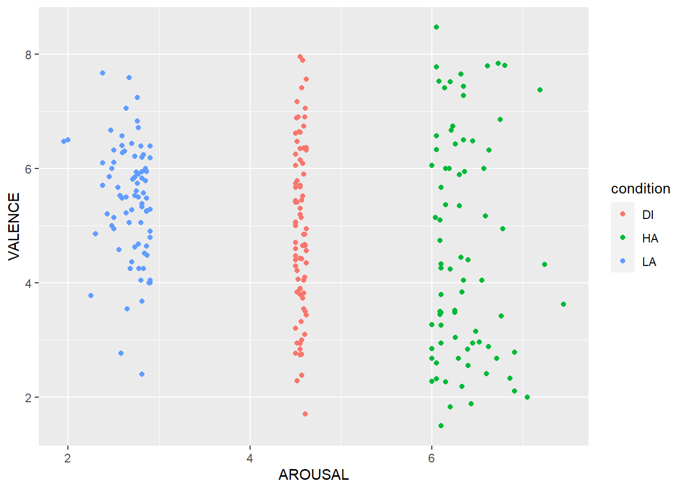

About this course
This course is a short introduction on using R for dealing with data.
Intended Learning Outcomes
The Intended Learning Outcomes (ILOs) for the entire course are:
- Demonstrate how R and RStudio work by transforming and cleaning different types of data into an appropriate format for analysis and creating graphical representations to visualise different types of data;
- Calculate summary statistics using R; and
- Interpret common error messages and use in-built help facilities to debug their code.
Each chapter contained within will come with its own specific ILOs which will be clearly specified at the top of each page.
These ILOs will be the points that will be covered in the assessments.
What will I need to complete this course?
To successfully complete this course, you will need access to a computer that either already has, or you can download R and RStudio software on. This computer will need to use a Windows, Mac or Linux based operating system. You can run RStudio on a Chromebook sometimes, but the process is more complex (see here).
If you cannot use RStudio on your computer you might want to consider using RStudio Cloud.
All University of Glasgow Library computers should have this software installed. If you have enrolled in the University, you should have access to these.
Before the first lesson you will be given the task of either installing R and RStudio on your own personal computer, or finding another suitable method of accessing the software. Full instructions will be given in Chapter 1 of this coursebook.
If you are having issues with access, talk to your tutors via the via the Microsoft Teams channel as soon as possible so that we can help you! R, like any skill, will get better with practice and we want to ensure you can practice and complete the assessments as easily as possible.
About the Assessments
Formative Assessments
These assessments allow you to revise the concepts that you have learned in class. They do not count towards the course grade and, although we encourage you to, there is no requirement to complete them.
These may take the form of coding assessments and/or multiple choice questions (MCQs) that will be delivered in the same format as the summative assessments - a downloadable file that you fill in the blanks of.
The answers for each of the formative assessments will be available at 5pm one week after the assessment is posted.
If you encounter something in the formative assessments that you want to ask a question about, then please use the Teams channel.
Summative Assessments
These are the assessments that count towards your course grade.
There will be 5 take-home exercises to complete as you progress through this course. They will be evenly spaced across the entire 10-week span, occurring every two weeks (after L2, L4, L6, L8, and L10). You will have one week from the time of the release of each assessment to submit your answer(s). The solutions of the summative assessments will be released with the grades and feedback (see schedule below), however, we can release solutions earlier once everyone has submitted or we have information that someone is not submitting their assessment for a particular week. So please let us know if you are not planning to submit a specific assessment.
For the summative assessments, we ask you to complete .Rmd files (either by answering multiple choice questions, producing code or explaining what a code chunk does), and upload them to Moodle in the assessment submission section. The .Rmd files and data for specific assessments will be provided in a zip folder within each lecture tile you are asked to download and unzip before you start an assessment. The folder you download will also contain a questions file. It is strongly recommended to read the questions file in combination with the .Rmd, as they might provide additional information (such as giving you hints what output to expect, or what a graph may look like etc.).
Summative assessments will be due ONE HOUR before the start of the next class the following week (see schedule below for specific dates).
We recommend that you start these early and, if required, seek assistance from the staff as early as possible. Please make use of the Teams channel if you are struggling or have questions! Remember you are not allowed to post any code on Teams.
Schedule of summative assessments
| Summative assessment | Assesses ILOs from lectures | Assessment released | Submission due | Grades & Feedback released |
|---|---|---|---|---|
| 1 (week 2) | 1 and 2 | 11/04 at 6pm | 18/04 at 5pm | 25/04 at 5pm |
| 2 (week 4) | 3 and 4 | 25/04 at 6pm | 02/05 at 5pm | 09/05 at 5pm |
| 3 (week 6) | 5 and 6 | 09/05 at 6pm | 16/05 at 5pm | 23/05 at 5pm |
| 4 (week 8) | 7 and 8 | 23/05 at 6pm | 30/05 at 5pm | 06/06 at 5pm |
| 5 (week 10) | 1-10 | 06/06 at 6pm | 13/06 at 5pm | 20/06 at 5pm |
Keep in mind that the column Assesses ILOs from lectures means that the assessment will test you predominantly on skills gained within the lectures listed (e.g. for week 4 that means lectures 3 and 4), however you will also need to use knowledge from previous lessons as your learning is supposed to be cumulative (e.g. basic knowledge from lectures 1 and 2).
We will never ask you to memorise any code as this is not how people produce code in reality. You may use notes and resources you complete in class to do these assessments and consult online resources to help you. You can work together to complete these tasks, but remember that grades are given on an individual basis and that you must not plagiarise the work of others.
For the purposes of your final grade, only 4 of these assessments will be counted and each will be worth 25%. The lowest score out of the 5 assessments will be dropped and not taken into account when calculating your final grade. We encourage you to complete all 5 assessments. You must complete at least 75% (= 3 summative assessments) to be eligible for course credits.
Late submissions & extensions
There will be penalties for late submissions. Your work will be assessed in the usual way, and the primary grade and secondary band will be adjusted to include reductions by two secondary bands for each working day (or part of a working day) the work was submitted late. For example, for submitting an assessment 6 hours after deadline with an assessed grade (had it been submitted on time) of A5, a penalty of 2 secondary bands reduction would result in a final grade of B2.
You can apply for extensions for up to 5 working days. In that case, no grade points will be taken off your final grade for submitting after the official deadline. Please email Gaby (g.mahrholz.1@research.gla.ac.uk) if you find yourself struggling to submit on time. We are here for you.
For extensions after 5 working days, you have to submit a good cause form. If an extension for good cause has been granted, and the extension is past the date that solutions for the assessment have been released, an alternative assessment will be provided.
Any blank document, or document that was submitted in a format other than an R Markdown file ending in .Rmd, will be considered as not submitted.
How to Submit Your Assessments
An .Rmd file to complete each summative assessment will be provided to you. In this file, you will be provided with code chunks in which to type your answers.
Once you have provided code in all of the appropriate slots, you will then upload this file to the Assessment Submission section on Moodle.
Formative assessments are not to be uploaded to Moodle. You will be provided an answer key to which you can compare your own answers. If you have questions about either your own answers or those provided by the tutors, please ask about it on the appropriate Teams channel.
Assistance
You can ask questions on the Microsoft Teams channel that accompanies this course. We ask that you do not post solutions to assessments here and any solutions posted will be removed.
Why are these materials open?
These materials have been adapted from various sources. Some of these materials have been Open Educational Materials with CC-BY-SA licenses. This means that any materials that use them must also be made open (SA means “share alike”).
We also believe in the value of open educational materials. Your course fees contribute to the development of this course, but also to providing you with lectures, supporting staff and certification and credits at the end of the course.
Acknowledgement
The materials were initially developed for the University of Glasgow Short Courses for the academic term 2019/20 by Gaby Mahrholz, Kate Haining, Rebecca Lai, Greta Todorova, and Wilhelmiina Toivo, and modified for the academic term 2020/21 by the current tutors.
Assignment before starting the course
This assignment is an important one as it will enable you to complete your future assignments. It looks long, but it is mostly screenshots to guide you through the process of installing the required software, or a short guide on how to use RStudio Cloud.
0.1 Access to RStudio
Please ensure by the next class that you have access to the software so that you can practice using the formative assignments and complete the summative assignments when they are issued.
The first summative assignment will be issued after class next week and you will be given one week to complete and submit it.
0.1.1 Installing R and RStudio on Your Own Machine
Unfortunately this is not as simple as installing software normally is on your computer. There are two separate things that you will need to install.
0.1.1.1 First: Install R
Follow this link and click on the part that says Download R R-4.1.3-win for Windows (or Mac). You will get the following pop-up dialogue (please note that as you are installing a newer version of R your download will be called R-4.1.3-win.exe instead of R-3.6.2 in the picture):

Click “Save File”. The file will then be downloaded to your computer, most likely the “Downloads” folder unless you have changed your settings. Double click to run the file.
You will be asked if you want to allow this to make changes to your computer, click yes. Select your language preference, review the license agreement and click next. The following screen will be presented:

Click next without changing the folder. The next screen let’s you customise the installation, but we shouldn’t need to make any changes at this point so click next without unselecting any components:

Also leave the star-up options as standard and click next:

Leave the start menu folder as standard:

Don’t make any changes to the additional tasks part, just click next:

The Install Wizard will then install R:

You will be told when installation is complete:

0.1.1.2 Second: Install RStudio
Follow this link to the RStudio website. Scroll down and press the button “Download” under RStudio Desktop- not the Server Option. On the next page press the button under stage 2, “Download RStudio for Windows”. Your download will start and you will see the following prompt (note your as your download is a newer version it will again be named slightly differently RStudio-2022.02.1-461) :

Click “Save File” when the button becomes active.
Look in your download folder and double click the downloaded file. Click to allow the program to make changes to your computer. You will see this part next:

Click next on this next window. Do not change the installation location. Click next:

You will be taken to this screen. Again, don’t change the start menu folder location here.

Click next and the installation will begin:

You will then be notified when the installation is complete with this screen:

0.1.2 Accessing RStudio on University Computers
If you have a student card you will be able to access computing facilities provided for students, including those in the various libraries across campus. All university computers should have R and RStudio installed, as well as the required packages for this course.
You will not be required to install anything on university computers, please don’t attempt to do so because we don’t want the IT guys to yell at us.
To login to the university computers you will require your GUID and password.
0.1.3 Using RStudio Cloud
We recognise that not all students will have access to their own computers, and that some of those students will not be able to travel to campus to use the provided facilities. For this reason we recommend to those in that postition to think about using RStudio Cloud, available here.
The RStudio Cloud allows you an electronic workspace, hosted by the RStudio team themselves.
Navigate to the page and click the “Sign Up” button at the top right-hand side of the page.
Once you are logged in you will see your (for now) empty workspace:

Click on “new project” and you will be taken to this page:

As you can see it is almost identical to the way the program would appear on your computer if you had installed it there.
To name your project you can click the name at the top of the page and type in a new one:

You will also need to upload any data files to the server before you can work with them. This is done with the addition to the panel Files/Plots/Packages/Help/Viewer on the right- the “Files” pane now had a button to upload:

Pressing this will open a pop-up box. Click on the “browse” button, navigate through your directories and identify the file you wish to upload and confirm. Then press ok. The file should then be uploaded and displayed in the files pane.

If at any point you are struggling to access the required materials or software it is important that you contact the tutors at the earliest opportunity to discuss the issues you are having.
We want you to do well and have a good experience learning with us, let us know if you are experiencing difficulty so that we may help you resolve it!
0.1.3.1 Downloading Your Files from RStudio Cloud
If you are using RStudio Cloud your files will be saved on the cloud, but you will need to download the .Rmd files that you have been working with (containing coursework etc) to upload them to the assignment submission pages on Moodle.
Here you can see the file myfile.Rmd that I have made on the cloud. To download it I select the checkbox next to the file and click on the “More” drop-down menu and click “export”, as shown here:

I then get a dialogue box asking me if I want to name the file something different. I will stick with the original name, so I just click “Download”:

Now I get a pop-up as I would when downloading any other file. To save the file ensure “Save File” is selected and click “OK”:

The file will then be saved in the folder where your downloads are saved (usually the “Downloads” folder by default). You can then navigate to this file when browsing files to upload to Moodle.
0.2 Maximising Reproducibility and Visibility
In order to set up R the way that we require, there are a few more steps.
First, open RStudio and click on the Tools menu at the top of the page and click on the part that says “Global Options”:

Next, a dialogue box will open. Ensure that these tick boxes and options are selected on yours and click apply:

Finally, go to RMarkdown and ensure that this option is unchecked:

This meaning of the first part will be discussed in future lessons, and the second will mean that graphs that you make will be in the “Plots” tab to the right of the console. This means that code will not be obscured whenever you make a graph.
1 Introduction
Intended Learning Outcomes
By the end of this session you should be:
- Familiar enough with a computer to open, save and access previously saved files.
- Able to describe R and Studio, the coding environment and the associated file types.
- Able to install, load and describe the nature of R packages and describe the nature and use of functions in general.
This lesson is led by Johanna Werner.
1.1 Computer Literacy Basics
In order to successfully navigate this course there are a number of things that you need to know about computers more generally. This section includes everything that you are required to know or learn.
We are aware that many people will have been using computers for many years, and in some cases many people will have grown up with them in their household. We have noticed, however, that a number of our incoming students are not familiar with many of the basic concepts that are required to be a successful coder. There is an assumption that “digital native” automatically equates to “computer literate” but in many cases we have found this assumption to be incorrect.
More people than ever before are using some sort of personal computing device, but the type of use differs greatly from what we are going to be doing over the next 10 weeks. Many mobile phones, tablets and (increasingly) PC operating systems hide many of their operations from users. This can create a feeling of competency with computers that can quickly dissolve when asked to engage with anything slightly more complex.
If you already know most of this then we apologise, but there may be people with us who don’t. This is a beginner class, so we thought it prudent to start us all off on the same footing.
1.2 R and R Studio
Are they different? Yes! Is this important? Yes!
1.2.1 R

R is a programming language and completely free software, and it is widely used for data analysis. It is a stand-alone program and can be run on it’s own without R Studio, but it’s not particularly user friendly.

1.2.2 RStudio IDE

RStudio IDE (short for Integrated Development Environment) is essentially a shiny facade, which sits atop R and gives it many useful features and makes it much easier to use.
When you first open it you get 3 main panels, which can be seen in the picture below.

1.2.2.1 Console
This is essentially the same thing as R commander. You can run code in here, and it can be a useful playground to try out new things and do things that you don’t necessarily want saved into a script because it’s not permanent- anything typed here will be lost when you close R!
Examples of things you might want to run in the console include, but are not limited to, running new functions and seeing what they do, or installing packages (never EVER done in a script).
This is what the console looks like before you have run any code:

1.2.2.2 Environment/History/Connections
This panel is tabbed, with 2 tabs that you need to pay particular attention to right now:
Environment: this contains all of the virtual “objects” that you have created. These include, but are not limited to, variables containing data that you have read in, lists, individual values, custom-written functions.
Objects can and should be created in your scripts. When you close R you might lose some of the objects, but as long as you have the script containing the instructions to re-create these objects you can re-run it and make them again.
History: this is a list of all of the commands that you have run in the past “session”, which can be useful to go back to some times if you did run some code in the console that you want to look at again. To scroll through you can put the cursor in the console window and use up and down keys.
At this point you don’t really need to worry about the one called connections (it lets you connect to things like online data sources).
This is what that panel looks like for me right now… it’s empty!

1.2.2.3 Files/Plots/Packages/Help/Viewer
This panel set is going to be extremely useful to you throughout the duration of your career as an R user. Viewer is not immediately required, so we’ll just cover Files, Plots, Packages and Help.
Files: Shows a file browser that lets you look around in your file structure. helpful hint: click on the more button and “Go to working directory” to see the same files that R can see. You can load files in through this tab, but you should always strive to do it in the script!
Plots: A tab that displays plots that you have made. You can navigate backwards and forwards between multiple plots- allowing you to test out new things and see the changes in comparison to each other.
Packages: This allows you to look at the R packages that are installed on the machine that you are using, and the check box next to it indicates if it is loaded in from the library. You can click the box to load a package, but you should always strive to do it in the script!
Help: this window displays the built in help information, much the same as Microsoft Word or Powerpoint has. You can search using the search box, but you can also type into the console. For example, if I wanted to find the help file for the
library()function I would type?library. the result is displayed in the help tab to the right.

Alternatively, you can type the name of the function you want help with into the search box in the help tab:

Sometimes these files are not exactly written in a manner that could be considered accessible to novice users. You get the hang of reading them over time. In this case you might want to try Googling it… we all do it, no matter our level of experience!
Even Googling can be difficult, but you will eventually get a better idea of the types of search terms most likely to direct you to the information that you are after.
1.3 R, R Studio and Associated File Types
When you open a program, such as Microsoft Word, you haven’t actually created a Word document you’ve just started the program. Opening RStudio is much the same. Even though it can function without opening a file, there is much utility to be added by opening a file.
When you open a file, the console will shrink and the space taken away in the window will be taken up by the new file.
Opening a new file allows you to write code that can be saved, amended, shared etc. Code sharing is an important aspect of reproducibility!
R can handle a lot of different files types, we will only focus on the two types. These are .r and .Rmd files. Both are saved as plain text files. Many of the files R uses are plain text files at their core. What changes is how R interprets the files, and the types of outputs that you can get from them.
1.3.1 File Structure/Directories
Your files should be stored in something called “directories”. This is the technical name for a folder. It is a storage space on your computer. Here you can see all of the files contained within the folder for this course document in the “File Explorer”, the program used to view files and folders in Windows:

Each folder and the files within will have a specific “file path”, an address within your file storage system that allows you and the computer to pinpoint the location of the information that you and it need to perform tasks involving that file. In windows you can get the file path of a folder by clicking on the bar at the top of the folder when you are looking in it in the file explorer:

This will be necessary later when you start to use RStudio in conjunction with external files, such as data files.
1.3.2 File Extensions
Files come in different types, and each different type comes with a different file extension, meaning that it is associated with a different type of program. A file extension is that part after a full-stop in the file name. Some common ones are:
- .xlsx: a spreadsheet file associated with Microsoft Excel
- .docx: a formatted text document associated with Microsoft Word
- .pdf: a Portable Document File, commonly text and images, associated with Adobe Acrobat
- .txt: a plain text file, can be opened in multiple programs such as Notepad or other word processing software.
- .zip: a compressed folder which can contain many files. These files must be uncompressed/extracted before you use them successfully.
1.3.3 .zip Files
In this course we will often ask you to download a folder with multiple files and this will be stored on Moodle as a zip file. A zip file is a folder that contains files that have been compressed to make the file size smaller and enables you to download multiple files at once, however, before you use the files from a zip folder you first need to extract them.
- Click on the link to download the compressed folder.
- Navigate to the zip file (probably in your downloads folder) and open it. You will see all the files it contains but don’t use these - click “Extract all” on the top ribbon.
- You will be asked to select a location to save the unzipped files. Normally the default location it suggests will be the same folder and so you can just click “Extract”. If you want to unzip these files to a different place click browse and select the folder you want to keep it in. I like to keep all the files for one project in the same folder.
- You can now delete the zip file and use the unzipped files. This is a really important step - if you use the compressed files your code may not work properly. This usually causes error messages relating to temporary files.

1.3.4 RStudio Specific Files
RStudio uses many different types of files, but each is a variation on a “plain text” file. This means that all files we will be using in class will be able to be opened in Notepad or other similar text programs. The three main ones we will be working with will be:
- .r: an R script
- .Rmd: an RMarkdown document
- .csv: Comma Separated Values file, a common and universal type of file containing data sets.
If the file extension on a file is incorrect it may not be recognised as a file to be opened with a specific program and might not work.
This is particularly an issue when you are downloading your files for class. As they are technically “plain text” files, some internet browsers will download them with the extension “.txt”, or even add it on as a second one which doesn’t work! Changing the extension to “.Rmd” or removing the extra added one will solve this issue.
1.3.5 .r Files
This is what we refer to as a script. It is designed to be read by R, not so much by humans. To create a new script go to File > New File > R Script. This is what will be brought up:

All of the text in an R script will default to being read as executable code (that is, text which is directed at the machine). We can, however, tell R not to read it as executable code, but instead for the machine to ignore certain parts of it, by using something called comments- you will read more about these below.
1.3.6 .Rmd files
These are the types of files that you will mostly be using during this class. You will also be given some pre-formatted ones to complete your assessments on.
When you go to File > New file > R Markdown… you will be prompted to supply some information. You can do this, but don’t have to as you can change many of these parameters later:

When a new RMarkdown file is opened the file isn’t empty. What you actually get is an example with a YAML header (at the top bordered with the dashes), some code chunks (in the shaded sections, more on these in a minute), text and some headers (the hashtagged blue text outside of chunks).
I like to think of the way this file type is interpreted as being like a script, but flipped- the default interpretation of text aimed at humans. If we want executable code we need to prompt R to read the text in this way. This is done using “code chunks”, or sometimes just called “chunks”.

1.3.6.1 Code Chunks
Code chunks are bordered by “backticks”, which look an awful lot like apostrophes but they are different! These are important as they tell R where it needs to start and stop reading.
Chunks also contain “curly brackets” at the start which contains various bits of information necessary to how the computer reads it. This includes what programming language you are writing in there (yes! R can understand other programming languages!), name of the chunk (used for a variety of reasons, such as our marking software and document indexing) and other attributes which are not necessary to learn about right now.

The chunk must have the backticks to show the beginning and end of the executable code, otherwise the code doesn’t run.
You must not add any code or text to the lines which contain backticks other than the code to alter the attributes of the chunk within the curly brackets (and only if you know how to do so). If you do this the code will not run and other chunks in the document might also be affected.
Hashtags used inside of code chunks don’t result in headers, but rather are ignored as the comments discussed in the section about .r files.
1.5 Saving your file
As mentioned before, anything in the console vanishes when you close R. Any objects that you have used code to make (those things that live in the environment) should vanish too.
Your script is a set of instructions on how to make those objects. If you have saved your script or markdown, you can just re-run it and get back to where you left off when you last saved your progress.
Saving your file for the first time is as easy as going to File > Save As and filling in the details in the dialogue box as appropriate:


Saving changes to an already existing file is done by going to File > Save:

1.6 Sessions
1.6.1 What is a session in R?
A session in R is a segment of time/workspace/processor time that is dedicated to performing a specific processing or analysis task. It can be difficult to wrap your head around at first, but it helps to draw comparisons with software that we are already familiar with.
Let’s go back to Microsoft Word. We can have an essay open in one window and class notes opened up in another window. Both are instances of Word, but they are dedicated to two different tasks which just so happen to be running concurrently.
You can have multiple sessions open in R, but we wouldn’t recommend it, because it can become confusing. We can start a new session by going to Session > new session. We are much more interested in a task which is closely linked to this idea- restarting your current session.

1.6.2 Restarting Your Current Session
This can be done by going to Session > Restart R, see the image above.
Restarting your R session does some important things:
- it clears the environment of objects if R is set up in a maximally reproducible way- so make sure your script is saved so that you keep the instructions for making them again
- it “unloads” packages that you have called from the library using the
library()function - If you encounter an error with an unknown source sometimes restarting the session can clear the problem
- It allows you to test the reproducibility of the script that you are writing by clearing the environment and starting over with only the instructions you have provided, without the possibility of “contamination” of objects inadvertently created in other ways, such as playing in the console
1.7 Packages
R is a programming language which is primarily used for data processing and analysis. As the software is open source a number of people have created extensions to the software to adapt it to their needs.
These software extensions are referred to as “packages”.
1.7.1 Installing Packages
There are a number of functions that we will be using in this course that are not part of the original programming language. The most common package we will be using will be one called “tidyverse”.
We will use the example of tidyverse to show you how to install packages that you might need.
1.7.1.1 What is Tidyverse?
Do not install any packages on the university machines. All the packages you need are already installed. You would only need to install packages if you are using your own machine.
You must also never place install.packages() in any r
script or RMarkdown document: installing it a second time can break the
installation and by sharing this script you would be attempting to force
others to install it on their machines.
This is at best rude and at worst it can break their installation.
Tidyverse is a “metapackage”- a package that is actually a collection of packages that have been bundled together. It was developed by Hadley Wickham. You can read more abut the package here.
1.7.1.2 install.packages()
When you install a package, you should do this in the console part of the interface, as shown here:
Types the following in and then hit “enter”:
> install.packages("tidyverse")Note that the name of the package is in quotation marks when used here. This is not always the case!
The console will then fill with a lot of text showing you what is being done. It is not necessary to understand all of this.
Look out for this message being printed in the console

This indicates that the package has been installed successfully. There will be many of these messages for different packages. There may even be parts after this message if the computer determines that other “dependencies” (additional software that tidyverse requires to run) are required.
Once R has stopped working (doing it’s current task) the > will reappear in the console. This symbol reappearing means that R is ready for further code.
To install other packages you would reuse the function install.packages(), replacing the name “tidyverse” with the name of the package you want to install.
We will cover functions shortly.
1.7.2 Loading Packages
Now that we have installed tidyverse it is on our machine but it is not ready to use yet!
It is easier to understand if you think about it like this: if you install Instagram on your phone you only do it once and you have to open the app each time you want to use it.
Similarly, once tidyverse is installed it is on your computer until you remove it. If you want to use it you need to “open it”. This is done by using another function, library().
library(tidyverse)This must be done before you use tidyverse. We normally do this in the first chunk in the document, essentially gathering our tools before we start working.
If you want to load other packages you would reuse the function library(), replacing “tidyverse” with the name of the package you want to load.
1.8 Functions
“Function” is a word that you will hear a lot in this class. But what are they? What do they look like? what are they made up of?
1.8.1 What is a function?
If I were to tell you to jump, you would understand the action I was asking you to perform wouldn’t you? But before you carry it out you might ask me a question in return: how high?
This is what a function is for R… it’s a command that tells R to do something. It just does it in a way that R understands.
1.8.2 The Anatomy of a Function: names and arguments
Functions are made up of elements. See the code chunk below:
function_name(argument1, argument2, etc...)The part outside of the brackets is the name of the function. This tells R exactly what to do- the action to be performed. The parts inside the brackets are called arguments… these provide information to R on what to perform the actions on (and input) and can provide information on slight changes to the actions.
Essentially the function name is the action to perform (jump) and the arguments give information on how to perform the action (how high).
Think about install.packages(“tidyverse”) and
library(tidyverse): what are the function names and what
are the arguments? Which part changes when you want to install and load
a different package?
Once your function has taken the input and run the command on it, it will produce an output.
As we progress through this course, see if you can spot the functions, the arguments, the inputs and the outputs.
1.9 Formative Homework
1.9.1 Install R and RStudio on your personal computer
If you haven’t done so, please read the chapter Assignment before starting the course and either install R and RStudio on your own computer, or familiarise yourself with the RStudio Cloud.
1.9.2 Installing and Loading tidyverse
Use the information in the section @ref(install-tidyverse) above to install the tidyverse package on your RStudio installation.
If you are using RStudio Cloud you are provided with a completely
self-contained computing environment. This means that you can
install.packages() on your virtual RStudio too as
required.
Load tidyverse from the using the library() function in section @ref(load-tidyverse). For now you can do this in either a new .r file, .Rmd file or even in the console.
If you successfully load it you will see this printed in the console:

You will be using the tidyverse package in the next lesson, so don’t worry if you struggle with this at the moment.
2 Introduction to Data
Intended Learning Outcomes
- understand basic data types
- create and store vectors
- convert data types into one another
- create a data table from scratch
- import and store data
This lesson is led by Johanna Werner.
2.1 Pre-Steps
Before we begin, we need to do some house-keeping.
2.1.1 Downloading materials
First, we need to download the materials we are working with today. You can find them on moodle. It’s a zip folder that contains an Rmd file called L2_stub and a data file in .csv format for later. L2_stub has all the code chunks listed for today’s lesson. You are more than welcome to add notes and comments to the Rmd (white chunks), however there is no need to copy any code.
2.1.2 Unzipping the zip folder
The folder we have downloaded is a zip folder. R cannot handle zip folders very well, so the folder needs to be unzipped. Right-mouseclick on the zipped folder, then choose Extract All....
Copy and paste/ move the folder to your M drive (or somewhere that makes sense to you - and where you can find it again - if you are using your own computer).
Check the unzipped folder contains the L2_stub.Rmd and a data file called MM_data.csv.
2.1.3 Setting the working directory
It is always good practice to set your working directory to the folder you are working with. This can be done in 2 ways:
In the menu, go to Session > Set Working Directory > Choose Directory (Ctrl + Shift + H also works as key short cut in a Windows environment). Then select the folder containing the data file and click ‘open’. You might not see any files in the folder you are selecting - that is fine.
In the
Files pane, you could navigate to today’s folder, and once there click on More > Set As Working Directory.
Whichever way you prefer is fine. The files L2_stub and MM_data.csv should now be visible in the Files pane.
2.2 Basic data types
There are plenty data types, however for our purposes we will be focussing on:
| data type | description | example |
|---|---|---|
| character | text string | "hello World!", "35.2", 'TRUE' |
| double | double precision floating point numbers | .033, -2.5 |
| integer | positive & negative whole numbers | 0L, 1L, 365L |
| logical | Boolean operator with only two possible values | TRUE, FALSE |
2.2.1 Character
You can store any text as a value in your local environment. You can either use single or double inverted commas.
my_quote <- 'R is Fun to learn!'
cat(my_quote) # cat() prints the value stored in my_quoteIf you want to use a direct quote, you need to include a backslash before each inverted comma.
direct_quote <- "My friend said \"R is Fun to learn\", and we all agreed."
cat(direct_quote)## My friend said "R is Fun to learn", and we all agreed.
You can check the data type using the typeof() function.
If you want to know which class they belong to, you can use the
class() function.
2.2.2 Numeric
double and integer are both class numeric. Double is a number with decimal places whereas integer is a number that’s a full number. Any number will be stored as a double unless you specify integer by adding an L as a suffix.
Example:
typeof(359.1)## [1] "double"typeof(5)## [1] "double"typeof(45L)## [1] "integer"2.2.3 Logical
A logical vector is a vector that only contains TRUE and FALSE values. You can use that type of data to compare (or relate) 2 pieces of information. We have several comparison (or relational) operators in R. A few of them are:

More information on logical comparison operators can be found on https://bookdown.org/ndphillips/YaRrr/logical-indexing.html (from which the above image was modified).
You could compare if two values are equal…
100 == 100## [1] TRUE… or if they are not equal.
100 != 100## [1] FALSEWe can test if one value is smaller or equal than the other…
5 <= 9-4## [1] TRUE… or if one value is larger than another.
101 > 111## [1] FALSENote that it works with character strings as well. (Not really important for this class though)
# "a" == "a" would be TRUE as both side of the comparison contain the same information.
"a" == "a"## [1] TRUE# "a" <= "b" would be TRUE as a comes before b in the alphabet (i.e. 1st letter vs 2nd letter)
"a" <= "b"## [1] TRUE# "abc" > "a" would be TRUE as there are more values on the left than on the right
"abc" > "a"## [1] TRUEQuestion Time
Run the following examples in your Console and select from the drop down menu what data type they belong to:
- class(1):
- class(1L):
- class(1.0):
- class(“1”):
- class(1L == 2L):
- class(1L <= 2L):
- class(1L <= 2L, “1”):
Any number will be stored as a double unless you specify
integer by adding an L as a suffix.
2.3 Vectors
Vectors are one of the very simple data structure in R. You could define them as “a single entity consisting of a collection of things”.
2.3.1 Creating vectors
If you want to combine more than one element into one vector, you can do that by using the c() function. c stands for combine or as my colleague once said, it’s hugging multiple elements together. All elements in the vector have to be of the same data type.
Examples:
This is a vector of datatype double.
c(1, 2.5, 4.7)## [1] 1.0 2.5 4.7typeof(c(1, 2.5, 4.7))## [1] "double"This is a vector of datatype integer. Adding the L makes it an integer, but see that in the printout the L is actually omitted.
c(0L, 1L, 2L, 365L)## [1] 0 1 2 365typeof(c(0L, 1L, 2L, 365L))## [1] "integer"This is a vector of datatype character.
c("hello", "student")## [1] "hello" "student"typeof(c("hello", "student"))## [1] "character"This is a vector of datatype logic.
c(TRUE, FALSE)## [1] TRUE FALSEtypeof(c(TRUE, FALSE))## [1] "logical"We have seen what vectors look like. If you want to store these vectors in your global environment, all you need is the assignment operator <- and a meaingful name for “the thing” you want to store. Here the first example reads like: “Take a vector of 3 elements (namely 1, 2.5, 4.7) and store it in your Global Environment under the name vec_double.” You can then use the name you assigned to the vector within the typeof() function, rather than the vector itself.
vec_double <- c(1, 2.5, 4.7)
typeof(vec_double)## [1] "double"vec_integer <- c(0L, 1L, 2L, 365L)
typeof(vec_integer)## [1] "integer"vec_character <- c("hello", "student")
typeof(vec_character)## [1] "character"vec_logic <- c(TRUE, FALSE)
typeof(vec_logic)## [1] "logical"
Funnily enough, a vector i <- c(1,3,4,6) would be
stored as a double. However, when coded as
i <- 1:10 would be stored as an
integer.
Don’t believe it? Try it out in your Console!
Question Time
Your turn
-
Create a vector of your 3 favourite movies and call it
favourite_movies. What type of data are we expecting? -
Pick a couple of your family members or friends and create a vector
years_birththat lists their year of birth. How many elements does the vector have, and what type of data are we expecting? -
Create a vector that holds all the letters of the alphabet and call it
alph. -
Create a vector with 3 elements of your name, age, and the country you are from. Store this vector under the name
this_is_me. What type of data are we expecting?
# Gaby's solution:
favourite_movies <- c("Red", "Cloud Atlas", "Hot Fuzz") # character
years_birth <- c(1953, 1975) # double
alph <- letters # muahahahaaaa! & character
this_is_me <- c("Gaby", 38, "Germany") # characterMore detailed explanations:
R has Built-in Constants:
-
letters: the 26 lower-case letters of the Roman alphabet;
-
LETTERS: the 26 UPPER-case letters of the Roman alphabet;
-
month.abb: the three-letter abbreviations for the English month names;
-
month.name: the English names for the months of the year;
-
pi: the ratio of the circumference of a circle to its diameter
Of course, the task could have been solved typing alph <- c(“a”, “b”, “c”, “d”, “e”, “f”, “g”, “h”, “i”, “j”, “k”, “l”, “m”, “n”, “o”, “p”, “q”, “r”, “s”, “t”, “u”, “v”, “w”, “x”, “y”, “z”)
this_is_me would be stored as a character
vector despite having text as well as numeric elements. Remember how we
said earlier that all elements have to be of the same data type? After
the next section, you will understand why they are stored as a character
and not as a numeric vector.
2.3.2 Converting vectors into different data types of vectors aka funky things we can do
We can also reassign data types to our vectors we have just created. For example if we wanted to turn our var_double from double to character, we would code
vec_double_as_char <- as.character(vec_double)
typeof(vec_double_as_char)## [1] "character"In your Global Environment, you can now see that the vector vec_double has 3 numeric elements (abbreviated num), whereas vec_double_as_char has 3 character elements (abbreviated chr). Also note that the numbers 1.2, 2.5, and 4.7 have now quotation marks around them.
Likewise, if we wanted to turn our integer vector vec_integer into data type double, we would use
vec_integer_as_double <- as.double(vec_integer)
typeof(vec_integer_as_double)## [1] "double"In your Global Environment, see how vec_integer has int assigned to it, whereas vec_integer_as_double is now listed as num. The typeof function revealed that the 4 elements of vec_integer_as_double are now stored as data type double.
However, trying to turn a character vector into an integer or a double would fail.
vec_char_as_int <- as.integer(vec_character) # same outcome if we tried as.double## Warning: NAs durch Umwandlung erzeugttypeof(vec_char_as_int)## [1] "integer"R would still compute “something” but it would be accompanied by the above warning message. As you can see in your Global Environment, vec_char_as_int does indeed exist as a numeric vector with 2 elements, but NA tells us they are classified as missing values.
A logical vector can be converted into all other basic data types.
vec_logic_as_int <- as.integer(vec_logic)
vec_logic_as_int## [1] 1 0TRUE and FALSE will be coded as 1 and 0 respectively when converting a logical into a numeric vector (integer or double). When converting a logical into a characters, it will just read as "TRUE" and "FALSE".
vec_logic_as_char <- as.character(vec_logic)
vec_logic_as_char## [1] "TRUE" "FALSE"Question Time
Remember the vector this_is_me? Can you explain now why it was stored as character?
this_is_me would be stored as a character
vector because this is the best way to retain all information. If this
were to be stored as a numeric vector, the name and home
country could only be coded as missing values NA. So rather
than trying to turn everything into a number (which is not possible/
does not retain meaningful information), R turns the number into
character (which is possible).
With this in mind, what data type would the vector be stored as if you combined the following elements?
- logical and double - i.e. c(TRUE, 45)
- character and logical - i.e. c(“Sarah”, “Marc”, FALSE)
- integer and logical - i.e. c(1:3, TRUE)
- logical, double, and integer - i.e. c(FALSE, 99.5, 3L)
- double
- character
- integer
- double
2.3.3 Adding elements to existing vectors
Let’s start with a vector called friends that has three names in it.
friends <- c("Gaby", "Wil", "Greta")
friends## [1] "Gaby" "Wil" "Greta"We can now add more friends to our little group of friends by adding them either at the end, or the beginning of the vector. friends will now have four, and five values respectively, since we are “overwriting” our existing vector with the new one of the same name.
friends <- c(friends, "Kate")
friends## [1] "Gaby" "Wil" "Greta" "Kate"friends <- c("Rebecca", friends)
friends## [1] "Rebecca" "Gaby" "Wil" "Greta" "Kate"Vectors also support missing data. If we wanted to add “another friend” whose name we do not know yet, we can just simply add NA to friends.
friends <- c(friends, NA)
friends## [1] "Rebecca" "Gaby" "Wil" "Greta" "Kate" NAThe vector friends would still be a character vector. Missing values do not alter the original data type. However, if you look in the Global Environment, you can see that the number of elements stored in friends increased from 5 to 6. To determine the number of elements in a vector in R (rather than eye sight), you can also use a function called length().
typeof(friends)## [1] "character"length(friends)## [1] 6Well, now we decided that 5 friends in our little group of friends is sufficient, and we did not want anyone else to join, we could remove the “placeholder friend NA” by coding
friends <- friends[1:5]
friends## [1] "Rebecca" "Gaby" "Wil" "Greta" "Kate"You can see that the length of the vector friends is now back to 5 again.
1:5 uses the colon operator: which is read
as in “access the vector elements 1, 5, and everything in between”. An
alternative way of writing out the above without using a colon operator
would be friends[c(1,2,3,4,5)]. Notice that you need the
c() function again.
Just as easily, we can create vectors for numeric sequences. The function seq() is a neat way of doing this, or you can use the colon operator: again. Just with the elements in the vector above, the same logic applies here. For example 1:10 means, you want to list number 1, number 10, and all numbers in between.
sequence1 <- 1:10
sequence1## [1] 1 2 3 4 5 6 7 8 9 10sequence2 <- seq(10)
sequence2## [1] 1 2 3 4 5 6 7 8 9 10# compare whether sequence1 and sequence2 are of the same data type
typeof(sequence1) == typeof(sequence2)## [1] TRUE# compare whether elements of sequence1 are the same as the elements in sequence2
sequence1 == sequence2## [1] TRUE TRUE TRUE TRUE TRUE TRUE TRUE TRUE TRUE TRUEQuestion Time
- What data type is
sequence1? - What data type is
sequence2? - If we were to store the output of
sequence1 == sequence2in a vector, what data type would the vector be?
2.4 Tibble - the new way of creating a dataframe
2.4.1 What the heck is a tibble? Do you mean table?
First of all, tibble is not a spelling error; it’s the way r refers to its newest form of data table or dataframe. Strictly speaking, a tibble is a list of vectors.
You can create a dataframe either by using the tibble() function or a function called data.frame(). tibble() is part of the package tidyverse whereas data.frame can be found in base R and does not need an additional package read into the library. Tibbles are slightly different to dataframes in that
- they have better print properties (Dataframes print ALL data when you call the data whereas tibbles only print the first 10 rows of data)
- character vectors are not coerced into factors (which you will be thankful for later on in your programming life)
- column names are not modified (for example if you wanted to make a column called
Female Voicesyou could just do that.tibblekeeps it asFemale Voiceswith a space between the two words, whereas thedata.tablefunction would change it toFemale.Voices)
If you want to read more about the differences between dataframes and tibbles (and appreciate the advantages of tibbles), have a look on https://cran.r-project.org/web/packages/tibble/vignettes/tibble.html.
2.4.2 How to make a tibble from scratch
Now that you have learnt how to create vectors, we can try and combine them into a tibble. The easiest way is to use the tibble() function. Let’s say we want to create a tibble that is called tibble_year with 4 columns:
- The first column
monthlists all months of the year - The second column
abb_monthgives us the three-letter abbreviation of each year. - The third column
month_numtells which number of the year is which month (e.g. January would be the first month of the year; December would be number 12). - The fourth column
seasonwould tell us in which season the month is (Northern hemisphere).
Remember the Built-in Constants we were talking about earlier?
# Remember to load tidyverse into your script at least once (usually at the beginning)
library(tidyverse)
tibble_year <- tibble(month = month.name,
abb_month = month.abb,
month_num = 1:12,
season = c(rep("Winter", 2), rep("Spring", 3), rep("Summer", 3), rep("Autumn", 3), "Winter"))
tibble_year## # A tibble: 12 x 4
## month abb_month month_num season
## <chr> <chr> <int> <chr>
## 1 January Jan 1 Winter
## 2 February Feb 2 Winter
## 3 March Mar 3 Spring
## 4 April Apr 4 Spring
## 5 May May 5 Spring
## 6 June Jun 6 Summer
## 7 July Jul 7 Summer
## 8 August Aug 8 Summer
## 9 September Sep 9 Autumn
## 10 October Oct 10 Autumn
## 11 November Nov 11 Autumn
## 12 December Dec 12 WinterThe generic structure of each of these columns we are creating is column header name = values to fill in the rows.
Here, we used the built-in replication function rep() to
build the column season which is a more time-efficient
approach than typing out 4 seasons 3 times. Of course, we could have
written season = c(“Winter”, “Winter”, “Spring”, “Spring”, “Spring”,
“Summer”, “Summer”, “Summer”, “Autumn”, “Autumn”, “Autumn”, “Winter”)
instead.
We can now use the function glimpse() to see which data types our columns are. This is a very handy function to keep in mind for later!
glimpse(tibble_year)## Rows: 12
## Columns: 4
## $ month <chr> "January", "February", "March", "April", "May", "June", "Jul~
## $ abb_month <chr> "Jan", "Feb", "Mar", "Apr", "May", "Jun", "Jul", "Aug", "Sep~
## $ month_num <int> 1, 2, 3, 4, 5, 6, 7, 8, 9, 10, 11, 12
## $ season <chr> "Winter", "Winter", "Spring", "Spring", "Spring", "Summer", ~glimpse() tells us that our tibble has one column that is an integer, and three columns that are character strings. If we wanted to influence which datatype the columns (something that is not automatically assigned), we can do that by using the functions as.double(), as.character(), as.integer(), etc. we have seen earlier when we were talking about vectors. For example, if we wanted to modify the integer column as a double, we would type
tibble_year2 <- tibble(month = month.name,
abb_month = month.abb,
month_num = as.double(1:12),
season = c(rep("Winter", 2), rep("Spring", 3), rep("Summer", 3), rep("Autumn", 3), "Winter"))
If you click on the name of the dataset in your
Global Environment to view your dataframe, you would see no
actual difference between tibble_year and
tibble_year2. However, glimpse() would tell
you.
If I were a mean person, and had recoded month_num = as.character(1:12) instead, you would not see it when you visually inspect the data. What would the consequences be?
Question Time
Your turn
Make a tibble called mydata with 5 columns and 10
rows:
-
column 1 is called
PP_IDand contains participant numbers 1 to 10. Make sure this data type isinteger. -
column 2 is called
PP_Ageand and contains the age of the participant. Make sure this data type isdouble. -
column 3 is called
PP_Sexand contains the sex of the participant. Even PP_IDs are male, odd PP_IDs are female participants. -
column 4 is called
PP_Countryand contains the country participants were born in. Surprise, surprise - they were all born in Scotland!!! -
column 5 is called
PP_Consentand is an overview whether participants have given their consent to participate in an experiment (TRUE) or not (FALSE). Participants 1-9 have given their consent, participant 10 has not.
# Gaby's solution:
mydata <- tibble(PP_ID = 1:10,
PP_Age = c(22, 21, 24, 36, 33, 25, 21, 31, 28, 35),
PP_Sex = rep(c("Female", "Male"), 5),
PP_Country = "Scotland",
PP_Consent = c(rep(TRUE, 9), FALSE))But there are plenty of other ways how this could have been done. For example:
-
PP_ID = seq(10)
-
PP_ID = as.integer(c(1, 2, 3, 4, 5, 6, 7, 8, 9, 10))
-
PP_Age = as.double(22:31)
-
PP_Sex = c(“Female”, “Male”, “Female”, “Male”, “Female”, “Male”,
“Female”, “Male”, “Female”, “Male”)
-
PP_Country = rep(“Scotland”, 10)
- PP_Consent = c(TRUE, TRUE, TRUE, TRUE, TRUE, TRUE, TRUE, TRUE, TRUE, FALSE)
2.5 Reading in data
2.5.1 from pre-existing databases
R comes with pre-installed datasets available for you to use and practice your skills on. If you want have an overview over all databases available type data() into your Console.
One of those datasets is called “Motor Trend Car Road Tests” or in short mtcars. If you type mtcars into your Console, you can see what the dataset looks like.
mtcars## mpg cyl disp hp drat wt qsec vs am gear carb
## Mazda RX4 21.0 6 160.0 110 3.90 2.620 16.46 0 1 4 4
## Mazda RX4 Wag 21.0 6 160.0 110 3.90 2.875 17.02 0 1 4 4
## Datsun 710 22.8 4 108.0 93 3.85 2.320 18.61 1 1 4 1
## Hornet 4 Drive 21.4 6 258.0 110 3.08 3.215 19.44 1 0 3 1
## Hornet Sportabout 18.7 8 360.0 175 3.15 3.440 17.02 0 0 3 2
## Valiant 18.1 6 225.0 105 2.76 3.460 20.22 1 0 3 1
## Duster 360 14.3 8 360.0 245 3.21 3.570 15.84 0 0 3 4
## Merc 240D 24.4 4 146.7 62 3.69 3.190 20.00 1 0 4 2
## Merc 230 22.8 4 140.8 95 3.92 3.150 22.90 1 0 4 2
## Merc 280 19.2 6 167.6 123 3.92 3.440 18.30 1 0 4 4
## Merc 280C 17.8 6 167.6 123 3.92 3.440 18.90 1 0 4 4
## Merc 450SE 16.4 8 275.8 180 3.07 4.070 17.40 0 0 3 3
## Merc 450SL 17.3 8 275.8 180 3.07 3.730 17.60 0 0 3 3
## Merc 450SLC 15.2 8 275.8 180 3.07 3.780 18.00 0 0 3 3
## Cadillac Fleetwood 10.4 8 472.0 205 2.93 5.250 17.98 0 0 3 4
## Lincoln Continental 10.4 8 460.0 215 3.00 5.424 17.82 0 0 3 4
## Chrysler Imperial 14.7 8 440.0 230 3.23 5.345 17.42 0 0 3 4
## Fiat 128 32.4 4 78.7 66 4.08 2.200 19.47 1 1 4 1
## Honda Civic 30.4 4 75.7 52 4.93 1.615 18.52 1 1 4 2
## Toyota Corolla 33.9 4 71.1 65 4.22 1.835 19.90 1 1 4 1
## Toyota Corona 21.5 4 120.1 97 3.70 2.465 20.01 1 0 3 1
## Dodge Challenger 15.5 8 318.0 150 2.76 3.520 16.87 0 0 3 2
## AMC Javelin 15.2 8 304.0 150 3.15 3.435 17.30 0 0 3 2
## Camaro Z28 13.3 8 350.0 245 3.73 3.840 15.41 0 0 3 4
## Pontiac Firebird 19.2 8 400.0 175 3.08 3.845 17.05 0 0 3 2
## Fiat X1-9 27.3 4 79.0 66 4.08 1.935 18.90 1 1 4 1
## Porsche 914-2 26.0 4 120.3 91 4.43 2.140 16.70 0 1 5 2
## Lotus Europa 30.4 4 95.1 113 3.77 1.513 16.90 1 1 5 2
## Ford Pantera L 15.8 8 351.0 264 4.22 3.170 14.50 0 1 5 4
## Ferrari Dino 19.7 6 145.0 175 3.62 2.770 15.50 0 1 5 6
## Maserati Bora 15.0 8 301.0 335 3.54 3.570 14.60 0 1 5 8
## Volvo 142E 21.4 4 121.0 109 4.11 2.780 18.60 1 1 4 2You can look up what all the column headers mean by typing ?mtcars into your Console, or using the help tab to search for mtcars.
mtcars is a dataframe rather than a tibble. How do we
know that?
When we called mtcars it printed the whole dataframe
rather than just the first 10 rows.
However, we have seen what the data in mtcars looks now, but we would be able to work with it better if put it into our Global Environment. Let’s save mtcars as a dataframe called data_mtcars, and look at the first few rows which can be achieved using the head() function.
data_mtcars <- mtcars # read in as a dataframe
head(data_mtcars)## mpg cyl disp hp drat wt qsec vs am gear carb
## Mazda RX4 21.0 6 160 110 3.90 2.620 16.46 0 1 4 4
## Mazda RX4 Wag 21.0 6 160 110 3.90 2.875 17.02 0 1 4 4
## Datsun 710 22.8 4 108 93 3.85 2.320 18.61 1 1 4 1
## Hornet 4 Drive 21.4 6 258 110 3.08 3.215 19.44 1 0 3 1
## Hornet Sportabout 18.7 8 360 175 3.15 3.440 17.02 0 0 3 2
## Valiant 18.1 6 225 105 2.76 3.460 20.22 1 0 3 1Notice that we do not have a column header for the type of car. The reason is that the type of car is actually the name of the rows, rather than a column itself. As you can see in your Global Environment, df_mtcars has 32 observations, and 11 variables - car type is not one of them.
Adding the rownames as a separate column would be rather tricky at this stage in the course (but you could try and do it after lecture 5).
Another interesting dataset is called starwars. It can be found in the package dplyr which is part of tidyverse. So, as long as you have tidyverse loaded into your library, starwars should be available to you.
library(tidyverse) # if you have already done this in your Rmd, this step is superfluous
starwars## # A tibble: 87 x 14
## name height mass hair_color skin_color eye_color birth_year sex gender
## <chr> <int> <dbl> <chr> <chr> <chr> <dbl> <chr> <chr>
## 1 Luke Sk~ 172 77 blond fair blue 19 male mascu~
## 2 C-3PO 167 75 <NA> gold yellow 112 none mascu~
## 3 R2-D2 96 32 <NA> white, bl~ red 33 none mascu~
## 4 Darth V~ 202 136 none white yellow 41.9 male mascu~
## 5 Leia Or~ 150 49 brown light brown 19 fema~ femin~
## 6 Owen La~ 178 120 brown, gr~ light blue 52 male mascu~
## 7 Beru Wh~ 165 75 brown light blue 47 fema~ femin~
## 8 R5-D4 97 32 <NA> white, red red NA none mascu~
## 9 Biggs D~ 183 84 black light brown 24 male mascu~
## 10 Obi-Wan~ 182 77 auburn, w~ fair blue-gray 57 male mascu~
## # ... with 77 more rows, and 5 more variables: homeworld <chr>, species <chr>,
## # films <list>, vehicles <list>, starships <list>In comparison to mtcars, starwars is already a tibble (which you can see in the first line of the printout). It gives you the number of observations (87) and variables (13), the column headers, the data type of each column, and the first 10 rows of data. Again, it would be neater to work with the data if we saved the data tibble to our Global Environment. Let’s do that and call it data_SW.
data_SW <- starwarsAgain, you could use the very handy glimpse() function to see what data types the columns are.
glimpse(data_SW)
There are other built in datasets available, such as
babynames. The babynames dataset is located in
a package called babynames which needs to be installed
first, and then loaded into the library before you can look at the data.
Do you remember how we install packages and load them into the
library?
install.packages(“babynames”)
library(babynames)
Remember that you only have to do the
install.packages(“babynames”) once - before you want to use
babynames for the very first time. Once you have installed
it, you can use it whenever you feel like by just loading it into the
library.
2.5.2 from existing data files
R is able to handle different types of data files. The most common one available is .csv. CSV stands for comma-separated values. Usually, a .csv file is opened with some sort of excel programme (like Microsoft Excel, LibreOffice, OpenOffice, Apple Numbers, etc.) which takes the comma separator as a mean to format everything into a nice and neat table. If you open your data in Notepad, you can actually see the structure of it.

There are other file types out there, apart from csv, like tsv (tab-separated values), excel, SAS, or SPSS. However, these would go beyond the scope of this class. All of our data will be in a .csv format.
Getting the data from the csv file into your Global Environment in R is by using a function called read_csv() from the package tidyverse. Since we did the house-keeping (i.e. loading in the package tidyverse into the library) at the very beginning, there is no need for us to do that again.
The data you just saw in the screenshot above are from M&Ms colours by bag (http://www.randomservices.org/random/data/index.html). The data table gives the color counts and net weight (in grams) for a sample of 30 bags of M&M’s. The advertised net weight is 47.9 grams.
MM_data <- read_csv("MM_data.csv")## Rows: 30 Columns: 7
## -- Column specification --------------------------------------------------------
## Delimiter: ","
## dbl (7): Red, Green, Blue, Orange, Yellow, Brown, Weight
##
## i Use `spec()` to retrieve the full column specification for this data.
## i Specify the column types or set `show_col_types = FALSE` to quiet this message.As you can see, R is giving you a bit of an output of what it has just done - parsed some columns. The data is stored as an object in your Global Environment now, and we could either call the data (by typing MM_data into the Console) or use glimpse() to have a look what the data actually looks like and what data types are in each column.
MM_data## # A tibble: 30 x 7
## Red Green Blue Orange Yellow Brown Weight
## <dbl> <dbl> <dbl> <dbl> <dbl> <dbl> <dbl>
## 1 15 9 3 3 9 19 49.8
## 2 9 17 19 3 3 8 49.0
## 3 14 8 6 8 19 4 50.4
## 4 15 7 3 8 16 8 49.2
## 5 10 3 7 9 22 4 47.6
## 6 12 7 6 5 17 11 49.8
## 7 6 7 3 6 26 10 50.2
## 8 14 11 4 1 14 17 51.7
## 9 4 2 10 6 18 18 48.4
## 10 9 9 3 9 8 15 46.2
## # ... with 20 more rowsglimpse(MM_data)## Rows: 30
## Columns: 7
## $ Red <dbl> 15, 9, 14, 15, 10, 12, 6, 14, 4, 9, 9, 8, 12, 9, 6, 4, 3, 14, 5~
## $ Green <dbl> 9, 17, 8, 7, 3, 7, 7, 11, 2, 9, 11, 8, 9, 7, 6, 6, 5, 5, 5, 9, ~
## $ Blue <dbl> 3, 19, 6, 3, 7, 6, 3, 4, 10, 3, 13, 6, 13, 7, 6, 9, 11, 6, 16, ~
## $ Orange <dbl> 3, 3, 8, 8, 9, 5, 6, 1, 6, 9, 0, 5, 2, 2, 4, 4, 12, 6, 12, 4, 1~
## $ Yellow <dbl> 9, 3, 19, 16, 22, 17, 26, 14, 18, 8, 7, 11, 6, 18, 21, 12, 11, ~
## $ Brown <dbl> 19, 8, 4, 8, 4, 11, 10, 17, 18, 15, 18, 20, 13, 7, 13, 20, 16, ~
## $ Weight <dbl> 49.79, 48.98, 50.40, 49.16, 47.61, 49.80, 50.23, 51.68, 48.45, ~
You could also have used the function head() to show the
first 6 rows of the dataframe or could have viewed the data by clicking
manually on MM_data in the
Global Environment.
Watch out, though!!! head() can be a bit misleading in
that it creates a new tibble and the output reads
# A tibble: 6 x 7. This does not mean that our
MM_data only has 6 rows of observations!!!
Viewing the data opens the data in a new tab in the
Source pane but it does not show you the data types of the
columns. You could, however, click on the wee blue arrow next to the
data name.
Now that we have inspected the data, what does it actually tell us?
Question Time
How many rows (or observations) does MM_data have?
How many columns (or variables) does MM_data have?
What data type are all of the columns?
Always use read_csv() from the tidyverse package for reading in the data. There is a similar function called read.csv() from base R - DO NOT USE read.csv(). These two functions have differences in assigning datatypes to the columns and read_csv() does a better job. This applies to the homework task as well. You will not receive marks if you are using the wrong function. So double check before submitting!!!
2.6 Last point for today
Restart R and clear your workspace. Knit your L2_stub. If it knits, it is an indication that all your code chunks are running. This is important for most of the graded assessments in the future. If it runs on your computer, it will run on ours.
2.7 Summative Homework
The first summative assessment is compiled of 11 questions from Lectures 1 and 2. You can download the files from moodle. The folder you download is a zip folder that needs to be unzipped before you can work with it. It contains the homework submission file labelled GUID_L1L2.Rmd and a data file called TraitJudgementData.csv.
Good luck.
Check that your Rmd file knits into a html file before submitting. Upload your Rmd file (not the knitted html) to moodle.
3 Data Transformation 1: Basic One Table Verbs
Intended Learning Outcomes
Be able to use the following dplyr one-table verbs:
- select()
- arrange()
- filter()
- mutate()
- group_by()
- summarise()
This lesson is led by Johanna Werner.
3.1 Data Wrangling
It is estimated that data scientists spend between 50-80% of their time cleaning and preparing data. This so-called data wrangling is a crucial first step in organising data for subsequent analysis (NYTimes., 2014). The goal is generally to get the data into a “tidy” format whereby each variable is a column, each observation is a row and each value is a cell. The tidyverse package, developed by Hadley Wickham, is a collection of R packages built around this basic concept and intended to make data science fast, easy and fun. It contains six core packages: dplyr, tidyr, readr, purrr, ggplot2, and tibble.
dplyr provides a useful selection of functions - each corresponding to a basic verb:
| dplyr function | description |
|---|---|
| select() | Include or exclude certain variables (columns) |
| arrange() | Reorder observations (rows) |
| filter() | Include or exclude certain observations (rows) |
| mutate() | Create new variables (columns) and preserve existing ones |
| group_by() | Organise observations (rows) by variables (columns) |
| summarise() | Compute summary statistics for selected variables (columns) |
These are termed one table verbs as they only operate on one table at a time. Today we will examine the Wickham Six; select(), arrange(), filter(), mutate(), group_by(), and summarise().
3.2 Pre-Steps
Before we can talk about today’s data, let’s do some house-keeping first.
3.2.1 Downloading materials
Download the materials we will be working with today from moodle. The zip folder that contains an Rmd file called L3_stub, and a data file called CareerStats.csv. Similar to last week, L3_stub contains all code chunks for today’s lesson, and is intended for you to add notes and comments.
3.2.2 Unzipping the zip folder
Make sure you unzip the folder and check it contains the L3_stub.Rmd and CareerStats.csv.
3.2.3 Setting the working directory
Set that folder as your working directory for today. The files in the folders should now be visible in the Files pane.
3.2.4 Loading in the required packages into the library
As we will be using functions that are part of tidyverse, we need to load it into the library. You will also need to load in the new package babynames. You will need to have this package installed first before you can load it into the library, if you haven’t done that yet use the install.packages() function down in your console first.
library(tidyverse)
library(babynames)3.2.5 Read in the data
Now, today we will work with two different datasets, one fairly simple dataset, and another more messy complex dataset later one.
The first is a large dataset about babynames (big surprise!). The package you installed and loaded into the library is infact a readymade dataset, that can be read straight into the Global Environment. We will deal with the second dataset later.
Name_Data <- babynames3.2.6 View the data
Click on Name_Data in your Global Environment to open your data in a new tab on the Source pane or call the object in your Console (by typing the name of the object Name_Data) to check that the data was correctly imported into R.
Name_Data## # A tibble: 1,924,665 x 5
## year sex name n prop
## <dbl> <chr> <chr> <int> <dbl>
## 1 1880 F Mary 7065 0.0724
## 2 1880 F Anna 2604 0.0267
## 3 1880 F Emma 2003 0.0205
## 4 1880 F Elizabeth 1939 0.0199
## 5 1880 F Minnie 1746 0.0179
## 6 1880 F Margaret 1578 0.0162
## 7 1880 F Ida 1472 0.0151
## 8 1880 F Alice 1414 0.0145
## 9 1880 F Bertha 1320 0.0135
## 10 1880 F Sarah 1288 0.0132
## # ... with 1,924,655 more rows
You could also view the data by using the function
View(). If you are more of a typer than a mouse-user you
can type View(Name_Data) into your Console.
This will open the data in a read-only, spreadsheet-like format in a new
tab on the Source pane.
Remember from last week, we can also use glimpse() to view the columns and their datatypes.
glimpse(Name_Data)## Rows: 1,924,665
## Columns: 5
## $ year <dbl> 1880, 1880, 1880, 1880, 1880, 1880, 1880, 1880, 1880, 1880, 1880,~
## $ sex <chr> "F", "F", "F", "F", "F", "F", "F", "F", "F", "F", "F", "F", "F", ~
## $ name <chr> "Mary", "Anna", "Emma", "Elizabeth", "Minnie", "Margaret", "Ida",~
## $ n <int> 7065, 2604, 2003, 1939, 1746, 1578, 1472, 1414, 1320, 1288, 1258,~
## $ prop <dbl> 0.07238359, 0.02667896, 0.02052149, 0.01986579, 0.01788843, 0.016~head() would be helpful in displaying only the first 6 rows of the dataset, but remember not to get “tricked” by the number of observations shown in the output.
head(Name_Data)## # A tibble: 6 x 5
## year sex name n prop
## <dbl> <chr> <chr> <int> <dbl>
## 1 1880 F Mary 7065 0.0724
## 2 1880 F Anna 2604 0.0267
## 3 1880 F Emma 2003 0.0205
## 4 1880 F Elizabeth 1939 0.0199
## 5 1880 F Minnie 1746 0.0179
## 6 1880 F Margaret 1578 0.0162Question Time
How many rows (or observations) does Name_Data have?
How many columns (or variables) does Name_Data have?
Take some time to familiarise yourself with the variables in your dataframe.
3.3 select()
You may not want to include every single variable in your analysis. In order to include or exclude certain variables (columns), use the select() function. The first argument to this function is the object you want to select variables from (i.e. our tibble called Name_Data), and the subsequent arguments are the variables to keep.
For example, if you wanted to keep all variables except from prop, you could type:
select(Name_Data, year, sex, name, n)## # A tibble: 1,924,665 x 4
## year sex name n
## <dbl> <chr> <chr> <int>
## 1 1880 F Mary 7065
## 2 1880 F Anna 2604
## 3 1880 F Emma 2003
## 4 1880 F Elizabeth 1939
## 5 1880 F Minnie 1746
## 6 1880 F Margaret 1578
## 7 1880 F Ida 1472
## 8 1880 F Alice 1414
## 9 1880 F Bertha 1320
## 10 1880 F Sarah 1288
## # ... with 1,924,655 more rowsThat works fine when you have realtively few variables like this dataset, however this menthod can become very time consuming if you have a lot of varibales in your dataset. There are two ways on how we could have done this easier and faster:
- We could use the colon operator
:. Similar to last week where we used the colon operator for numerical sequences, we can use it here for selecting a sequence of column names. Here, it reads as “take objectstudent_HM, and select columnsyear, and every other column though ton”.
select(Name_Data, year:n)## # A tibble: 1,924,665 x 4
## year sex name n
## <dbl> <chr> <chr> <int>
## 1 1880 F Mary 7065
## 2 1880 F Anna 2604
## 3 1880 F Emma 2003
## 4 1880 F Elizabeth 1939
## 5 1880 F Minnie 1746
## 6 1880 F Margaret 1578
## 7 1880 F Ida 1472
## 8 1880 F Alice 1414
## 9 1880 F Bertha 1320
## 10 1880 F Sarah 1288
## # ... with 1,924,655 more rows- We could use “negative selection”, i.e. select the variable we wanted to drop by adding a
minusin front of it.
select(Name_Data, -prop)## # A tibble: 1,924,665 x 4
## year sex name n
## <dbl> <chr> <chr> <int>
## 1 1880 F Mary 7065
## 2 1880 F Anna 2604
## 3 1880 F Emma 2003
## 4 1880 F Elizabeth 1939
## 5 1880 F Minnie 1746
## 6 1880 F Margaret 1578
## 7 1880 F Ida 1472
## 8 1880 F Alice 1414
## 9 1880 F Bertha 1320
## 10 1880 F Sarah 1288
## # ... with 1,924,655 more rowsWe also have the option of “de-selecting” more than one variable. By including the minus sign before each column we can remove as many as we want.
select(Name_Data, -prop, -sex)## # A tibble: 1,924,665 x 3
## year name n
## <dbl> <chr> <int>
## 1 1880 Mary 7065
## 2 1880 Anna 2604
## 3 1880 Emma 2003
## 4 1880 Elizabeth 1939
## 5 1880 Minnie 1746
## 6 1880 Margaret 1578
## 7 1880 Ida 1472
## 8 1880 Alice 1414
## 9 1880 Bertha 1320
## 10 1880 Sarah 1288
## # ... with 1,924,655 more rows
We can also use select() in combination with the
c() function. Remember, c()is “hugging things
together”. We would put a single minus in front of the c
rather than each of the column. This will read as exclude every column
listed within the brackets.
select(Name_Data, -c(sex, n, prop))
Remember, if you don’t save this data to an object (e.g. the original dataframe Name_Data or under a new name), it won’t be saved. We have not saved any of the previous tasks to the Global Environment, so there should still be only one babynames related object, e.g. the tibble named Name_Data.
Question Time
Your turn
Create a tibble called Name_Short that keeps all
variables/columns from the data Name_Data except from
sex and n. Your new object
Name_Short should appear in your
Global Environment.
# Jaimie's solution:
Name_Short <- select(Name_Data, -sex, -n)
# OR
Name_Short <- select(Name_Data, -c(sex, n))
# OR
Name_Short <- select(Name_Data, year, name, prop)You could also reference the position of column, rather than the actual name.
- select(Name_Data,1,3,5)
While it works code-wise, and seems a much quicker approach, it is a very bad idea in the name of reproducibility. If you send your code to a fellow researcher, they would have no idea what the code does. Moreover, if at some point, you need to add another column to your data, and/or decide to reorder the sequence of your columns, your code would not run anymore the way you expect it to.
3.4 arrange()
The arrange() function can reorder observations (rows) in ascending (default) or descending order. The first argument to this function is again an object (in this case the tibble Name_Data), and the subsequent arguments are the variables (columns) you want to sort by. For example, if you wanted to sort by n in ascending order (which is the default in arrange()) you would type:
Name_Arr <- arrange(Name_Data, n)
Name_Arr## # A tibble: 1,924,665 x 5
## year sex name n prop
## <dbl> <chr> <chr> <int> <dbl>
## 1 1880 F Adelle 5 0.0000512
## 2 1880 F Adina 5 0.0000512
## 3 1880 F Adrienne 5 0.0000512
## 4 1880 F Albertine 5 0.0000512
## 5 1880 F Alys 5 0.0000512
## 6 1880 F Ana 5 0.0000512
## 7 1880 F Araminta 5 0.0000512
## 8 1880 F Arthur 5 0.0000512
## 9 1880 F Birtha 5 0.0000512
## 10 1880 F Bulah 5 0.0000512
## # ... with 1,924,655 more rows
If you were to assign this code to the same object as before
(i.e. Name_Data), the previous version of Name_Data would
be overwritten.
Notice how the n column is now organised in alphabetical order i.e. smallest number to largest. Suppose you wanted to reverse this order, displaying largest, you would need to wrap the name of the variable in the desc() function (i.e. for descending).
Name_Arr2 <- arrange(Name_Data, desc(n))
Name_Arr2## # A tibble: 1,924,665 x 5
## year sex name n prop
## <dbl> <chr> <chr> <int> <dbl>
## 1 1947 F Linda 99686 0.0548
## 2 1948 F Linda 96209 0.0552
## 3 1947 M James 94756 0.0510
## 4 1957 M Michael 92695 0.0424
## 5 1947 M Robert 91642 0.0493
## 6 1949 F Linda 91016 0.0518
## 7 1956 M Michael 90620 0.0423
## 8 1958 M Michael 90520 0.0420
## 9 1948 M James 88588 0.0497
## 10 1954 M Michael 88514 0.0428
## # ... with 1,924,655 more rowsYou can also sort by more than one column. For example, you could sort by name first, and then n second:
Name_Arr3 <- arrange(Name_Data, name, n)
Name_Arr3## # A tibble: 1,924,665 x 5
## year sex name n prop
## <dbl> <chr> <chr> <int> <dbl>
## 1 2007 M Aaban 5 0.00000226
## 2 2009 M Aaban 6 0.00000283
## 3 2010 M Aaban 9 0.00000439
## 4 2016 M Aaban 9 0.00000446
## 5 2011 M Aaban 11 0.00000542
## 6 2012 M Aaban 11 0.00000543
## 7 2017 M Aaban 11 0.0000056
## 8 2013 M Aaban 14 0.00000694
## 9 2015 M Aaban 15 0.00000736
## 10 2014 M Aaban 16 0.00000783
## # ... with 1,924,655 more rowsYou can also arrange by multiple columns in desceding order too, or arrange by one column in ascending order and another in descending order if you wanted.
3.5 filter()
3.5.1 Single criterion
In order to include or exclude certain observations (rows), use the filter() function. The first argument to this function is an object (in this case the tibble Name_Data) and the subsequent argument is the criteria you wish to filter on. For example, if you want only those observations from the year of your birth:
Name_MyYear <- filter(Name_Data, year == 1988)
glimpse(Name_MyYear)## Rows: 22,364
## Columns: 5
## $ year <dbl> 1988, 1988, 1988, 1988, 1988, 1988, 1988, 1988, 1988, 1988, 1988,~
## $ sex <chr> "F", "F", "F", "F", "F", "F", "F", "F", "F", "F", "F", "F", "F", ~
## $ name <chr> "Jessica", "Ashley", "Amanda", "Sarah", "Jennifer", "Brittany", "~
## $ n <int> 51538, 49961, 39455, 28366, 27887, 26815, 22836, 20699, 20310, 20~
## $ prop <dbl> 0.02680669, 0.02598643, 0.02052190, 0.01475413, 0.01450499, 0.013~or keep observations of only popular names:
Name_Pop <- filter(Name_Data, prop >= 0.07)
glimpse(Name_Pop)## Rows: 19
## Columns: 5
## $ year <dbl> 1880, 1880, 1880, 1881, 1881, 1882, 1882, 1882, 1883, 1883, 1884,~
## $ sex <chr> "F", "M", "M", "M", "M", "F", "M", "M", "M", "M", "M", "M", "M", ~
## $ name <chr> "Mary", "John", "William", "John", "William", "Mary", "John", "Wi~
## $ n <int> 7065, 9655, 9532, 8769, 8524, 8148, 9557, 9298, 8894, 8387, 9388,~
## $ prop <dbl> 0.07238359, 0.08154561, 0.08050676, 0.08098299, 0.07872038, 0.070~-
Notice how we saved the new data under a different object name (
Name_MyYear). When usingfilter(), you should never replace/ overwrite your original data unless you know exactly what you are doing. What could be the consequences? -
By the way, what do symbols such
==and>=remind you of??? (hint: something we covered last week?)
Consequences: You could potentially lose some data. Nothing is ever completely lost though (unless you are overwriting the original .csv file) but it could result in more work for you to restore everything from the beginning. Especially when your data scripts are very long and analysis is complex (i.e. taking up a lot of computing power), that could easily turn into a nightmare.
Remember the relational operators that returned logical values of
either TRUE or FALSE?
Relational operators (such as ==, !=, <, <=, >, and >=) compare two numerical expressions and return a Boolean variable: a variable whose value is either 0 (FALSE) or 1 (TRUE). So, essentially, filter() includes any observations (rows) for which the expression evaluates to TRUE, and excludes any for which it evaluates to FALSE. In the previous example, filter() sifted through 1924665 observations, keeping rows containing year that was equal to 1998.
This works as well for columns of the data type character. If you want only those observations for a specific name, you could use the equivalence operator ==. Be aware that a single equals sign (=) is used to assign a value to a variable whereas a double equals sign (==) is used to check whether two values are equal.
Name_Me <- filter(Name_Data, name == "Jaimie")
glimpse(Name_Me)## Rows: 118
## Columns: 5
## $ year <dbl> 1946, 1948, 1951, 1952, 1953, 1954, 1955, 1956, 1957, 1958, 1958,~
## $ sex <chr> "F", "F", "F", "F", "F", "F", "F", "F", "F", "F", "M", "F", "M", ~
## $ name <chr> "Jaimie", "Jaimie", "Jaimie", "Jaimie", "Jaimie", "Jaimie", "Jaim~
## $ n <int> 7, 5, 8, 8, 6, 8, 12, 16, 9, 28, 12, 30, 13, 19, 10, 20, 7, 23, 1~
## $ prop <dbl> 4.340e-06, 2.870e-06, 4.330e-06, 4.210e-06, 3.110e-06, 4.020e-06,~Here, the filter() function compares every single value in the column name of the data object Name_Data with the character string written on the right-hand side of the equation (“Jaimie”).
You can also use filter() to keep data from multiple options of the same variable using the %in% operator. In this case we want to filter several different names:
Name_J <- filter(Name_Data, name %in% c("Jaimie", "Jamie", "Jaime", "James", "Jayme"))
glimpse(Name_J)## Rows: 963
## Columns: 5
## $ year <dbl> 1880, 1880, 1881, 1881, 1882, 1882, 1883, 1883, 1884, 1884, 1884,~
## $ sex <chr> "F", "M", "F", "M", "F", "M", "F", "M", "F", "F", "M", "F", "M", ~
## $ name <chr> "James", "James", "James", "James", "James", "James", "James", "J~
## $ n <int> 22, 5927, 24, 5441, 18, 5892, 25, 5223, 33, 5, 5693, 26, 5175, 29~
## $ prop <dbl> 0.00022540, 0.05005912, 0.00024278, 0.05024843, 0.00015558, 0.048~Because filter() evalutes variables against your criteria and keeps observations that are TRUE, in essence the function defaults to “filter-in” certain observations. You can however also use it to “filter-out” specific observations, by using the ‘not equals’ operator !=. Here filter() keeps every row in which the value DOES NOT read what you have specificed.
Using filter() to exclude certain observations.
Name_J_Short <- filter(Name_J, name !="James")
glimpse(Name_J_Short)## Rows: 687
## Columns: 5
## $ year <dbl> 1884, 1887, 1888, 1890, 1891, 1892, 1893, 1894, 1895, 1896, 1896,~
## $ sex <chr> "F", "F", "F", "F", "F", "F", "F", "F", "F", "F", "M", "F", "M", ~
## $ name <chr> "Jamie", "Jamie", "Jamie", "Jamie", "Jamie", "Jamie", "Jamie", "J~
## $ n <int> 5, 5, 5, 12, 11, 10, 9, 9, 10, 8, 6, 9, 5, 11, 14, 20, 6, 20, 15,~
## $ prop <dbl> 3.634e-05, 3.217e-05, 2.639e-05, 5.951e-05, 5.596e-05, 4.446e-05,~3.5.2 Multiple criteria
Often you will come across a situation where you will need to filter based on multiple criteria. For that you have the options of AND and OR. ANDis used if you had two criteria and only wanted data returned when both criteria are met. ORis used if you had two criteria and wanted data returned for either criterion.

Simple Example: Just imagine, you have data of men and women who are either blond or dark-haired.
If you wanted to filter everyone who has blond hair AND is a man, all your data looks like this:
Whereas, if you wanted to filter out everyone who has either dark hair OR is a woman, you would get:
What does that mean for our babynames data?
For example, to filter rows containing only your name, of one sex, since your year of birth, you would code:
Name_Specific <- filter(Name_Data, name == "Jaimie", year >= 1988, sex == "M")
glimpse(Name_Specific)## Rows: 19
## Columns: 5
## $ year <dbl> 1988, 1989, 1990, 1991, 1992, 1993, 1994, 1995, 1996, 1997, 1998,~
## $ sex <chr> "M", "M", "M", "M", "M", "M", "M", "M", "M", "M", "M", "M", "M", ~
## $ name <chr> "Jaimie", "Jaimie", "Jaimie", "Jaimie", "Jaimie", "Jaimie", "Jaim~
## $ n <int> 22, 15, 28, 21, 19, 14, 6, 9, 10, 10, 6, 11, 9, 12, 7, 6, 6, 5, 5
## $ prop <dbl> 1.099e-05, 7.160e-06, 1.302e-05, 9.910e-06, 9.050e-06, 6.780e-06,~
You could have also used the logical operator &
(AND) instead of the comma.
filter(Name_Data, name == “Jaimie” & year >= 1988 & sex == “M”)
would have given you the same result as above.
If we wanted to filter the data Name_Data for either names with a very high count OR names that account for a very low proportion, we could use the logical operator | (OR).
Data_Or <- filter(Name_Data, n > 90000 | prop < 2.27e-06)
glimpse(Data_Or)## Rows: 2,041
## Columns: 5
## $ year <dbl> 1947, 1947, 1947, 1948, 1949, 1956, 1957, 1958, 2007, 2007, 2007,~
## $ sex <chr> "F", "M", "M", "F", "F", "M", "M", "M", "M", "M", "M", "M", "M", ~
## $ name <chr> "Linda", "James", "Robert", "Linda", "Linda", "Michael", "Michael~
## $ n <int> 99686, 94756, 91642, 96209, 91016, 90620, 92695, 90520, 5, 5, 5, ~
## $ prop <dbl> 0.05483812, 0.05101589, 0.04933934, 0.05521079, 0.05184643, 0.042~As you will have noticed, Data_Or has now observations for names that either have a count over 90,000 in a year, or account for a very small proportion in a year. In this instance these are very distinct groups, and no observation would meet both criteria, check for yourself:
Data_Or2 <- filter(Name_Data, n > 90000 & prop < 2.27e-06)
glimpse(Data_Or2)## Rows: 0
## Columns: 5
## $ year <dbl>
## $ sex <chr>
## $ name <chr>
## $ n <int>
## $ prop <dbl>Here we see Data_Or2, returns no observations. However sometimes, you might select multiple criteria, where some observations will only meet one, but other observations may meet both criteria (see below). So always keep in mind what exactly you want to find, and choose the best way to filter.
Data_Or3 <- filter(Name_Data, n > 90000 | prop > 0.05)
glimpse(Data_Or3)## Rows: 172
## Columns: 5
## $ year <dbl> 1880, 1880, 1880, 1880, 1881, 1881, 1881, 1881, 1882, 1882, 1882,~
## $ sex <chr> "F", "M", "M", "M", "F", "M", "M", "M", "F", "M", "M", "F", "M", ~
## $ name <chr> "Mary", "John", "William", "James", "Mary", "John", "William", "J~
## $ n <int> 7065, 9655, 9532, 5927, 6919, 8769, 8524, 5441, 8148, 9557, 9298,~
## $ prop <dbl> 0.07238359, 0.08154561, 0.08050676, 0.05005912, 0.06999140, 0.080~Data_Or4 <- filter(Name_Data, n > 90000 & prop > 0.05)
glimpse(Data_Or4)## Rows: 4
## Columns: 5
## $ year <dbl> 1947, 1947, 1948, 1949
## $ sex <chr> "F", "M", "F", "F"
## $ name <chr> "Linda", "James", "Linda", "Linda"
## $ n <int> 99686, 94756, 96209, 91016
## $ prop <dbl> 0.05483812, 0.05101589, 0.05521079, 0.05184643Question Time
How many rows (or observations) does the object Data_Or3 contain?
How many different female names are in Data_Or4?
Your turn
Make a tibble called Name_Beat that only shows data from
Name_Data for the names John, Paul, George and
Ringo, and just for sex males.
Name_Beat <- filter(Name_Data, name %in% c("John", "Paul", "George", "Ringo"), sex == "M")
# If you have done this correct you should be able to produce a nice simple plot with the code below, to show change in proportional representation of these names over time (don't worry about what this code means, you'll learn more about plots later in the course)
ggplot(Name_Beat, aes(year, prop, colour=name)) + geom_line()
3.6 mutate()
The mutate() function creates new variables (columns) onto the existing object. The first argument to this function is an object from your Global Environment (for example Name_Data) and the subsequent argument is the new column name and what you want it to contain. The following image was downloaded from https://www.sharpsightlabs.com/blog/mutate-in-r/

Let’s apply this to this to our Name_Data data tibble. Say we wanted to create a new column Decade that shows us the relative decade each observation is taken from. Save this as a new object Name_Ext to the Global Environment rather than overwriting Name_Data so that we can compare Name_Data with the extended Name_Ext later on.
Name_Ext <- mutate(Name_Data, Decade = floor(year/10)*10)
glimpse(Name_Ext)## Rows: 1,924,665
## Columns: 6
## $ year <dbl> 1880, 1880, 1880, 1880, 1880, 1880, 1880, 1880, 1880, 1880, 188~
## $ sex <chr> "F", "F", "F", "F", "F", "F", "F", "F", "F", "F", "F", "F", "F"~
## $ name <chr> "Mary", "Anna", "Emma", "Elizabeth", "Minnie", "Margaret", "Ida~
## $ n <int> 7065, 2604, 2003, 1939, 1746, 1578, 1472, 1414, 1320, 1288, 125~
## $ prop <dbl> 0.07238359, 0.02667896, 0.02052149, 0.01986579, 0.01788843, 0.0~
## $ Decade <dbl> 1880, 1880, 1880, 1880, 1880, 1880, 1880, 1880, 1880, 1880, 188~As we can see, Name_Ext has one column more than Name_Data. So mutate() took the value in the cells for each row of the variable year, devided it by 10, and using the floor() function, rounds that value down to the nearest whole number, before finally multiplying the result by 10, and adding it to a new column called Decade.
Importantly, new variables will overwrite existing variables if column headings are identical. So if we wanted to halve the values in column Decade and store them in a column Decade, the original Decade would be overwritten. To demonstrate we will try doing this and stroring the output in a new object called Name_Ext2and save that to our Global Environment.
Name_Ext2 <- mutate(Name_Ext, Decade = Decade/2)
glimpse(Name_Ext2)## Rows: 1,924,665
## Columns: 6
## $ year <dbl> 1880, 1880, 1880, 1880, 1880, 1880, 1880, 1880, 1880, 1880, 188~
## $ sex <chr> "F", "F", "F", "F", "F", "F", "F", "F", "F", "F", "F", "F", "F"~
## $ name <chr> "Mary", "Anna", "Emma", "Elizabeth", "Minnie", "Margaret", "Ida~
## $ n <int> 7065, 2604, 2003, 1939, 1746, 1578, 1472, 1414, 1320, 1288, 125~
## $ prop <dbl> 0.07238359, 0.02667896, 0.02052149, 0.01986579, 0.01788843, 0.0~
## $ Decade <dbl> 940, 940, 940, 940, 940, 940, 940, 940, 940, 940, 940, 940, 940~So now, Name_Ext2 did not gain a column (it still contains 6 variables), and Decade now has (unhelpfully) half the numeric value of the decade. (As an aside you could prevent yourself from accidentally doing something like this by converting Decade from numeric double type data to character type data, if you had no intention of carrying out any calculations on that variable)
The main take-away message here is to always check your data after manipulation if the outcome is really what you would expected. If you don’t inspect and accidentally overwrite columns, you would not notice any difference.
You can also use mutate() to drop columns you no longer need, as an alternative to the select() function. This would mean that Name_Ext2 is now identical to Name_Data.
Name_Ext2 <- mutate(Name_Ext2, Decade = NULL)
glimpse(Name_Ext2)## Rows: 1,924,665
## Columns: 5
## $ year <dbl> 1880, 1880, 1880, 1880, 1880, 1880, 1880, 1880, 1880, 1880, 1880,~
## $ sex <chr> "F", "F", "F", "F", "F", "F", "F", "F", "F", "F", "F", "F", "F", ~
## $ name <chr> "Mary", "Anna", "Emma", "Elizabeth", "Minnie", "Margaret", "Ida",~
## $ n <int> 7065, 2604, 2003, 1939, 1746, 1578, 1472, 1414, 1320, 1288, 1258,~
## $ prop <dbl> 0.07238359, 0.02667896, 0.02052149, 0.01986579, 0.01788843, 0.016~If you want to add more than 2 columns, you can do that in a single mutate() statement. You can also add variables that are not numerical values, such as character or logical.
Add two columns to Name_Ext and call it Name_Ext3.
- Column 1 is called
MinNameand is of datatypelogical. It contains a comparison of the value innwith the cut off count of 5 that allows inclusion in the dataset. Values of 5 should readTRUE, all other valuesFALSE. - Column 2 is called
"20thCent"and is of datatypelogical. It contains a comparison of the value inyearsensuring the value is between 1900 and 1999. Values inside this range should readTRUE, all other valuesFALSE.
Name_Ext3 <- mutate(Name_Ext, MinName = n == 5, "20thCent" = year >= 1900 & year <= 1999)
glimpse(Name_Ext3)## Rows: 1,924,665
## Columns: 8
## $ year <dbl> 1880, 1880, 1880, 1880, 1880, 1880, 1880, 1880, 1880, 1880,~
## $ sex <chr> "F", "F", "F", "F", "F", "F", "F", "F", "F", "F", "F", "F",~
## $ name <chr> "Mary", "Anna", "Emma", "Elizabeth", "Minnie", "Margaret", ~
## $ n <int> 7065, 2604, 2003, 1939, 1746, 1578, 1472, 1414, 1320, 1288,~
## $ prop <dbl> 0.07238359, 0.02667896, 0.02052149, 0.01986579, 0.01788843,~
## $ Decade <dbl> 1880, 1880, 1880, 1880, 1880, 1880, 1880, 1880, 1880, 1880,~
## $ MinName <lgl> FALSE, FALSE, FALSE, FALSE, FALSE, FALSE, FALSE, FALSE, FAL~
## $ `20thCent` <lgl> FALSE, FALSE, FALSE, FALSE, FALSE, FALSE, FALSE, FALSE, FAL~
You may have noticed we needed to put the name of our new column
“20thCent” inside quotation marks. This is because that
name would begin with numeric values which R will interpret as numeric
values to be evaluated as code by default, which will then break our
code. By placeing the name within quotation marks this tells R to treat
this as a standard character string instead. It is always best to avoid
creating variables with names that start with a number for this reason,
but if it is necessary this is how you can work around it.
Your turn
-
Add a new column to
Name_Ext3that is calledPrcntthat gives the percentage each name accounts for of total names that year. *Hint:propis that same stat represented as a proportion.
Name_Ext4 <- mutate(Name_Ext3, Prcnt = prop * 100)
glimpse(Name_Ext4)## Rows: 1,924,665
## Columns: 9
## $ year <dbl> 1880, 1880, 1880, 1880, 1880, 1880, 1880, 1880, 1880, 1880,~
## $ sex <chr> "F", "F", "F", "F", "F", "F", "F", "F", "F", "F", "F", "F",~
## $ name <chr> "Mary", "Anna", "Emma", "Elizabeth", "Minnie", "Margaret", ~
## $ n <int> 7065, 2604, 2003, 1939, 1746, 1578, 1472, 1414, 1320, 1288,~
## $ prop <dbl> 0.07238359, 0.02667896, 0.02052149, 0.01986579, 0.01788843,~
## $ Decade <dbl> 1880, 1880, 1880, 1880, 1880, 1880, 1880, 1880, 1880, 1880,~
## $ MinName <lgl> FALSE, FALSE, FALSE, FALSE, FALSE, FALSE, FALSE, FALSE, FAL~
## $ `20thCent` <lgl> FALSE, FALSE, FALSE, FALSE, FALSE, FALSE, FALSE, FALSE, FAL~
## $ Prcnt <dbl> 7.238359, 2.667896, 2.052149, 1.986579, 1.788843, 1.616720,~3.6.1 Read in second dataset
At this point we are reaching the end of the usefulness of the Babynames dataset (there is only so much you can do with 5 basic variables), and this is a good time to bring in the second dataset we mentioned.
The second dataset, is a set of career and performance statistics of MMA athletes. You need to read the file CareerStats.csv containing your data into your Global Environment using the function read_csv(). Remember to store your data in an appropriately named object (e.g. MMA_Data).
MMA_Data <- read_csv("CareerStats.csv")## Rows: 199 Columns: 32
## -- Column specification --------------------------------------------------------
## Delimiter: ","
## chr (5): ID, HeightClass, ReachClass, Stance, WeightClass
## dbl (27): Age, Height, Weight, BMI, Reach, T_Wins, T_Losses, T_Fights, Succe...
##
## i Use `spec()` to retrieve the full column specification for this data.
## i Specify the column types or set `show_col_types = FALSE` to quiet this message.As you can see this dataset has a lot more variables, which should make for more interesting ways of manipulating the data.
3.7 summarise()
In order to compute summary statistics such as mean, median and standard deviation, use the summarise() function. This function creates a new tibble of your desired summary statistics. The first argument to this function is the data you are interested in summarising; in this case the object MMA_Data, and the subsequent argument is the new column name and what mathematical operation you want it to contain. You can add as many summary statistics in one summarise() function as you want; just separate them by a comma.
You can use the help function to find out more about the kind of summary stats you can extract.
Some of the most useful however are: sum() - sum total
n() - count of observations n_distinct() -
count of distinct (unique) observations mean() - measure of
central tendency; mean median() - measure of central
tendency; median sd() - standard deviation
IQR() - interquartile range min() - the
maximum available value in observations max() - the minimum
available value in observations
Lets start generating some summary stats. For example, say you want to work out the average number of total fights (T_Fights) among the athletes and accompanying standard deviation for the entire sample:
summarise(MMA_Data, Avg_Mean = mean(T_Fights), SD = sd(T_Fights))## # A tibble: 1 x 2
## Avg_Mean SD
## <dbl> <dbl>
## 1 23.0 9.80Therefore, the average number of total fights for all the athletes in our sample is 22.98, with a standard deviation of 9.8.
Let’s try another. what is the maximum and minimum hights for the entire sample?
summarise(MMA_Data, Minimum = min(Height), Maximum = max(Height))## # A tibble: 1 x 2
## Minimum Maximum
## <dbl> <dbl>
## 1 63 83Or maybe we want to know how many different (distinct) weightclasses are there in our dataset?
How would we check that?
summarise(MMA_Data, WeightClasses = n_distinct(WeightClass))## # A tibble: 1 x 1
## WeightClasses
## <int>
## 1 83.8 Adding group_by()
Now that’s all well and good, but in research we are most often interested in drawing comparisons and analysing differences (Between different groups of people, between different treatment types, between different countries etc.).
This is where the group_by() function comes in handy. It can organise observations (rows) by variables (columns), thereby spliting the data up into subsets that can be analysed independently. The first argument to this function is the data you wish to organise, in this case MMA_Data and the subsequent argument is your chosen grouping variable you want to organise by (e.g. group by). Here we are grouping by weightclass, and saving this as a new object MMA_G_Weight;
MMA_G_Weight <- group_by(MMA_Data, WeightClass)If you view the object MMA_G_Class, it will not look any different to the original dataset (MMA_Data). However, be aware that the underlying structure has changed. In fact, you could use glimpse() to double check this.
glimpse(MMA_G_Weight)## Rows: 199
## Columns: 32
## Groups: WeightClass [8]
## $ ID <chr> "056c493bbd76a918", "b102c26727306ab6", "80eacd4da0617c5~
## $ Age <dbl> 31.88, 33.70, 34.41, 25.39, 31.02, 34.77, 33.97, 28.70, ~
## $ Height <dbl> 64, 65, 64, 64, 65, 66, 64, 65, 65, 66, 67, 65, 68, 65, ~
## $ HeightClass <chr> "Short", "Short", "Short", "Short", "Short", "Average", ~
## $ Weight <dbl> 125, 125, 125, 125, 125, 125, 125, 125, 125, 125, 135, 1~
## $ BMI <dbl> 21.454, 20.799, 21.454, 21.454, 20.799, 20.173, 21.454, ~
## $ Reach <dbl> 64, 67, 65, 63, 68, 66, 65, 67, 65, 65, 66, 65, 70, 68, ~
## $ ReachClass <chr> "Below", "Below", "Below", "Below", "Below", "Below", "B~
## $ Stance <chr> "Orthodox", "Orthodox", "Southpaw", "Orthodox", "Orthodo~
## $ WeightClass <chr> "Flywieght", "Flywieght", "Flywieght", "Flywieght", "Fly~
## $ T_Wins <dbl> 13, 22, 26, 11, 15, 19, 23, 20, 19, 21, 15, 14, 12, 10, ~
## $ T_Losses <dbl> 2, 5, 5, 3, 0, 7, 9, 3, 7, 5, 8, 1, 1, 5, 5, 4, 5, 2, 2,~
## $ T_Fights <dbl> 15, 27, 31, 14, 15, 26, 32, 23, 26, 26, 24, 15, 13, 15, ~
## $ Success <dbl> 0.867, 0.815, 0.839, 0.786, 1.000, 0.731, 0.719, 0.870, ~
## $ W_by_Decision <dbl> 8, 12, 10, 4, 2, 8, 13, 6, 7, 11, 6, 7, 7, 1, 5, 3, 3, 5~
## $ `W_by_KO/TKO` <dbl> 5, 10, 7, 1, 8, 8, 0, 6, 8, 4, 3, 2, 2, 8, 2, 2, 1, 4, 2~
## $ W_by_Sub <dbl> 0, 0, 9, 6, 5, 3, 10, 8, 4, 6, 6, 5, 3, 1, 5, 6, 10, 4, ~
## $ L_by_Decision <dbl> 1, 3, 4, 2, 0, 4, 5, 3, 6, 1, 4, 0, 1, 3, 5, 1, 5, 0, 1,~
## $ `L_by_KO/TKO` <dbl> 1, 2, 1, 0, 0, 2, 3, 0, 0, 1, 1, 1, 0, 0, 0, 2, 0, 2, 1,~
## $ L_by_Sub <dbl> 0, 0, 0, 1, 0, 1, 1, 0, 1, 3, 3, 0, 0, 2, 0, 1, 0, 0, 0,~
## $ PWDec <dbl> 0.533, 0.444, 0.323, 0.286, 0.133, 0.308, 0.406, 0.261, ~
## $ PWTko <dbl> 0.333, 0.370, 0.226, 0.071, 0.533, 0.308, 0.000, 0.261, ~
## $ PWSub <dbl> 0.000, 0.000, 0.290, 0.429, 0.333, 0.115, 0.312, 0.348, ~
## $ PLDec <dbl> 0.067, 0.111, 0.129, 0.143, 0.000, 0.154, 0.156, 0.130, ~
## $ PLTko <dbl> 0.067, 0.074, 0.032, 0.000, 0.000, 0.077, 0.094, 0.000, ~
## $ PLSub <dbl> 0.000, 0.000, 0.000, 0.071, 0.000, 0.038, 0.031, 0.000, ~
## $ Available <dbl> 9, 12, 24, 8, 4, 14, 12, 5, 15, 4, 10, 2, 1, 6, 5, 4, 5,~
## $ TTime <dbl> 123.234, 137.034, 278.699, 113.466, 42.700, 168.316, 145~
## $ Time_Avg <dbl> 13.693, 11.419, 11.612, 14.183, 10.675, 12.023, 12.127, ~
## $ TLpM <dbl> 5.461, 3.196, 4.410, 2.732, 3.115, 3.624, 3.828, 5.851, ~
## $ AbpM <dbl> 2.605, 2.167, 2.515, 1.921, 1.616, 2.549, 2.948, 3.377, ~
## $ SubAtt_Avg <dbl> 0.122, 0.657, 0.700, 1.454, 3.864, 1.069, 0.618, 1.755, ~You can now feed this grouped dataset (MMA_G_Weight) into the previous code line to obtain summary statistics by WeightClass, the code for finding summary statistics of average number of total fights, has been provided.:
Sum_Fights <- summarise(MMA_G_Weight, Avg_Mean = mean(T_Fights), SD = sd(T_Fights))Question Time
Which weightclass has the highest maximum height?
Your turn
-
Try to fill out the code for finding summary stats of minimum and
maximum height by
WeightClass:
Sum_Height <- summarise(MMA_G_Weight, Minimum = min(Height), Maximum = max(Height))You can technically group by any variable! For example, there is nothing stopping you from grouping by a continuous variable like age or height. R will allow you to group by a numerical variable that is type double, the code will run.
However you probably want to be more careful in choosing a categorical variable as grouping criteria. These will usually be character, or interger or even logical data types. However interger data type might also actually represent a continuous variable (but might have only been recorded in whole numbers), and a variable that is character type may not represent a useful category (like idividual ID’s for example).
The point is R does not know what your dataset is actually about, and
what your variables are meant to represent… R has no idea if your
variable should be categorical or not. So it’s up to you to
know what are sensible variables to use in the group_by()
function.
You might also want to calculate and display the number of individuals from your dataset that are in different groups. This can be achieved by adding the summary function n() once you have grouped your data. the function n(), simply counts the number of observations and takes no arguments. Here we will group by Stance and count the number of athelets in each category:
MMA_G_Stance <- group_by(MMA_Data, Stance)
Stance_Ns <- summarise(MMA_G_Stance, N = n())
Stance_Ns## # A tibble: 3 x 2
## Stance N
## <chr> <int>
## 1 Orthodox 140
## 2 Southpaw 45
## 3 Switch 14Question Time
How many athletes in the dataset have a Southpaw stance?
How many athletes in the dataset have an Orthodox stance?
Finally, it is possible to add multiple grouping variables. For example, the following code groups MMA_Data by ReachClass and Stance and then calculates the mean and standard deviation of average number of strikes landed per minute (TLpM) for each group (6 groups).
MMA_G_RS <- group_by(MMA_Data, ReachClass, Stance)
MMA_LpM <- summarise(MMA_G_RS, Mean = mean(TLpM), SD = sd(TLpM))## `summarise()` has grouped output by 'ReachClass'. You can override using the
## `.groups` argument.MMA_LpM## # A tibble: 6 x 4
## # Groups: ReachClass [2]
## ReachClass Stance Mean SD
## <chr> <chr> <dbl> <dbl>
## 1 Above Orthodox 5.44 1.66
## 2 Above Southpaw 4.68 1.16
## 3 Above Switch 5.92 1.29
## 4 Below Orthodox 5.33 1.60
## 5 Below Southpaw 5.02 1.47
## 6 Below Switch 5.95 3.63So far we have not had to calculate any summary statistics with any missing values, denoted by NA in R. Missing values are always a bit of a hassle to deal with. Any computation you do that involves NA returns an NA - which translates as “you will not get a numeric result when your column contains missing values”. Missing values can be removed by adding the argument na.rm = TRUE to calculation functions like mean(), median() or sd(). For example, lets try to calulate a mean where we have some missing values:
Weight_Reach <- summarise(MMA_G_Weight, Avg_Reach = mean(Reach))
Weight_Reach## # A tibble: 8 x 2
## WeightClass Avg_Reach
## <chr> <dbl>
## 1 Bantamweight 67.8
## 2 Fetherweight 71.0
## 3 Flywieght 66.9
## 4 Heavyweight NA
## 5 LightHeavyweight 76.9
## 6 Lightweight 72.6
## 7 Middleweight NA
## 8 Welterweight 74The code runs without error, however you will notice we have a few stats missing (NA). Now lets tell R to remove any missing values when making its calculation.
Weight_Reach <- summarise(MMA_G_Weight, Avg_Reach = mean(Reach, na.rm = T))
Weight_Reach## # A tibble: 8 x 2
## WeightClass Avg_Reach
## <chr> <dbl>
## 1 Bantamweight 67.8
## 2 Fetherweight 71.0
## 3 Flywieght 66.9
## 4 Heavyweight 78.0
## 5 LightHeavyweight 76.9
## 6 Lightweight 72.6
## 7 Middleweight 75.4
## 8 Welterweight 74
Finally… If you need to return the data to a non-grouped form, use
the ungroup() function.
MMA_Data <- group_by(MMA_Data, BMI)
glimpse(MMA_Data)## Rows: 199
## Columns: 32
## Groups: BMI [70]
## $ ID <chr> "056c493bbd76a918", "b102c26727306ab6", "80eacd4da0617c5~
## $ Age <dbl> 31.88, 33.70, 34.41, 25.39, 31.02, 34.77, 33.97, 28.70, ~
## $ Height <dbl> 64, 65, 64, 64, 65, 66, 64, 65, 65, 66, 67, 65, 68, 65, ~
## $ HeightClass <chr> "Short", "Short", "Short", "Short", "Short", "Average", ~
## $ Weight <dbl> 125, 125, 125, 125, 125, 125, 125, 125, 125, 125, 135, 1~
## $ BMI <dbl> 21.454, 20.799, 21.454, 21.454, 20.799, 20.173, 21.454, ~
## $ Reach <dbl> 64, 67, 65, 63, 68, 66, 65, 67, 65, 65, 66, 65, 70, 68, ~
## $ ReachClass <chr> "Below", "Below", "Below", "Below", "Below", "Below", "B~
## $ Stance <chr> "Orthodox", "Orthodox", "Southpaw", "Orthodox", "Orthodo~
## $ WeightClass <chr> "Flywieght", "Flywieght", "Flywieght", "Flywieght", "Fly~
## $ T_Wins <dbl> 13, 22, 26, 11, 15, 19, 23, 20, 19, 21, 15, 14, 12, 10, ~
## $ T_Losses <dbl> 2, 5, 5, 3, 0, 7, 9, 3, 7, 5, 8, 1, 1, 5, 5, 4, 5, 2, 2,~
## $ T_Fights <dbl> 15, 27, 31, 14, 15, 26, 32, 23, 26, 26, 24, 15, 13, 15, ~
## $ Success <dbl> 0.867, 0.815, 0.839, 0.786, 1.000, 0.731, 0.719, 0.870, ~
## $ W_by_Decision <dbl> 8, 12, 10, 4, 2, 8, 13, 6, 7, 11, 6, 7, 7, 1, 5, 3, 3, 5~
## $ `W_by_KO/TKO` <dbl> 5, 10, 7, 1, 8, 8, 0, 6, 8, 4, 3, 2, 2, 8, 2, 2, 1, 4, 2~
## $ W_by_Sub <dbl> 0, 0, 9, 6, 5, 3, 10, 8, 4, 6, 6, 5, 3, 1, 5, 6, 10, 4, ~
## $ L_by_Decision <dbl> 1, 3, 4, 2, 0, 4, 5, 3, 6, 1, 4, 0, 1, 3, 5, 1, 5, 0, 1,~
## $ `L_by_KO/TKO` <dbl> 1, 2, 1, 0, 0, 2, 3, 0, 0, 1, 1, 1, 0, 0, 0, 2, 0, 2, 1,~
## $ L_by_Sub <dbl> 0, 0, 0, 1, 0, 1, 1, 0, 1, 3, 3, 0, 0, 2, 0, 1, 0, 0, 0,~
## $ PWDec <dbl> 0.533, 0.444, 0.323, 0.286, 0.133, 0.308, 0.406, 0.261, ~
## $ PWTko <dbl> 0.333, 0.370, 0.226, 0.071, 0.533, 0.308, 0.000, 0.261, ~
## $ PWSub <dbl> 0.000, 0.000, 0.290, 0.429, 0.333, 0.115, 0.312, 0.348, ~
## $ PLDec <dbl> 0.067, 0.111, 0.129, 0.143, 0.000, 0.154, 0.156, 0.130, ~
## $ PLTko <dbl> 0.067, 0.074, 0.032, 0.000, 0.000, 0.077, 0.094, 0.000, ~
## $ PLSub <dbl> 0.000, 0.000, 0.000, 0.071, 0.000, 0.038, 0.031, 0.000, ~
## $ Available <dbl> 9, 12, 24, 8, 4, 14, 12, 5, 15, 4, 10, 2, 1, 6, 5, 4, 5,~
## $ TTime <dbl> 123.234, 137.034, 278.699, 113.466, 42.700, 168.316, 145~
## $ Time_Avg <dbl> 13.693, 11.419, 11.612, 14.183, 10.675, 12.023, 12.127, ~
## $ TLpM <dbl> 5.461, 3.196, 4.410, 2.732, 3.115, 3.624, 3.828, 5.851, ~
## $ AbpM <dbl> 2.605, 2.167, 2.515, 1.921, 1.616, 2.549, 2.948, 3.377, ~
## $ SubAtt_Avg <dbl> 0.122, 0.657, 0.700, 1.454, 3.864, 1.069, 0.618, 1.755, ~MMA_Data <- ungroup(MMA_Data)
glimpse(MMA_Data)## Rows: 199
## Columns: 32
## $ ID <chr> "056c493bbd76a918", "b102c26727306ab6", "80eacd4da0617c5~
## $ Age <dbl> 31.88, 33.70, 34.41, 25.39, 31.02, 34.77, 33.97, 28.70, ~
## $ Height <dbl> 64, 65, 64, 64, 65, 66, 64, 65, 65, 66, 67, 65, 68, 65, ~
## $ HeightClass <chr> "Short", "Short", "Short", "Short", "Short", "Average", ~
## $ Weight <dbl> 125, 125, 125, 125, 125, 125, 125, 125, 125, 125, 135, 1~
## $ BMI <dbl> 21.454, 20.799, 21.454, 21.454, 20.799, 20.173, 21.454, ~
## $ Reach <dbl> 64, 67, 65, 63, 68, 66, 65, 67, 65, 65, 66, 65, 70, 68, ~
## $ ReachClass <chr> "Below", "Below", "Below", "Below", "Below", "Below", "B~
## $ Stance <chr> "Orthodox", "Orthodox", "Southpaw", "Orthodox", "Orthodo~
## $ WeightClass <chr> "Flywieght", "Flywieght", "Flywieght", "Flywieght", "Fly~
## $ T_Wins <dbl> 13, 22, 26, 11, 15, 19, 23, 20, 19, 21, 15, 14, 12, 10, ~
## $ T_Losses <dbl> 2, 5, 5, 3, 0, 7, 9, 3, 7, 5, 8, 1, 1, 5, 5, 4, 5, 2, 2,~
## $ T_Fights <dbl> 15, 27, 31, 14, 15, 26, 32, 23, 26, 26, 24, 15, 13, 15, ~
## $ Success <dbl> 0.867, 0.815, 0.839, 0.786, 1.000, 0.731, 0.719, 0.870, ~
## $ W_by_Decision <dbl> 8, 12, 10, 4, 2, 8, 13, 6, 7, 11, 6, 7, 7, 1, 5, 3, 3, 5~
## $ `W_by_KO/TKO` <dbl> 5, 10, 7, 1, 8, 8, 0, 6, 8, 4, 3, 2, 2, 8, 2, 2, 1, 4, 2~
## $ W_by_Sub <dbl> 0, 0, 9, 6, 5, 3, 10, 8, 4, 6, 6, 5, 3, 1, 5, 6, 10, 4, ~
## $ L_by_Decision <dbl> 1, 3, 4, 2, 0, 4, 5, 3, 6, 1, 4, 0, 1, 3, 5, 1, 5, 0, 1,~
## $ `L_by_KO/TKO` <dbl> 1, 2, 1, 0, 0, 2, 3, 0, 0, 1, 1, 1, 0, 0, 0, 2, 0, 2, 1,~
## $ L_by_Sub <dbl> 0, 0, 0, 1, 0, 1, 1, 0, 1, 3, 3, 0, 0, 2, 0, 1, 0, 0, 0,~
## $ PWDec <dbl> 0.533, 0.444, 0.323, 0.286, 0.133, 0.308, 0.406, 0.261, ~
## $ PWTko <dbl> 0.333, 0.370, 0.226, 0.071, 0.533, 0.308, 0.000, 0.261, ~
## $ PWSub <dbl> 0.000, 0.000, 0.290, 0.429, 0.333, 0.115, 0.312, 0.348, ~
## $ PLDec <dbl> 0.067, 0.111, 0.129, 0.143, 0.000, 0.154, 0.156, 0.130, ~
## $ PLTko <dbl> 0.067, 0.074, 0.032, 0.000, 0.000, 0.077, 0.094, 0.000, ~
## $ PLSub <dbl> 0.000, 0.000, 0.000, 0.071, 0.000, 0.038, 0.031, 0.000, ~
## $ Available <dbl> 9, 12, 24, 8, 4, 14, 12, 5, 15, 4, 10, 2, 1, 6, 5, 4, 5,~
## $ TTime <dbl> 123.234, 137.034, 278.699, 113.466, 42.700, 168.316, 145~
## $ Time_Avg <dbl> 13.693, 11.419, 11.612, 14.183, 10.675, 12.023, 12.127, ~
## $ TLpM <dbl> 5.461, 3.196, 4.410, 2.732, 3.115, 3.624, 3.828, 5.851, ~
## $ AbpM <dbl> 2.605, 2.167, 2.515, 1.921, 1.616, 2.549, 2.948, 3.377, ~
## $ SubAtt_Avg <dbl> 0.122, 0.657, 0.700, 1.454, 3.864, 1.069, 0.618, 1.755, ~3.9 Formative Homework
The folder for the formative assessment can now be downloaded from moodle.
- Load
tidyverseinto the library. - Read the data from
TraitJudgementData.csvinto yourGlobal Environmentas an object calledtraits_data. - Look at the data. Familiarise yourself with the data (see next section, and the paper in the folder), as well as the datatypes of each column.
3.9.1 Brief introduction to the homework data
For the homework assignments each week, we will be using an open access dataset into how personality is determined from voices. A full version of the paper can be found https://journals.plos.org/plosone/article?id=10.1371/journal.pone.0204991. All data and sounds are available on OSF (osf.io/s3cxy).
However, for your assignment this week, all files necessary are compiled in a folder to download from moodle.
The data in the TraitJudgementData.csv has ratings on 3 different personality traits (Trustworthiness, Dominance, and Attractiveness) for 30 male and 30 female voice stimuli. In total, 181 participants rated either male OR female speakers on ONE personality trait (e.g. Trustworthiness) only. The speakers were judged after saying a socially relevant word (“Hello”), a socially ambiguous word (“Colors”), a socially relevant sentence (“I urge you to submit your essay by the end of the week”), and a socially ambiguous sentence (“Some have accepted it as a miracle without physical explanation”). Socially relevant stimuli were meant to address the listener, whereas socially ambiguous stimuli were intended to not be directed towards the listener. Each participant rated all the voice stimuli twice in all four conditions (socially relevant words (RW), socially relevant sentences (RS), socially ambiguous words (AW), and socially ambiguous sentences (AS)). The experiment was conducted online.
Here is a brief summary overview of the columns in the TraitJudgementData.csv.
| column name | description |
|---|---|
| PP_ID | Participant’s ID |
| PP_Age | Participant’s Age |
| PP_Sex | Participant’s Sex (“female”, “male”) |
| Nationality | Participant’s Nationality |
| Trait | Personality Trait participant judged the vocal stimuli on (“Trustworthiness”, “Dominance”, “Attractiveness”) |
| Voice | Speaker’s ID |
| Voice_Sex | Speaker’s Sex (“Female”, “Male”) |
| Condition | Speaker’s recording of socially relevant words (“RW”), socially relevant sentences (“RS”), socially ambiguous words (“AW”), and socially ambiguous sentences (“AS”) |
| Rating | Participants rated each Voice in each Condition twice (“Rating1”, “Rating2”) |
| Response | Participant’s Trait judgements on a scale from 1 - 500 |
| Reaction | Participant’s Reaction Time |
4 Data Transformation 2: More One and Two Table Verbs
Intended Learning Outcomes
- Become comfortable with the Wickham Six dplyr one-table verbs:
select()arrange()filter()mutate()group_by()summarise()
Be able to chain functions together using the pipe operator (
%>%)Be able to use the following dplyr two-table verbs:
- Mutating joins:
left_join(),right_join(),full_join(),inner_join() - Binding joins:
bind_rows(),bind_cols()
This lesson is led by Johanna Werner.
4.1 Pre-Steps
- Make sure to download todays materials and save them to your desired working directory. Make sure you have all the correct files including the
L4_Stubfile, and the data files;CareerStats2.csv,wos_seasonal_sun.csv,wos_seasonal_rain.csv,wos_monthly_sun.csvandwos_monthly_rain.csv. - Open the
L4_stubfile. - Load
tidyverseinto the library. - Read the data from
CareerStats2.csvinto yourGlobal EnvironmentasMMA_Data.
library(tidyverse)
MMA_Data <- read_csv("CareerStats2.csv")4.2 Practicing the Wikham Six
The first part of todays class will be practicing the Wickham Six some more, as was mentioned before, the vast majority of your “data time” will be wrangling your data, and most of that can be done with these six functions, so it’s good to practice with them. First you’ll see an example of each function to refresh your memory. Then you will be asked to try for yourself, these will be a little more involved than last week to really test you. If you are stuggling you can check the solutions, but try yourself first, and answer the questions too, this will help you check your code is correct.
4.2.1 select()
First up lets try to narrow down this big data set, by taking MMA_Data, and selecting only the variables; ID, Height, Weight, BMI, Reach and Stance. We will store this in Example_1.
Example_1 <- select(MMA_Data, ID, Height, Weight:Reach, Stance)
Example_1## # A tibble: 199 x 6
## ID Height Weight BMI Reach Stance
## <chr> <dbl> <dbl> <dbl> <dbl> <chr>
## 1 056c493bbd76a918 64 125 21.5 64 Orthodox
## 2 b102c26727306ab6 65 125 20.8 67 Orthodox
## 3 80eacd4da0617c57 64 125 21.5 65 Southpaw
## 4 a4de54ea806fb525 64 125 21.5 63 Orthodox
## 5 aa72b0f831d0bfe5 65 125 20.8 68 Orthodox
## 6 92437c6775b3f7d1 66 125 20.2 66 Orthodox
## 7 5aedf14771ca82d2 64 125 21.5 65 Southpaw
## 8 a0f0004aadf10b71 65 125 20.8 67 Orthodox
## 9 f53c1f4ceeed8c08 65 125 20.8 65 Orthodox
## 10 ab2b4ff41d6ebe0f 66 125 20.2 65 Orthodox
## # ... with 189 more rows
Notice, this could also have been written as follows;
Example_1 <- select(MMA_Data, ID, Height, Weight, BMI, Reach, Stance)
We can use the : operator to sequence together columns
that are next to each other in the original dataframe, this can save
time but it is not necessary.
Question Time
Your turn
Using select() keep everything from
Example_1 but except Reach, and store this in
an object names Q1.
# Jaimie's solutions
Q1 <- select(Example_1, -Reach)
#OR
Q1 <- select(Example_1, ID, Height, Weight, BMI, Stance)4.2.2 arrange()
Lets move on to arrange(); lets take the table Example_1, and arrange it first by Weight, then by BMI, we’ll store this in Example_2.
Example_2 <- arrange(Example_1, Weight, BMI)
Example_2## # A tibble: 199 x 6
## ID Height Weight BMI Reach Stance
## <chr> <dbl> <dbl> <dbl> <dbl> <chr>
## 1 199eb7cf6ae90294 69 125 18.5 71 Orthodox
## 2 0fd5f4b838e890cc 68 125 19.0 70 Orthodox
## 3 67c1d46f4ed16f9e 68 125 19.0 70 Orthodox
## 4 792be9a24df82ed6 67 125 19.6 70 Orthodox
## 5 92437c6775b3f7d1 66 125 20.2 66 Orthodox
## 6 ab2b4ff41d6ebe0f 66 125 20.2 65 Orthodox
## 7 a0c64f272b65d441 66 125 20.2 68 Orthodox
## 8 1a31ef98efce7a79 66 125 20.2 66 Switch
## 9 2fe9032955c2e013 66 125 20.2 69 Switch
## 10 b102c26727306ab6 65 125 20.8 67 Orthodox
## # ... with 189 more rowsQuestion Time
What is the height of the top entry in Example_2?
Your turn
Using arrange(), take the table Example_1
and arrange it first by Reach in desceding order,
then by Height in ascending order. Store the
result in Q2.
# Jaimie's solution
Q2 <- arrange(Example_1, desc(Reach), desc(Height))What is the BMI of the top entry in Q2?
4.2.3 filter()
Now onto filter() which has so many uses! Lets filter out all the athletes who are over 31 years of age
Example_3 <- filter(MMA_Data, Age <=31)
Example_3## # A tibble: 97 x 32
## ID Age Height HeightClass Weight BMI Reach ReachClass Stance
## <chr> <dbl> <dbl> <chr> <dbl> <dbl> <dbl> <chr> <chr>
## 1 a4de54ea806fb5~ 25.4 64 Short 125 21.5 63 Below Ortho~
## 2 a0f0004aadf10b~ 28.7 65 Short 125 20.8 67 Below Ortho~
## 3 f53c1f4ceeed8c~ 30 65 Short 125 20.8 65 Below Ortho~
## 4 ab2b4ff41d6ebe~ 26.8 66 Average 125 20.2 65 Below Ortho~
## 5 87f19d19f4cb73~ 30.4 65 Short 125 20.8 65 Below Ortho~
## 6 0fd5f4b838e890~ 26.7 68 Average 125 19.0 70 Below Ortho~
## 7 20999e27ddd94b~ 29.3 65 Short 125 20.8 68 Below Ortho~
## 8 a0c64f272b65d4~ 27.9 66 Average 125 20.2 68 Below Ortho~
## 9 67c1d46f4ed16f~ 29.0 68 Average 125 19.0 70 Below Ortho~
## 10 792be9a24df82e~ 25.0 67 Average 125 19.6 70 Below Ortho~
## # ... with 87 more rows, and 23 more variables: WeightClass <chr>,
## # T_Wins <dbl>, T_Losses <dbl>, T_Fights <dbl>, Success <dbl>,
## # W_by_Decision <dbl>, `W_by_KO/TKO` <dbl>, W_by_Sub <dbl>,
## # L_by_Decision <dbl>, `L_by_KO/TKO` <dbl>, L_by_Sub <dbl>, PWDec <dbl>,
## # PWTko <dbl>, PWSub <dbl>, PLDec <dbl>, PLTko <dbl>, PLSub <dbl>,
## # Available <dbl>, TTime <dbl>, Time_Avg <dbl>, TLpM <dbl>, AbpM <dbl>,
## # SubAtt_Avg <dbl>Question Time
How many athletes (observations) are left in Example_3?
Your turn
Using filter(), take the original table
MMA_Data and keep only those athletes in the ‘Flyweight’
and ‘Lightweight’ WeightClasses Store the result in
Q3.
# Jaimie's solution
Q3 <- filter(MMA_Data, WeightClass %in% c("Flyweight", "Lightweight"))How many athletes (observations) are left in Q3?
Your turn
Now try taking the original table MMA_Data and keep only
those athletes from the “Welterweight” WeightClass, who are
over 72 inches in Height. Store the result in
Q4. - Hint - remember they will need to match both
conditions
# Jaimie's solution
Q4 <- filter(MMA_Data, WeightClass == "Welterweight", Height <= 72)How many athletes (observations) are left in Q4?
Your turn
Now try taking the original table MMA_Data and keep only
those athletes who have the “Orthodox” Stance AND
have 27 or more total fights (T_Fights) OR 15 or
more wins by submission (W_by_Sub). Store the result in
Q5. - Hint - No matter what they need to have the
Orthodox stance, regardless of the other conditions
# Jaimie's solution
Q5 <- filter(MMA_Data, Stance == "Orthodox" & (T_Fights >= 27 | W_by_Sub >= 15))
#OR
Q5 <- filter(MMA_Data, Stance == "Orthodox", (T_Fights >= 27 | W_by_Sub >= 15))There is essentially 2 parts to this question; the first criteria is to find athletes who have the “orthodox” stance… that’s the first requirement… then if they matched that criteria, we want to check, if they have EITHER 27 or more total fights OR 15 or more wins by submission, which is why we need to put the second “either/or” criteria in brackets, so R knows to treat them together.
If you take the brackets out, it will treat the first two criteria as
a joint criteria and the | “Or” operator creates the break.
Meaning R thinks you are asking for; Athletes with the orthodox stance
and 27 or more total fights… OR athletes with 15 or more wins
by submission. Try running the code without the brackets and seeing what
happens
Q5Alt <- filter(MMA_Data, Stance == “Orthodox” & T_Fights >= 27 | W_by_Sub >= 15)
Hopefully now you can understand the difference.
How many athletes (observations) are left in Q5?
4.2.4 mutate()
Moving on to mutate() now.
Lets add a new column onto the table Example_1, that shows Reach but in meters rather than inches, and we’ll call it ReachM. We can make this column with mutate() by converting the inches value in the original Reach column into centimeters, by multiplying (*) the value by 2.54 and then dividing (/) the result by 100.
Example_4 <- mutate(Example_1, ReachM = (Reach*2.54)/100)
Example_4## # A tibble: 199 x 7
## ID Height Weight BMI Reach Stance ReachM
## <chr> <dbl> <dbl> <dbl> <dbl> <chr> <dbl>
## 1 056c493bbd76a918 64 125 21.5 64 Orthodox 1.63
## 2 b102c26727306ab6 65 125 20.8 67 Orthodox 1.70
## 3 80eacd4da0617c57 64 125 21.5 65 Southpaw 1.65
## 4 a4de54ea806fb525 64 125 21.5 63 Orthodox 1.60
## 5 aa72b0f831d0bfe5 65 125 20.8 68 Orthodox 1.73
## 6 92437c6775b3f7d1 66 125 20.2 66 Orthodox 1.68
## 7 5aedf14771ca82d2 64 125 21.5 65 Southpaw 1.65
## 8 a0f0004aadf10b71 65 125 20.8 67 Orthodox 1.70
## 9 f53c1f4ceeed8c08 65 125 20.8 65 Orthodox 1.65
## 10 ab2b4ff41d6ebe0f 66 125 20.2 65 Orthodox 1.65
## # ... with 189 more rowsQuestion Time
Your turn
Take the table Example_1 and mutate a new column onto it
called BMI_Alt, this time attempting to recalculate BMI
using the Weight and Height variables. The calculation for BMI is;
weight in kilograms devided by height in meters squared. Lets break down
the steps, you will need to; - multiply Weight by 0.453 (to
convert lbs to kgs) - divide that by… - Height multiplied
2.54 (to convert inches to cm), which you divide by 100 (to convert to
m), which you then square Store the result in Q5.
-
Hint - the
^symbol is for calculating “to the power of”
# Jaimie's solution
Q6 <- mutate(Example_1, BMI_Alt = (Weight*0.453)/(((Height*2.54)/100)^2))Don’t be worried if your new column is different by a few decimals (the original BMI was created with a slightly different calculation with different rounding). If they look approximately similar you have done it correctly.
4.2.5 group_by() and summarise()
Now let’s brush up on group_by and summarise().
Here we will take the original table MMA_Data and group that data by WeightClass.
Then we will create mean() summary stats for:
Number of hits landed per minute (TLpM) and we’ll call that column MeanHit,
Number of hits absorbed per minute (AbpM) and we’ll call that column MeanAbsorb,
And average fight length (Time_Avg) and we’ll call that column MeanTime.
Example_5a <- group_by(MMA_Data, WeightClass)
Example_5b <- summarise(Example_5a, MeanHit = mean(TLpM), MeanAbsorb = mean(AbpM), MeanTime = mean(Time_Avg))
Example_5b## # A tibble: 8 x 4
## WeightClass MeanHit MeanAbsorb MeanTime
## <chr> <dbl> <dbl> <dbl>
## 1 Bantamweight 5.46 3.38 11.3
## 2 Featherweight 5.43 3.46 11.8
## 3 Flyweight 4.78 2.64 11.9
## 4 Heavyweight 5.28 3.14 10.1
## 5 LightHeavyweight 6.05 2.97 9.12
## 6 Lightweight 5.19 3.25 9.93
## 7 Middleweight 5.11 2.78 10.2
## 8 Welterweight 5.09 2.94 11.7Question Time
Which weightclass has the highest Hit average?
Which weightclass has the lowest Absorbtion average?
Which weightclass has the highest average time?
Your turn
Take the original table MMA_Data and group that data by
Stance and HeightClass and store that in
Q7a. Then create summary stats for success rate
(Success), you should have columns called;
MedSuccess that shows the median success rate
MaxSuccess that shows the maximum success rate
MinSuccess that shows the minimum success rate
SDSuccess that shows the standard deviation of success rate
The resulting table should be stored in Q7b.
# Jaimie's solution
Q7a <- group_by(MMA_Data, Stance, HeightClass)
Q7b <- summarise(Q7a, MedSuccess = median(Success), MaxSuccess = max(Success), MinSuccess = min(Success), SDSuccess = sd(Success))## `summarise()` has grouped output by 'Stance'. You can override using the
## `.groups` argument.Which Stance/HeightClass combo has the highest median success rate? (enter your answers in the format Stance/HeightClass)
What is the minimum success rate of tall athletes with an orthodox stance?
What is the standard deviation in success rate for short athletes with a southpaw stance? (write your answer to 3 decimal places)
4.2.6 Bringing it all together
Question Time
Your turn This is another multi-part question…
-
Take the original table
MMA_Data, and select justID,WeightClass,Stance,T_Wins,W_by_Decision,W_by_KO/TKOandW_by_Sub. Store the result inQ8a. -
Take
Q8aand filter out all the athletes with the “Southpaw”Stance. Store the result in Q8b. -
Take
Q8band mutate on a new column calledPerc_W_by_Decthat shows the percentage of total wins (T_Wins) that are accounted for by decisions (W_by_Decision). Store the result inQ8c. -
Take
Q8cand group that data byWeightClass. Store the result inQ8d. -
Take
Q8dand create summary stats that show the mean ofPerc_W_by_Dec. Store the result inQ8e.
# Jaimie's solution
Q8a <- select(MMA_Data, ID, WeightClass, Stance, T_Wins, W_by_Decision, "W_by_KO/TKO", W_by_Sub)
Q8b <- filter(Q8a, Stance != "Southpaw")
Q8c <- mutate(Q8b, Perc_W_by_Dec = (W_by_Decision/T_Wins)*100)
Q8d <- group_by(Q8c, WeightClass)
Q8e <- summarise(Q8d, AvgPercDec = mean(Perc_W_by_Dec))Which weightclass has the lowest average percentage of wins by decision?
4.3 The pipe operator (%>%)
As you may have noticed, your environment pane has become increasingly cluttered. Indeed, every time you introduced a new line of code, you created a uniquely-named object (unless your original object is overwritten). This can become confusing and time-consuming. One solution is the pipe operator (%>%) which aims to increase efficiency and improve the readability of your code. The pipe operator (%>%) read as “and then” allows you to chain functions together, eliminating the need to create intermediary objects. This creates a “pipeline”, allowing the “flow” of data between lines of code, as the output of one function “flows” into the next function. There is no limit as to how many functions you can chain together in a single pipeline.
For example, in order to filter(), group_by() and summarise() the data, you would have used the following code lines:
Example_6a <- filter(MMA_Data, ReachClass == "Above")
Example_6b <- group_by(Example_6a, WeightClass)
Example_6c <- summarise(Example_6b, MeanSub = mean(SubAtt_Avg))
Example_6c## # A tibble: 6 x 2
## WeightClass MeanSub
## <chr> <dbl>
## 1 Featherweight 0.395
## 2 Heavyweight 0.521
## 3 LightHeavyweight 0.613
## 4 Lightweight 0.757
## 5 Middleweight 0.498
## 6 Welterweight 0.520However, utilisation of the pipe operator (%>%) can simplify this process and create only one object (Example_7) as shown:
Example_7 <- MMA_Data %>%
filter(ReachClass == "Above") %>%
group_by(WeightClass) %>%
summarise(MeanSub = mean(SubAtt_Avg))
Example_7## # A tibble: 6 x 2
## WeightClass MeanSub
## <chr> <dbl>
## 1 Featherweight 0.395
## 2 Heavyweight 0.521
## 3 LightHeavyweight 0.613
## 4 Lightweight 0.757
## 5 Middleweight 0.498
## 6 Welterweight 0.520As you can see, Example_7 produces the same output as Example_6c. So, pipes automatically take the output from one function and feed it directly to the next function. Without pipes, you needed to insert your chosen dataset as the first argument to every function. With pipes, you are only required to specify the original dataset (i.e MMA_Data) once at the beginning of the pipeline, and removes the need to create unnecessary intermediary objects. You now no longer need the first argument of each of the subsequent functions anymore, because the pipe will know to look at the output from the previous step in the pipeline.
Your turn
Amend all of your code from Question8 and turn it into a single
pipeline Save this as an object called Q9 to your
Global Environment.
#Jaimie's solution
Q9 <- MMA_Data %>%
select(ID, WeightClass, Stance, T_Wins, W_by_Decision, "W_by_KO/TKO", W_by_Sub) %>%
filter(Stance != "Southpaw") %>%
mutate(Perc_W_by_Dec = (W_by_Decision/T_Wins)*100) %>%
group_by(WeightClass) %>%
summarise(AvgPercDec = mean(Perc_W_by_Dec))
Q9## # A tibble: 8 x 2
## WeightClass AvgPercDec
## <chr> <dbl>
## 1 Bantamweight 37.5
## 2 Featherweight 35.8
## 3 Flyweight 36.7
## 4 Heavyweight 19.4
## 5 LightHeavyweight 25.3
## 6 Lightweight 28.7
## 7 Middleweight 27.8
## 8 Welterweight 33.3If done correct Q9 should look identical to Q8e
Note that in the above code chunk, the data object has been on its
own line in the code followed immediately by %>% before
starting with the “functions”.
The other option would have been to put the data object as the first argument within the first function.
The benefit of having the data on its own is that you can reorder functions easily or squeeze another one in (for example if you summarised something but forgot to group beforehand) without the need to “move” the data object into the new first argument of the pipeline.
4.4 Two-Table Verbs
More often than not you will find yourself with data across multiple tables. In order to effectively combine multiple tables, dplyr provides a selection of two-table verbs. Today we will focus on two categories of two-table verbs - mutating join verbs and binding join verbs.
4.4.1 Bringing in new data
First of all lets bring in some new data to look at these new functions.
4.4.1.1 What’s the data
Source: Met Office National Climate Information Centre https://www.metoffice.gov.uk/research/climate/maps-and-data/uk-and-regional-series
wos_seasonal_sun: Seasonal total duration of bright sunshine for Scotland W; Areal series, starting in 1919
wos_monthly_sun: Monthly and annual total duration of bright sunshine for Scotland W; Areal series, starting in 1919
wos_seasonal_rain: Seasonal total precipitation amount for Scotland W; Areal series, starting in 1862
wos_monthly_rain: Monthly and annual total precipitation amount for Scotland W; Areal series, starting in 1862
wos_seasonal_sun <- read_csv("wos_seasonal_sun.csv")## Rows: 102 Columns: 5
## -- Column specification --------------------------------------------------------
## Delimiter: ","
## dbl (5): year, win, spr, sum, aut
##
## i Use `spec()` to retrieve the full column specification for this data.
## i Specify the column types or set `show_col_types = FALSE` to quiet this message.wos_monthly_sun <- read_csv("wos_monthly_sun.csv")## Rows: 102 Columns: 14
## -- Column specification --------------------------------------------------------
## Delimiter: ","
## dbl (14): year, jan, feb, mar, apr, may, jun, jul, aug, sep, oct, nov, dec, ann
##
## i Use `spec()` to retrieve the full column specification for this data.
## i Specify the column types or set `show_col_types = FALSE` to quiet this message.wos_seasonal_rain <- read_csv("wos_seasonal_rain.csv")## Rows: 154 Columns: 5
## -- Column specification --------------------------------------------------------
## Delimiter: ","
## dbl (5): year, win, spr, sum, aut
##
## i Use `spec()` to retrieve the full column specification for this data.
## i Specify the column types or set `show_col_types = FALSE` to quiet this message.wos_monthly_rain <- read_csv("wos_monthly_rain.csv")## Rows: 154 Columns: 14
## -- Column specification --------------------------------------------------------
## Delimiter: ","
## dbl (14): year, jan, feb, mar, apr, may, jun, jul, aug, sep, oct, nov, dec, ann
##
## i Use `spec()` to retrieve the full column specification for this data.
## i Specify the column types or set `show_col_types = FALSE` to quiet this message.4.4.2 Mutating Join Verbs
Mutating join verbs combine the variables (columns) of two tables so that matching rows are together. There are 4 different types of mutating joins, namely inner_join(), left_join(), right_join(), and full_join().
Mutating joins have the following basic syntax:

To help you visualise what these joining functions are doing, we will use some simple diagrams, like the one below. Here data1 (shown below in blue) represents our “left” dataframe (or table) and data2 (shown below in green) represents our “right” dataframe.

To make things nice and clear to see, lets simplify our data a litte.
Summer_Rain <- wos_seasonal_rain %>%
select(year, sum)
Summer_Sun <- wos_seasonal_sun %>%
select(year, sum)
Summer_Rain## # A tibble: 154 x 2
## year sum
## <dbl> <dbl>
## 1 1862 426.
## 2 1863 299.
## 3 1864 255.
## 4 1865 274.
## 5 1866 345.
## 6 1867 340.
## 7 1868 295.
## 8 1869 183.
## 9 1870 205.
## 10 1871 349.
## # ... with 144 more rowsSummer_Sun## # A tibble: 102 x 2
## year sum
## <dbl> <dbl>
## 1 1919 524.
## 2 1920 411.
## 3 1921 509
## 4 1922 385.
## 5 1923 327.
## 6 1924 329.
## 7 1925 529.
## 8 1926 512.
## 9 1927 446
## 10 1928 408.
## # ... with 92 more rows
Now we have; * rain data for the summer months from 1862 to 2015
(Summer_Rain) * sunshine data for the summer months from
1919 to 2020 (Summer_Sun) Notice they have data from some
of the same years, but also have data from years unique to each
table
4.4.2.1 inner_join()
inner_join() returns all rows from both tables for which the values in column specified in the "by = " statement overlap.

Here we merge Summer_Sun and Summer_Rain with inner_join() specifying we want to “join by” the variable year. Becuase the remaining variable has the same name in both tables, R needs to distiguish them from each other, for that we use the suffix = arguement, which allows us to specify what suffix to add to each column of the resulting table. If we do not spcify this, R will add a .x and .y suffix for us to the x (left) and y (right) table variables respectively.
inner <- inner_join(Summer_Sun, Summer_Rain, by="year", suffix = c("_sun", "_rain"))
inner## # A tibble: 97 x 3
## year sum_sun sum_rain
## <dbl> <dbl> <dbl>
## 1 1919 524. 298
## 2 1920 411. 358.
## 3 1921 509 354.
## 4 1922 385. 334.
## 5 1923 327. 444.
## 6 1924 329. 395.
## 7 1925 529. 228.
## 8 1926 512. 367
## 9 1927 446 433.
## 10 1928 408. 440.
## # ... with 87 more rowsUsing an inner join returns only 97 (1919 to 2015) rows of observations because these are the only years in year that are present in both the Sun (1919 to 2020) and the Rain (1862 to 2015) data tables. However, we are still merging both tibbles together, meaning that all columns from Summer_Sun and Summer_Rain are kept (in our case sum, with a suffix added to each to tell them appart). In this example, the years 1862 to 1918, are dropped becuase they are not present in the Sun data, and the years 2016 to 2020 are dropped becuase they are not present in the Rain data.
If you don’t specify which variable to “join by”, and omit the by statement, the R will joing by all columns in common…
Try it for yourself in the Console and see what
happens
Question Time
How many rows (or observations) does inner have?
How many columns (or variables) does inner have?
4.4.2.2 left_join()
left_join() retains the complete first (left) table and adds values from the second (right) table that have matching values in the column specified in the "by =" statement. Rows in the left table with no match in the right table will have missing values (NA) in the new columns.

Let’s try this left_join() function for our simple example of Summer_Sun and Summer_Rain in R.
left <- left_join(Summer_Sun, Summer_Rain, by="year", suffix = c("_sun", "_rain"))
left## # A tibble: 102 x 3
## year sum_sun sum_rain
## <dbl> <dbl> <dbl>
## 1 1919 524. 298
## 2 1920 411. 358.
## 3 1921 509 354.
## 4 1922 385. 334.
## 5 1923 327. 444.
## 6 1924 329. 395.
## 7 1925 529. 228.
## 8 1926 512. 367
## 9 1927 446 433.
## 10 1928 408. 440.
## # ... with 92 more rowsHere Summer_Sun is returned in full, and for every matching year in Summer_Rain the value is added. However, Summer_Rain does not have any value for the years 2016 to 2020, hence NA is added here to the column sum_rain.
Question Time
How many rows (or observations) does left have?
How many columns (or variables) does left have?
4.4.2.3 right_join()
right_join() retains the complete second (right) table and adds values from the first (left) table that have matching values in the column specified in the by statement. Rows in the right table with no match in the left table will have missing values (NA) in the new columns.

However, code-wise, you would still enter x as the first, and y as the second argument within right_join().
right <- right_join(Summer_Sun, Summer_Rain, by="year", suffix = c("_sun", "_rain"))
right## # A tibble: 154 x 3
## year sum_sun sum_rain
## <dbl> <dbl> <dbl>
## 1 1919 524. 298
## 2 1920 411. 358.
## 3 1921 509 354.
## 4 1922 385. 334.
## 5 1923 327. 444.
## 6 1924 329. 395.
## 7 1925 529. 228.
## 8 1926 512. 367
## 9 1927 446 433.
## 10 1928 408. 440.
## # ... with 144 more rowsHere Summer_Rain is returned in full, and for every matching year in Summer_Sun the value is added, for any row of Summer_Rain that does not have a mating value in Summer_Sun, NA is added. Notice the order of the rows, though!!! All the years of Summer_Sun come first before the extra rows from Summer_Rain are added at the bottom. That is due to the order of how they are entered into the right_join() function. The “left” data (first table) is still prioritised in terms of ordering observations!
Question Time
How many rows (or observations) does right have?
4.4.2.4 full_join()
full_join() returns all rows and all columns from both dataframes. NA values fill unmatched rows.

full <- full_join(Summer_Sun, Summer_Rain, by="year", suffix = c("_sun", "_rain"))
full## # A tibble: 159 x 3
## year sum_sun sum_rain
## <dbl> <dbl> <dbl>
## 1 1919 524. 298
## 2 1920 411. 358.
## 3 1921 509 354.
## 4 1922 385. 334.
## 5 1923 327. 444.
## 6 1924 329. 395.
## 7 1925 529. 228.
## 8 1926 512. 367
## 9 1927 446 433.
## 10 1928 408. 440.
## # ... with 149 more rowsAs you can see, all years from both tables are kept, and NA is used to fill the missing years (1862 to 1918 for sum_sun, and 2016 to 2020 for sum_rain). Again you can see the prioritization of the left (first) table in the arrangement of the years.
Question Time
How many rows (or observations) does full have?
4.4.3 Mutating Join Summary
| join function | Description |
|---|---|
| inner_join() | Includes all rows that are PRESENT IN BOTH the left and the right table |
| left_join() | Includes all rows from the left table (first data entered) |
| left_join() | Includes all rows from the right table (second data entered) |
| full_join() | Includes all rows from both left and right tables |
Question Time
Your turn
Join together wos_seasonal_rain and
wos_seasonal_sun so that we keep all the rows from the
wos_seasonal_sun table, add a useful suffix so you can
differentiate between columns with the same name. Store the result in
Q10.
#Jaimie's solution
Q10 <- left_join(wos_seasonal_sun, wos_seasonal_rain, by = "year", suffix = c("_sun", "_rain"))
#OR
Q10 <- right_join(wos_seasonal_rain, wos_seasonal_sun, by = "year", suffix = c("_rain", "_sun"))
Q10## # A tibble: 102 x 9
## year win_rain spr_rain sum_rain aut_rain win_sun spr_sun sum_sun aut_sun
## <dbl> <dbl> <dbl> <dbl> <dbl> <dbl> <dbl> <dbl> <dbl>
## 1 1919 389. 260. 298 339. NA 414. 524. 257.
## 2 1920 704. 428. 358. 374. 111. 328. 411. 219.
## 3 1921 489. 390. 354. 340. 104. 404. 509 222.
## 4 1922 620 309. 334. 290. 102. 457. 385. 252.
## 5 1923 531. 266. 444. 649. 77.2 430. 327. 245.
## 6 1924 406. 262. 395. 447. 117. 356 329. 221.
## 7 1925 575. 462. 228. 329. 87.5 353. 529. 252.
## 8 1926 547. 308. 367 547. 91.1 366. 512. 241.
## 9 1927 445. 345. 433. 574. 104. 423. 446 240.
## 10 1928 567. 272. 440. 612. 131. 384. 408. 253.
## # ... with 92 more rows4.4.4 Binding Join Verbs
In contrast to mutating join verbs, binding join verbs simply combine tables without any need for matching. Dplyr provides bind_rows() and bind_cols() for combining tables by row and column respectively. When row binding, missing columns are replaced by NA values. When column binding, if the tables do not match by appropriate dimensions, an error will result.
4.4.4.1 bind_rows()
bind_rows() is ideal when you have more entries of the same kind of data, i.e. new observations of the same variables. (For example; you have a new batch of participants answering the same questionnaire; or you have new air pollution data from a different geographic region… same variables - different observations)
Lets split some data
Sun_Season_1 <- wos_seasonal_sun %>%
filter(year >= 1970)
Sun_Season_2 <- wos_seasonal_sun %>%
filter(year < 1970)Now we have 2 indetical tables for seasonal sunshine in the west of Scotland, but for different sets of years. All the same variables, but totally different observations.
We can easily join these together with bind_rows to create a complete history.
Bind_1 <- bind_rows(Sun_Season_1, Sun_Season_2)
Bind_1## # A tibble: 102 x 5
## year win spr sum aut
## <dbl> <dbl> <dbl> <dbl> <dbl>
## 1 1970 158. 385. 474. 202.
## 2 1971 115. 424. 475. 269
## 3 1972 113. 380. 480. 282.
## 4 1973 116. 418. 444. 250
## 5 1974 110. 471. 480. 244
## 6 1975 130. 517. 561. 218.
## 7 1976 110. 343. 588. 213
## 8 1977 156. 431. 599. 226.
## 9 1978 159. 394. 412. 192.
## 10 1979 155. 383. 403. 223.
## # ... with 92 more rowsbind_rows() takes the second table Sun_Season_2 and puts it directly underneath the first table Sun_Season_1.
What happens if we attempt to bind tables with different dimensions
Bind_2 <- bind_rows(Sun_Season_1, inner)
Bind_2## # A tibble: 148 x 7
## year win spr sum aut sum_sun sum_rain
## <dbl> <dbl> <dbl> <dbl> <dbl> <dbl> <dbl>
## 1 1970 158. 385. 474. 202. NA NA
## 2 1971 115. 424. 475. 269 NA NA
## 3 1972 113. 380. 480. 282. NA NA
## 4 1973 116. 418. 444. 250 NA NA
## 5 1974 110. 471. 480. 244 NA NA
## 6 1975 130. 517. 561. 218. NA NA
## 7 1976 110. 343. 588. 213 NA NA
## 8 1977 156. 431. 599. 226. NA NA
## 9 1978 159. 394. 412. 192. NA NA
## 10 1979 155. 383. 403. 223. NA NA
## # ... with 138 more rowsNotice that the bind_rows() does not “care” if it duplicates rows, here we have repeat years. Also bind_rows() does not “care” that there are columns that do not match between the tables, here NA is added fill the missing space.
4.4.4.2 bind_cols()
bind_cols() is similar to our mutating join verbs in that it creates a new table by joining columns (or variables) together. However, note that bind_cols() does not perform any kind of row-wise matching when joining tables.
Bind_3 <- bind_cols(wos_monthly_sun, wos_seasonal_sun)## New names:
## * year -> year...1
## * year -> year...15bind_cols()takes wos_seasonal_sun and puts it right next to wos_monthly_sun. Since the column name year is in both tables they get called year..1 and year...15 after their respective column number to differentiate them.
What happens if we attempt to bind tables with different dimensions
Bind_4 <- bind_cols(Summer_Sun, Summer_Rain)## Error in `bind_cols()`:
## ! Can't recycle `..1` (size 102) to match `..2` (size 154).You simply get an error
By the way, you can merge as many data objects as you like with the binding functions, whereas in the join functions, you are limited to two. However, you could use a pipe to combine the merged dataframe with a third.
example 1: bind_rows(data1, data2, data3)
example 2:
full_join(data1, data2) %>% full_join(data3)
Just to further clarify the differences between bind_cols() and the mutating joing verbs, lets look at how they would deal with the same challenge
First lets create a new table for winter sun data, but lets arrange it by “win”, so that rather than being in order of year, it is in order of most sunshine. This will have the same dimensions as the Summer_Sun table but a totally different order
Winter_Sun <- wos_seasonal_sun %>%
select(year, win) %>%
arrange(desc(win))
Winter_Sun## # A tibble: 102 x 2
## year win
## <dbl> <dbl>
## 1 1963 204.
## 2 2018 170.
## 3 2003 169.
## 4 2001 166
## 5 1965 165
## 6 2004 163.
## 7 1978 159.
## 8 1968 159.
## 9 1970 158.
## 10 1996 156.
## # ... with 92 more rowsNow lets try joining Winter_Sun and Summer_Sun using the two different methods
Comparison_1 <- bind_cols(Summer_Sun, Winter_Sun)## New names:
## * year -> year...1
## * year -> year...3Comparison_2 <- left_join(Summer_Sun, Winter_Sun, "year")
Comparison_1## # A tibble: 102 x 4
## year...1 sum year...3 win
## <dbl> <dbl> <dbl> <dbl>
## 1 1919 524. 1963 204.
## 2 1920 411. 2018 170.
## 3 1921 509 2003 169.
## 4 1922 385. 2001 166
## 5 1923 327. 1965 165
## 6 1924 329. 2004 163.
## 7 1925 529. 1978 159.
## 8 1926 512. 1968 159.
## 9 1927 446 1970 158.
## 10 1928 408. 1996 156.
## # ... with 92 more rowsComparison_2## # A tibble: 102 x 3
## year sum win
## <dbl> <dbl> <dbl>
## 1 1919 524. NA
## 2 1920 411. 111.
## 3 1921 509 104.
## 4 1922 385. 102.
## 5 1923 327. 77.2
## 6 1924 329. 117.
## 7 1925 529. 87.5
## 8 1926 512. 91.1
## 9 1927 446 104.
## 10 1928 408. 131.
## # ... with 92 more rowsUsing bind_cols() simply “copy and pasted” the two tables together, the fact that the rows were in different orders did not matter. On the other hand, using left_join() meant that R compared the content of “year” and matched them up, ignoring the fact that Winter_Sun was in a different arrangement.
4.5 Additional information
Garrick Aden-Buie created some amazing gganimation gif to illustrate how the joins work. Check it out! https://www.garrickadenbuie.com/project/tidyexplain/
5 Data Transformation 3: Tidy Data
Intended Learning Outcomes
The whole purpose of the next two lecture is to tidy up dataframe and expose you to a bunch of useful functions that would make your daily life easier when dealing with your own data. By the end of today, you will know
- How to rearrange data from long format into to wide format and vice versa
- How to combine and separate columns
This lesson is led by Johanna Werner
5.1 Pre-steps
All the functions for tidying data are within tidyverse so we need to make sure to load it into the library. Today’s lecture will make use of built-in dataframes but for practice examples, we may want to load in the West of Scotland seasonal sunshine and rain data you encountered last week.
library(tidyverse)
sun <- read_csv("wos_seasonal_sun.csv")
rain <- read_csv("wos_seasonal_rain.csv")5.2 Tidy data
“Happy families are all alike; every unhappy family is unhappy in its own way.” – Leo Tolstoy
“Tidy datasets are all alike, but every messy dataset is messy in its own way.” – Hadley Wickham
In this chapter, you will learn a consistent way to organise your data in R. Hadley Wickham and Garrett Grolemund call this tidy data. In most cases, data does not come in a tidy format. Researchers spend most of their time getting the data into the shape it needs to be for a particular analysis. The tools we introduce you to this week and next should form the basics for data wrangling. The idea is that tidy datasets are easier to work with in the long run.
There are three interrelated rules which make a dataset tidy:
- Each variable must have its own column.
- Each observation must have its own row.
- Each value must have its own cell.
If you want to know more about tidy data, Hadley Wickham’s paper can be found on https://vita.had.co.nz/papers/tidy-data.pdf or check out chapter 12 in the book R for Data Science (https://r4ds.had.co.nz/tidy-data.html).
We will see today how pivot_longer(), pivot_wider(), separate(), and unite() can help us to get our data into a tidy format.
5.3 pivot_longer() and pivot_wider()
pivot_longer() and pivot_wider() are part of tidyr (also part of the tidyverse package) and help you to rearrange the shape of your data. To get your data into long format, you would use pivot_longer(); if you wanted to get your data from long to wide format, you would need pivot_wider(). Here is a representation of data in wide format and in long format.

We cannot say “wide format is tidy” or “the data should always be in long format”; how your data needs to be formatted depends on your data (and the meaning). If x, y, and z are separate variables, then the data is tidy in the wide format as shown above; if x, y, and z are levels of a variable (key in the image above), you want to shape your data into long format.
The gif animation by Garrick Aden-Buie (https://www.garrickadenbuie.com/project/tidyexplain/#pivot-wider-and-longer) shows you how pivot_longer() and pivot_wider() work by rearranging your data from wide to long format and vice versa.
{kind=link}
5.3.1 pivot_longer()
We can start this lecture by looking at a practical example in the build-in datasets table1 to table5. They show the number of Tuberculosis cases documented by the World Health Organization in Afghanistan, Brazil, and China between 1999 and 2000 (the full dataset is called who). The data is part of the tidyverse package, so as long as we have tidyverse loaded into the library, there should not be an issue in accessing this dataset.
table1## # A tibble: 6 x 4
## country year cases population
## <chr> <int> <int> <int>
## 1 Afghanistan 1999 745 19987071
## 2 Afghanistan 2000 2666 20595360
## 3 Brazil 1999 37737 172006362
## 4 Brazil 2000 80488 174504898
## 5 China 1999 212258 1272915272
## 6 China 2000 213766 1280428583table1 has a very tidy structure as it follows the three principles above - each variable is its own column, each observation is its own row, and each value is its own cell.

You can see the data contains values associated with four variables (country, year, cases, and population). table4a however, looks a touch not right.
table4a## # A tibble: 3 x 3
## country `1999` `2000`
## * <chr> <int> <int>
## 1 Afghanistan 745 2666
## 2 Brazil 37737 80488
## 3 China 212258 213766
Somehow the values for the columns year and cases are missing and instead we find two separate columns for 1999 and 2000 that have all cases values listed. This is a problem as 1999 and 2000 are actual values and not variables. What we want to do, is pivot_longer 1999 and 2000 in one column year and respective values into a second column called cases.

Currently the data is in what is called a wide format. The function pivot_longer() comes in handy when we want to get the data into the shape of a long format like in table1. pivot_longer() is structured like:

Let’s apply this formula to table4a
- We need a dataframe that we want to modify ->
table4a - We need to come up with the name of a new column in which the values of 1999 and 2000 will be stored ->
year - We need to come up with the name of a new column in which all the case values will be stored ->
cases - And finally, we need to tell R which columns in
table4awe want to turn into long format (i.e. the columns of the 7 subscales) -> 1999 and 2000 (Note that “1999” and “2000” are non-syntactic names as they don’t start with a letter. The solution is to surround them in backticks.)Make sure to surround the new column names with quotation marks.
pivot_longer(table4a, cols = `1999`:`2000` , names_to = "year", values_to = "cases")## # A tibble: 6 x 3
## country year cases
## <chr> <chr> <int>
## 1 Afghanistan 1999 745
## 2 Afghanistan 2000 2666
## 3 Brazil 1999 37737
## 4 Brazil 2000 80488
## 5 China 1999 212258
## 6 China 2000 213766Your turn
Look at table4b. There are two separate columns
1999 and 2000 with population values for
Afghanistan, Brazil, and China. Use the pivot_longer()
function on table4b to reshape it from wide format into
long format.
pivot_longer(table4b, cols=`1999`:`2000`, names_to ="year", values_to = "population")## # A tibble: 6 x 3
## country year population
## <chr> <chr> <int>
## 1 Afghanistan 1999 19987071
## 2 Afghanistan 2000 20595360
## 3 Brazil 1999 172006362
## 4 Brazil 2000 174504898
## 5 China 1999 1272915272
## 6 China 2000 1280428583Your turn - Second example
Remember the sunshine and rain data from last week? Let’s have a look
at one of the datasets (your choice whether to look at sun
or rain). The data for yearis in a tidy
format, but the seasonal data is spread over 4 columns
(win, spr, sum, and
aut) which is not tidy. Use pivot_longer() to
reshape the data into a tidier format. Store the output in the
Global Environment as an object called
sun_tidy or rain_tidy.
sun_tidy <- pivot_longer(sun, cols= win:aut, names_to = "season", values_to = "sun")
head(sun_tidy)## # A tibble: 6 x 3
## year season sun
## <dbl> <chr> <dbl>
## 1 1919 win NA
## 2 1919 spr 414.
## 3 1919 sum 524.
## 4 1919 aut 257.
## 5 1920 win 111.
## 6 1920 spr 328.rain_tidy <- pivot_longer(rain, cols= win:aut, names_to = "season", values_to = "rain")
head(rain_tidy)## # A tibble: 6 x 3
## year season rain
## <dbl> <chr> <dbl>
## 1 1862 win NA
## 2 1862 spr 388.
## 3 1862 sum 426.
## 4 1862 aut 456.
## 5 1863 win 640.
## 6 1863 spr 292.5.3.2 pivot_wider()
Now onto the reverse. pivot_wider() will spread the data from long into wide format. When you have observations that are scattered across multiple rows, you can use pivot_wider() to split those rows up into separate variables. Let’s take a look at table2.
table2## # A tibble: 12 x 4
## country year type count
## <chr> <int> <chr> <int>
## 1 Afghanistan 1999 cases 745
## 2 Afghanistan 1999 population 19987071
## 3 Afghanistan 2000 cases 2666
## 4 Afghanistan 2000 population 20595360
## 5 Brazil 1999 cases 37737
## 6 Brazil 1999 population 172006362
## 7 Brazil 2000 cases 80488
## 8 Brazil 2000 population 174504898
## 9 China 1999 cases 212258
## 10 China 1999 population 1272915272
## 11 China 2000 cases 213766
## 12 China 2000 population 1280428583
table2 has the variables cases and population stored in one column type and their respective values in count. However, cases and population are separate variables rather than values of type. So best to get them spread out into their own columns as shown in the image below.

Take a look how pivot_wider() achieves that.

Let’s apply the formula above to table2:
- We need a dataframe that we want to modify ->
table2 - We need to decide which of the columns in
table2will become the new column headers ->type - We need to decide which of the columns in
table2has all the data in it that will become the new cell values ->count
When using pivot_wider(), make sure you do not surround the names_from and values_from arguments with quotation marks. They refer to existing columns rather than column names we have to create when using pivot_longer()
pivot_wider(table2, names_from = type, values_from = count)## # A tibble: 6 x 4
## country year cases population
## <chr> <int> <int> <int>
## 1 Afghanistan 1999 745 19987071
## 2 Afghanistan 2000 2666 20595360
## 3 Brazil 1999 37737 172006362
## 4 Brazil 2000 80488 174504898
## 5 China 1999 212258 1272915272
## 6 China 2000 213766 1280428583Voila, cases and population are in their own columns.
Let me modify table1 a tiny bit.
table1_mod <- table1 %>%
mutate(percent = cases/ population * 100) %>%
pivot_longer(cols= cases:percent, names_to= "variable", values_to= "values")| country | year | variable | values |
|---|---|---|---|
| Afghanistan | 1999 | cases | 7.450000e+02 |
| Afghanistan | 1999 | population | 1.998707e+07 |
| Afghanistan | 1999 | percent | 3.727400e-03 |
| Afghanistan | 2000 | cases | 2.666000e+03 |
| Afghanistan | 2000 | population | 2.059536e+07 |
| Afghanistan | 2000 | percent | 1.294470e-02 |
| Brazil | 1999 | cases | 3.773700e+04 |
| Brazil | 1999 | population | 1.720064e+08 |
| Brazil | 1999 | percent | 2.193930e-02 |
| Brazil | 2000 | cases | 8.048800e+04 |
| Brazil | 2000 | population | 1.745049e+08 |
| Brazil | 2000 | percent | 4.612360e-02 |
| China | 1999 | cases | 2.122580e+05 |
| China | 1999 | population | 1.272915e+09 |
| China | 1999 | percent | 1.667500e-02 |
| China | 2000 | cases | 2.137660e+05 |
| China | 2000 | population | 1.280429e+09 |
| China | 2000 | percent | 1.669490e-02 |
The output in values looks a bit strange now. This is just because the column values holds very large and very small numbers.
Your turn
In the modified table above table1_mod, we added a
percent column to see how much percentage of the population
had Tuberculosis in 1999 and 2000 in each of the countries Afghanistan,
Brazil, and China. But somehow, all numerical information has ended up
in 1 column (values).
Your task is to pivot_wider the data back out, so that
cases, population, and percentage values are in their own columns,
titled as cases, population, and
percent respectively. Store the new object in the
Global Environment as table1_mod_corrected.
When you are done, table1_mod_corrected should look like
this…
| country | year | cases | population | percent |
|---|---|---|---|---|
| Afghanistan | 1999 | 745 | 19987071 | 0.0037274 |
| Afghanistan | 2000 | 2666 | 20595360 | 0.0129447 |
| Brazil | 1999 | 37737 | 172006362 | 0.0219393 |
| Brazil | 2000 | 80488 | 174504898 | 0.0461236 |
| China | 1999 | 212258 | 1272915272 | 0.0166750 |
| China | 2000 | 213766 | 1280428583 | 0.0166949 |
table1_mod_corrected <- pivot_wider(table1_mod, names_from = variable, values_from = values)Your turn - Second example

A sneaky fox came to your house and messed up all your tidy data.
Undo the works of the sneaky fox by reshaping the data in
sun_fail and rain_fail into a tidier format.
Store the tidier data in your Global Environment as
sun_outfoxed and rain_outfoxed.
Your final datasets should have the columns year,
season, and sun or year,
season, and rain in exactly that order.
This is what the fox did:
sun_fail <- sun_tidy %>%
mutate(n = 1:408) %>%
pivot_longer(cols=c(year, sun), names_to = "col_names", values_to="values" )
rain_fail <- rain_tidy %>%
mutate(n = 1:616) %>%
pivot_longer(cols=c(year, rain), names_to = "col_names", values_to="values")sun_outfoxed <- pivot_wider(sun_fail, names_from = col_names, values_from = values) %>%
select(year, season, sun)
head(sun_outfoxed)## # A tibble: 6 x 3
## year season sun
## <dbl> <chr> <dbl>
## 1 1919 win NA
## 2 1919 spr 414.
## 3 1919 sum 524.
## 4 1919 aut 257.
## 5 1920 win 111.
## 6 1920 spr 328.rain_outfoxed <- pivot_wider(rain_fail, names_from = col_names, values_from = values) %>%
select(year, season, rain)
head(rain_outfoxed)## # A tibble: 6 x 3
## year season rain
## <dbl> <chr> <dbl>
## 1 1862 win NA
## 2 1862 spr 388.
## 3 1862 sum 426.
## 4 1862 aut 456.
## 5 1863 win 640.
## 6 1863 spr 292.5.4 separate() and unite()
separate() turns a single character column into multiple columns, whereas unite() combines the values of multiple columns into one column.
5.4.1 separate()
Take a look at table3.
table3## # A tibble: 6 x 3
## country year rate
## * <chr> <int> <chr>
## 1 Afghanistan 1999 745/19987071
## 2 Afghanistan 2000 2666/20595360
## 3 Brazil 1999 37737/172006362
## 4 Brazil 2000 80488/174504898
## 5 China 1999 212258/1272915272
## 6 China 2000 213766/1280428583In table3, two out of three principles of tidy data are violated. There are multiple values stored in column rate (rule 3) but these multiple values also belong to two different variables - cases and population respectively (rule 1).

Here, we would use separate() to split the column rate into two columns cases and population.

The function separate() is structured like this:

We would need
- the data in which the column to separate is located ->
table3, - the actual column we want to separate ->
rate, - the into argument asking into how many columns we want to separate the old column and what we want to call these new columns ->
c("cases", "population"), and - a separator argument ->
"/".
separate(table3, rate, into = c("cases", "population"), sep = "/")## # A tibble: 6 x 4
## country year cases population
## <chr> <int> <chr> <chr>
## 1 Afghanistan 1999 745 19987071
## 2 Afghanistan 2000 2666 20595360
## 3 Brazil 1999 37737 172006362
## 4 Brazil 2000 80488 174504898
## 5 China 1999 212258 1272915272
## 6 China 2000 213766 1280428583R has put all cell information before the / into a column we named cases, and everything after the / into the column we decided to call population. / will not appear in either column cases or population. The data is now in a tidy format.
By the way, the separator argument sep = can be any
non-alphanumeric character, for example:
- underscore (“_“),
- comma (“,”),
- semi-colon (“;”),
- colon (“:”),
- forward-slash (“/”),
- space (” “) or
- nothing (““).
But watch out! When the separator is a full stop, you
would need to add a double backward slash in front of it
(sep = “\\.”).
5.4.2 additional arguments for separate()
5.4.2.1 Retaining the original column
If for some reason, you wanted to keep the original column, you can set an additional argument remove to FALSE.
separate(table3, rate, into = c("cases", "population"), sep = "/", remove = FALSE)## # A tibble: 6 x 5
## country year rate cases population
## <chr> <int> <chr> <chr> <chr>
## 1 Afghanistan 1999 745/19987071 745 19987071
## 2 Afghanistan 2000 2666/20595360 2666 20595360
## 3 Brazil 1999 37737/172006362 37737 172006362
## 4 Brazil 2000 80488/174504898 80488 174504898
## 5 China 1999 212258/1272915272 212258 1272915272
## 6 China 2000 213766/1280428583 213766 12804285835.4.2.2 Dropping parts of the original column
What if we were just interested retaining part of the data in the cell, for example keeping the column cases but not population. The solution would be to work with an NA argument. Defining the new columns as cases and NA will keep everything before the separator in the column cases, and drops everything after the separator.
separate(table3, rate, into = c("cases", NA), sep = "/")## # A tibble: 6 x 3
## country year cases
## <chr> <int> <chr>
## 1 Afghanistan 1999 745
## 2 Afghanistan 2000 2666
## 3 Brazil 1999 37737
## 4 Brazil 2000 80488
## 5 China 1999 212258
## 6 China 2000 213766Your turn
Separate the column rate in table3 to keep
only the values after the separator in a column called
population. Drop the values in front of the separator.
Retain the column rate as well.
separate(table3, rate, into = c(NA, "population"), sep = "/", remove = FALSE)## # A tibble: 6 x 4
## country year rate population
## <chr> <int> <chr> <chr>
## 1 Afghanistan 1999 745/19987071 19987071
## 2 Afghanistan 2000 2666/20595360 20595360
## 3 Brazil 1999 37737/172006362 172006362
## 4 Brazil 2000 80488/174504898 174504898
## 5 China 1999 212258/1272915272 1272915272
## 6 China 2000 213766/1280428583 12804285835.4.2.3 Separating by position
It is also possible to separate by position. sep = 2 would split the column between the second and third character/ number etc.
Let’s try that the separation by position. We will keep 4 letters from each country name rather than the whole word, and drop the rest.
separate(table3, country, into = c("country", NA), sep = 4)## # A tibble: 6 x 3
## country year rate
## <chr> <int> <chr>
## 1 Afgh 1999 745/19987071
## 2 Afgh 2000 2666/20595360
## 3 Braz 1999 37737/172006362
## 4 Braz 2000 80488/174504898
## 5 Chin 1999 212258/1272915272
## 6 Chin 2000 213766/12804285835.4.2.4 Separating into more than 2 columns
Special case. Let’s modify table3 a little bit by adding a new column with a value of 200 and unite that column with column rate.
table3_mod <- table3 %>%
mutate(new = 200) %>%
unite(rate, rate, new, sep = "/")Now column rate has 3 sets of numbers, separated by two /. If we define we want to split the data into 2 columns, the first 2 sets of numbers are kept, and the third one is dropped with a warning. The code is still executed but the warning indicates that it might not have gone as planned. Hence, it is always good to check that the data object in the Global Environment looks exactly as what you have intended.
separate(table3_mod, rate, into = c("cases", "population"), sep = "/")## Warning: Expected 2 pieces. Additional pieces discarded in 6 rows [1, 2, 3, 4,
## 5, 6].## # A tibble: 6 x 4
## country year cases population
## <chr> <int> <chr> <chr>
## 1 Afghanistan 1999 745 19987071
## 2 Afghanistan 2000 2666 20595360
## 3 Brazil 1999 37737 172006362
## 4 Brazil 2000 80488 174504898
## 5 China 1999 212258 1272915272
## 6 China 2000 213766 1280428583If we are separating the columns and wanted to keep all sets of numbers, one in each column, we would use an into argument that includes 3 new columns.
separate(table3_mod, rate, into = c("cases", "population", "200"), sep = "/")## # A tibble: 6 x 5
## country year cases population `200`
## <chr> <int> <chr> <chr> <chr>
## 1 Afghanistan 1999 745 19987071 200
## 2 Afghanistan 2000 2666 20595360 200
## 3 Brazil 1999 37737 172006362 200
## 4 Brazil 2000 80488 174504898 200
## 5 China 1999 212258 1272915272 200
## 6 China 2000 213766 1280428583 200
Technically, you would not need a separator argument in the case
above, as separate() splits the data whenever it detects a
non-alphanumeric character (i.e. a character that isn’t a number or
letter). Saying that, the separator argument is needed when your column
contains non-alphanumeric characters as part of your cell values.
If the values in population and 200 (separated by a /) were some sort of ID_code, AND we wanted to split the data into 2 columns, after the first / only, we would have to include an extra argument, and set it to "merge".
separate(table3_mod, rate, into = c("cases", "ID_code"), sep = "/", extra = "merge")## # A tibble: 6 x 4
## country year cases ID_code
## <chr> <int> <chr> <chr>
## 1 Afghanistan 1999 745 19987071/200
## 2 Afghanistan 2000 2666 20595360/200
## 3 Brazil 1999 37737 172006362/200
## 4 Brazil 2000 80488 174504898/200
## 5 China 1999 212258 1272915272/200
## 6 China 2000 213766 1280428583/200There is still a tiny bit off in data above. Can you spot what it is? * Hint: Think about if you wanted to sum up all the TB cases occurred in the 3 countries within the years 1999, and 2000.
The new columns ID_code and cases are
character columns. Whilst this is fine for
ID_code, it is less beneficial for cases. If
we wanted to sum up the cases column, values would need to be
numerical. We could use the converting function
as.integer().
table3_mod %>%
separate(rate, into = c("cases", "ID_code"), sep = "/", extra = "merge") %>%
mutate(cases = as.integer(cases))## # A tibble: 6 x 4
## country year cases ID_code
## <chr> <int> <int> <chr>
## 1 Afghanistan 1999 745 19987071/200
## 2 Afghanistan 2000 2666 20595360/200
## 3 Brazil 1999 37737 172006362/200
## 4 Brazil 2000 80488 174504898/200
## 5 China 1999 212258 1272915272/200
## 6 China 2000 213766 1280428583/2005.4.2.5 Converting data types
The slightly quicker and perhaps more elegant solution would be to add another argument convert to separate() and set it to TRUE. This will convert cases to integer and leave ID_code as character due to the non-numerical /.
table3_mod %>%
separate(rate, into = c("cases", "ID_code"), sep = "/", extra = "merge", convert = TRUE)## # A tibble: 6 x 4
## country year cases ID_code
## <chr> <int> <int> <chr>
## 1 Afghanistan 1999 745 19987071/200
## 2 Afghanistan 2000 2666 20595360/200
## 3 Brazil 1999 37737 172006362/200
## 4 Brazil 2000 80488 174504898/200
## 5 China 1999 212258 1272915272/200
## 6 China 2000 213766 1280428583/2005.4.3 unite()
Take a look at table5.
table5## # A tibble: 6 x 4
## country century year rate
## * <chr> <chr> <chr> <chr>
## 1 Afghanistan 19 99 745/19987071
## 2 Afghanistan 20 00 2666/20595360
## 3 Brazil 19 99 37737/172006362
## 4 Brazil 20 00 80488/174504898
## 5 China 19 99 212258/1272915272
## 6 China 20 00 213766/1280428583Here the values in column year are split into century and year which is not very useful. Best to merge the 2 columns together as shown in the image below.

unite() (the inverse of separate) can help to combine the values of century and year into a single column. It is used less frequently than it’s counterpart, but is still a useful function to know.
The function unite() is structured like this:

We would need the data table5, a new column we want to create year, the two columns we would like to combine (century and year), and define the separator as “nothing” since the default is sep = “_“.
unite(table5, year, century, year, sep = "")## # A tibble: 6 x 3
## country year rate
## <chr> <chr> <chr>
## 1 Afghanistan 1999 745/19987071
## 2 Afghanistan 2000 2666/20595360
## 3 Brazil 1999 37737/172006362
## 4 Brazil 2000 80488/174504898
## 5 China 1999 212258/1272915272
## 6 China 2000 213766/1280428583Yay! The data of table5 is in a tidier format now - at least for column year. Ah, but we didn’t save the changes as an object in our Global Environment.
Your turn
Let’s combine the two steps of tidying table5 in a
single pipe %>% - separate the rate column
into cases and population, and unite the
columns year and century into a new column
year. Store the new object as tb_cases in the
Global Environment. Make sure, the columns
cases and population are integer
values.
tb_cases <- table5 %>%
separate(rate, into = c("cases", "population"), sep = "/", convert = TRUE) %>%
unite(year, century, year, sep = "")
tb_cases## # A tibble: 6 x 4
## country year cases population
## <chr> <chr> <int> <int>
## 1 Afghanistan 1999 745 19987071
## 2 Afghanistan 2000 2666 20595360
## 3 Brazil 1999 37737 172006362
## 4 Brazil 2000 80488 174504898
## 5 China 1999 212258 1272915272
## 6 China 2000 213766 1280428583
The year column is still a character column. In this
case, it does not matter too much, as 1999 and 2000 are levels of the
column year and very unlikely to be involved in any
calculations. In case we are dealing with actual numerical value and
have the need to convert the data type, we need to use the function
as.integer() as unite does not have a convert
argument available.
tb_cases_converted <- tb_cases %>%
mutate(year = as.integer(year))
tb_cases_converted## # A tibble: 6 x 4
## country year cases population
## <chr> <int> <int> <int>
## 1 Afghanistan 1999 745 19987071
## 2 Afghanistan 2000 2666 20595360
## 3 Brazil 1999 37737 172006362
## 4 Brazil 2000 80488 174504898
## 5 China 1999 212258 1272915272
## 6 China 2000 213766 12804285835.4.4 additional arguments for unite()
5.4.4.1 Retaining the original column
Similarly to separate(), unite also comes with a remove statement, so if you wanted to keep the original columns before merging them together, you would code
unite(table5, year_combined, century, year, sep = "", remove = FALSE)## # A tibble: 6 x 5
## country year_combined century year rate
## <chr> <chr> <chr> <chr> <chr>
## 1 Afghanistan 1999 19 99 745/19987071
## 2 Afghanistan 2000 20 00 2666/20595360
## 3 Brazil 1999 19 99 37737/172006362
## 4 Brazil 2000 20 00 80488/174504898
## 5 China 1999 19 99 212258/1272915272
## 6 China 2000 20 00 213766/12804285835.4.4.2 Removing missing values before uniting columns
unite() also comes with an na.rm statement that will remove missing values prior to uniting the values of a column (actually, the values have to be a “character” column). Let me modify table5 a wee bit to make that point.
table5_mod <- table5 %>%
mutate(new = rep(c("200", NA), 3))
table5_mod## # A tibble: 6 x 5
## country century year rate new
## <chr> <chr> <chr> <chr> <chr>
## 1 Afghanistan 19 99 745/19987071 200
## 2 Afghanistan 20 00 2666/20595360 <NA>
## 3 Brazil 19 99 37737/172006362 200
## 4 Brazil 20 00 80488/174504898 <NA>
## 5 China 19 99 212258/1272915272 200
## 6 China 20 00 213766/1280428583 <NA>If we wanted to combine the values of rate and new, we would code
unite(table5_mod, rate, rate, new, sep = "/")## # A tibble: 6 x 4
## country century year rate
## <chr> <chr> <chr> <chr>
## 1 Afghanistan 19 99 745/19987071/200
## 2 Afghanistan 20 00 2666/20595360/NA
## 3 Brazil 19 99 37737/172006362/200
## 4 Brazil 20 00 80488/174504898/NA
## 5 China 19 99 212258/1272915272/200
## 6 China 20 00 213766/1280428583/NASee how R adds the missing values onto rate, which we do not want. To avoid that happening, we can use the na.rm statement which removes missing values in columns of data type character before merging the columns.
unite(table5_mod, rate, rate, new, sep = "/", na.rm = TRUE)## # A tibble: 6 x 4
## country century year rate
## <chr> <chr> <chr> <chr>
## 1 Afghanistan 19 99 745/19987071/200
## 2 Afghanistan 20 00 2666/20595360
## 3 Brazil 19 99 37737/172006362/200
## 4 Brazil 20 00 80488/174504898
## 5 China 19 99 212258/1272915272/200
## 6 China 20 00 213766/12804285835.5 Bonus materials: mutate row names from the mtcars
Remember, in lecture 2 when we were talking about the mtcars dataset and how the car types were not in listed as a separate column but rather row names? Let’s just read in the data and have another quick look to jog our memories…
df_mtcars <- mtcars
head(df_mtcars)## mpg cyl disp hp drat wt qsec vs am gear carb
## Mazda RX4 21.0 6 160 110 3.90 2.620 16.46 0 1 4 4
## Mazda RX4 Wag 21.0 6 160 110 3.90 2.875 17.02 0 1 4 4
## Datsun 710 22.8 4 108 93 3.85 2.320 18.61 1 1 4 1
## Hornet 4 Drive 21.4 6 258 110 3.08 3.215 19.44 1 0 3 1
## Hornet Sportabout 18.7 8 360 175 3.15 3.440 17.02 0 0 3 2
## Valiant 18.1 6 225 105 2.76 3.460 20.22 1 0 3 1You can see much better what I’m talking about when you view your df_mtcars.
Now, that we have learnt about the mutate() function, we can attempt to get all of these row names into a new column. All we have to do is combining a function called rownames() with mutate(). We also could use some more of these handy pipes %>% you learnt about last week.
df_mtcars <- mtcars %>%
mutate(Car_type = rownames(mtcars))In this example, we have taken the dataset mtcars, then added a new column called Car_type with mutate(). The column Car_type should then hold all the values that were previously listed as the row names in the original mtcars data.
head(df_mtcars)## mpg cyl disp hp drat wt qsec vs am gear carb
## Mazda RX4 21.0 6 160 110 3.90 2.620 16.46 0 1 4 4
## Mazda RX4 Wag 21.0 6 160 110 3.90 2.875 17.02 0 1 4 4
## Datsun 710 22.8 4 108 93 3.85 2.320 18.61 1 1 4 1
## Hornet 4 Drive 21.4 6 258 110 3.08 3.215 19.44 1 0 3 1
## Hornet Sportabout 18.7 8 360 175 3.15 3.440 17.02 0 0 3 2
## Valiant 18.1 6 225 105 2.76 3.460 20.22 1 0 3 1
## Car_type
## Mazda RX4 Mazda RX4
## Mazda RX4 Wag Mazda RX4 Wag
## Datsun 710 Datsun 710
## Hornet 4 Drive Hornet 4 Drive
## Hornet Sportabout Hornet Sportabout
## Valiant Valiant
We can now look at the data df_mtcars, and see that the
new column was added at the end of the dataset. What would we have to do
to make Car_type the first column in the dataframe?
# We could use the fuction select()
df_mtcars <- mtcars %>%
mutate(Car_type = rownames(mtcars)) %>%
select(Car_type, mpg:carb)
head(df_mtcars)## Car_type mpg cyl disp hp drat wt qsec vs am
## Mazda RX4 Mazda RX4 21.0 6 160 110 3.90 2.620 16.46 0 1
## Mazda RX4 Wag Mazda RX4 Wag 21.0 6 160 110 3.90 2.875 17.02 0 1
## Datsun 710 Datsun 710 22.8 4 108 93 3.85 2.320 18.61 1 1
## Hornet 4 Drive Hornet 4 Drive 21.4 6 258 110 3.08 3.215 19.44 1 0
## Hornet Sportabout Hornet Sportabout 18.7 8 360 175 3.15 3.440 17.02 0 0
## Valiant Valiant 18.1 6 225 105 2.76 3.460 20.22 1 0
## gear carb
## Mazda RX4 4 4
## Mazda RX4 Wag 4 4
## Datsun 710 4 1
## Hornet 4 Drive 3 1
## Hornet Sportabout 3 2
## Valiant 3 15.6 Additional information
More information on stuff we covered today and beyond can be found here:
- https://r4ds.had.co.nz “R 4 Data Science” by Garrett Grolemund and Hadley Wickham is the official guidebook for R
- https://suzan.rbind.io/categories/tutorial/ She has some pretty cool tutorials on data wrangling
6 Data Transformation 4: Fine-tuned Data Manipulation
Intended Learning Outcomes
The whole purpose of this lecture is to expose you to a couple of useful functions that would make your daily life easier when dealing with your own data. By the end of today, you will know
- How to rename column headers
- How to recode cell values based on conditions
- How to obtain unique values from your data
This lesson is led by Johanna Werner
6.1 Pre-steps
Before we can start to focus on some other functions that might come in handy for data manipulation, we need to make sure to load tidyverse into the library.
library(tidyverse)6.2 rename()
rename() is a very useful function if we wanted to change column names. All available column are retained, so nothing is lost. If you had 5 variables in a tibble, and wanted to change the name of one of them, your output would be 5 columns in total - one column with a changed name and 4 columns with the previous names. The rename() function follows a very simple pattern of
rename(data, new_column_name = old_column_name)You can rename multiple column headers by including more arguments, separating them with a comma. Let’s take a look at a simple example in table1.
table1## # A tibble: 6 x 4
## country year cases population
## <chr> <int> <int> <int>
## 1 Afghanistan 1999 745 19987071
## 2 Afghanistan 2000 2666 20595360
## 3 Brazil 1999 37737 172006362
## 4 Brazil 2000 80488 174504898
## 5 China 1999 212258 1272915272
## 6 China 2000 213766 1280428583If we wanted to change the column headers of country to Country and population to Population, and keep the columns year and cases as they are, we would code
rename(table1, Country = country,
Population = population)## # A tibble: 6 x 4
## Country year cases Population
## <chr> <int> <int> <int>
## 1 Afghanistan 1999 745 19987071
## 2 Afghanistan 2000 2666 20595360
## 3 Brazil 1999 37737 172006362
## 4 Brazil 2000 80488 174504898
## 5 China 1999 212258 1272915272
## 6 China 2000 213766 1280428583If you want to select a few columns and rename them in the process, you could use select(). The structure is the same as with rename(), the only difference is that the new data only retains the columns mentioned explicitly within select().
select(data, new_column_name = old_column_name)Modifying the rename() example from above would lead to selecting only the columns country and population from table1 and renaming them as Country and Population at the same time.
select(table1, Country = country,
Population = population)## # A tibble: 6 x 2
## Country Population
## <chr> <int>
## 1 Afghanistan 19987071
## 2 Afghanistan 20595360
## 3 Brazil 172006362
## 4 Brazil 174504898
## 5 China 1272915272
## 6 China 12804285836.3 Conditional statements
Conditional statements are used when you want to create an output value that is conditioned on an evaluation. Here, we are showing you how to use them in combination with mutate() by either modifying the values within one column, or by adding a new column.
Example scenario: Imagine that we have data in which a column Sex holds values of 1 and 2 that stand for Male, and Female participants respectively. Conditional statements make an evaluation: if Sex is 1, then put the value of Male in a new column called Sex_char; if Sex is 2 put Female in column Sex_char.
Let’s create some fake data for this. 40 participants (17 male, 20 female, 3 other), they are between 16 and 40 years of age, they study at 4 different institutions (University of Glasgow, University of Strathclyde, Glasgow Caledonian University, University of the West of Scotland), and we had them complete an R assignment and recorded their grade points.
set.seed(999) #so we all get the same random data
fake_data <- tibble(PP_ID = 1:40,
Sex = c(rep(1,17), rep(2,20), rep(3,3)),
Age = sample(16:40, 40, replace = TRUE),
Institution = sample(c(rep(1,10), rep(2,8), rep(3,10), rep(4,10), rep(99,2))),
Grade_points = sample(c(0,9:22), 40, replace = TRUE))
glimpse(fake_data)## Rows: 40
## Columns: 5
## $ PP_ID <int> 1, 2, 3, 4, 5, 6, 7, 8, 9, 10, 11, 12, 13, 14, 15, 16, 17~
## $ Sex <dbl> 1, 1, 1, 1, 1, 1, 1, 1, 1, 1, 1, 1, 1, 1, 1, 1, 1, 2, 2, ~
## $ Age <int> 19, 22, 24, 29, 16, 25, 37, 18, 38, 39, 30, 20, 22, 21, 3~
## $ Institution <dbl> 3, 1, 1, 4, 2, 3, 1, 4, 3, 4, 3, 4, 4, 4, 2, 3, 3, 99, 2,~
## $ Grade_points <dbl> 0, 20, 15, 20, 11, 22, 21, 9, 13, 22, 19, 13, 10, 0, 12, ~kable(fake_data)| PP_ID | Sex | Age | Institution | Grade_points |
|---|---|---|---|---|
| 1 | 1 | 19 | 3 | 0 |
| 2 | 1 | 22 | 1 | 20 |
| 3 | 1 | 24 | 1 | 15 |
| 4 | 1 | 29 | 4 | 20 |
| 5 | 1 | 16 | 2 | 11 |
| 6 | 1 | 25 | 3 | 22 |
| 7 | 1 | 37 | 1 | 21 |
| 8 | 1 | 18 | 4 | 9 |
| 9 | 1 | 38 | 3 | 13 |
| 10 | 1 | 39 | 4 | 22 |
| 11 | 1 | 30 | 3 | 19 |
| 12 | 1 | 20 | 4 | 13 |
| 13 | 1 | 22 | 4 | 10 |
| 14 | 1 | 21 | 4 | 0 |
| 15 | 1 | 34 | 2 | 12 |
| 16 | 1 | 26 | 3 | 17 |
| 17 | 1 | 33 | 3 | 20 |
| 18 | 2 | 16 | 99 | 22 |
| 19 | 2 | 20 | 2 | 12 |
| 20 | 2 | 34 | 3 | 20 |
| 21 | 2 | 27 | 3 | 10 |
| 22 | 2 | 24 | 4 | 11 |
| 23 | 2 | 36 | 1 | 15 |
| 24 | 2 | 38 | 99 | 21 |
| 25 | 2 | 20 | 2 | 19 |
| 26 | 2 | 40 | 2 | 15 |
| 27 | 2 | 19 | 4 | 18 |
| 28 | 2 | 39 | 3 | 16 |
| 29 | 2 | 40 | 4 | 21 |
| 30 | 2 | 30 | 2 | 20 |
| 31 | 2 | 38 | 1 | 16 |
| 32 | 2 | 31 | 1 | 19 |
| 33 | 2 | 26 | 4 | 17 |
| 34 | 2 | 17 | 1 | 18 |
| 35 | 2 | 24 | 1 | 21 |
| 36 | 2 | 16 | 3 | 21 |
| 37 | 2 | 33 | 1 | 18 |
| 38 | 3 | 39 | 2 | 18 |
| 39 | 3 | 23 | 1 | 17 |
| 40 | 3 | 19 | 2 | 18 |
Now, the data doesn’t look very readable at the moment. If we pass this data set onto a fellow researcher, they would ask us how the columns Sex and Institution are coded.
Best would be to adjust the values to make that clearer. There are the options of using the function recode(), an ifelse statement or case_when().
6.3.1 recode()
Can be used for character, numeric, and factors columns.
The structure for recode() is:
recode(variable_to_recode, old_value = new_value)This is a bit tricky to remember as it doesn’t follow the usual tidyverse logic. In select(), rename(), and mutate() for example it is the other way around new_thing = old_thing or new_thing = something_computational)
In combination with mutate(), the structure looks as follows:
mutate(data, new_column_name = recode(variable_to_recode, old_value = new_value))What is a bit unusual in this structure is that we need a new column name within the mutate() function but also a reference column within recode() on which the conditional recoding is based upon.
The new column name within mutate() can either be an entirely new column name, or if it is an existing column name that original column would be overwritten by the new values we recode.
So, let’s turn to our fake_data, and apply that logic for recoding the values of the column Sex where 1 = “Male”, 2 = “Female”, and 3 = “Other”. We will add a new column Sex_char onto our fake_data.
The only tricky thing to remember here is that recoding numeric values requires backticks (if the numbers are on the left side of the equation).
fake_data <- mutate(fake_data, Sex_char = recode(Sex,
`1` = "Male",
`2` = "Female",
`3` = "Other"))
glimpse(fake_data)## Rows: 40
## Columns: 6
## $ PP_ID <int> 1, 2, 3, 4, 5, 6, 7, 8, 9, 10, 11, 12, 13, 14, 15, 16, 17~
## $ Sex <dbl> 1, 1, 1, 1, 1, 1, 1, 1, 1, 1, 1, 1, 1, 1, 1, 1, 1, 2, 2, ~
## $ Age <int> 19, 22, 24, 29, 16, 25, 37, 18, 38, 39, 30, 20, 22, 21, 3~
## $ Institution <dbl> 3, 1, 1, 4, 2, 3, 1, 4, 3, 4, 3, 4, 4, 4, 2, 3, 3, 99, 2,~
## $ Grade_points <dbl> 0, 20, 15, 20, 11, 22, 21, 9, 13, 22, 19, 13, 10, 0, 12, ~
## $ Sex_char <chr> "Male", "Male", "Male", "Male", "Male", "Male", "Male", "~
If you forget to recode one condition (for example
`3` = “Other”), values for 3 would be displayed as
NA in the new column. This becomes more important when you
decide to overwrite an existing column.
Your turn
The next variable to recode is Institution:
- 1 = UoG,
- 2 = Strathclyde,
- 3 = GCU,
- 4 = UWS
In the questionnaire, two participants forgot to indicate which university they are studying at (coded as 99), but fortunately we know that they are at the University of Strathclyde (the test was distributed to 10 students at each institution, however, Strathclyde only has 8 responses).
Add a new column Institution_char to
fake_data that holds the recoded values as
fake_data <- mutate(fake_data, Institution_char = recode(Institution,
`1` = "UoG",
`2` = "Strathclyde",
`3` = "GCU",
`4` = "UWS",
`99` = "Strathclyde"))
glimpse(fake_data)## Rows: 40
## Columns: 7
## $ PP_ID <int> 1, 2, 3, 4, 5, 6, 7, 8, 9, 10, 11, 12, 13, 14, 15, 16~
## $ Sex <dbl> 1, 1, 1, 1, 1, 1, 1, 1, 1, 1, 1, 1, 1, 1, 1, 1, 1, 2,~
## $ Age <int> 19, 22, 24, 29, 16, 25, 37, 18, 38, 39, 30, 20, 22, 2~
## $ Institution <dbl> 3, 1, 1, 4, 2, 3, 1, 4, 3, 4, 3, 4, 4, 4, 2, 3, 3, 99~
## $ Grade_points <dbl> 0, 20, 15, 20, 11, 22, 21, 9, 13, 22, 19, 13, 10, 0, ~
## $ Sex_char <chr> "Male", "Male", "Male", "Male", "Male", "Male", "Male~
## $ Institution_char <chr> "GCU", "UoG", "UoG", "UWS", "Strathclyde", "GCU", "Uo~An alternative to recode() is ifelse(). Let’s see how Sex and Institution could have been recoded using ifelse().
6.3.2 ifelse()
ifelse() is a good option when dealing with character or numeric input but struggles with dates and factors. None of the columns in fake_data are dates or factors, so we can easily use ifelse() for recoding variables.
The generic structure for ifelse() is:
ifelse(test, yes, no)- test: is an expression to test that creates an output of
TRUEorFALSE - yes: if test has a
TRUEoutcome, this is what would be coded in the new column - no: if test has a
FALSEoutcome, this is what would be coded in the new column
The interpretation of ifelse() is: if the test expression is TRUE, write the value of yes, otherwise no.
In combination with mutate(), the structure looks as follows:
mutate(data, new_column_name = ifelse(test, yes, no))How would we apply that to recoding Sex? We would want the expression to test whether the Sex column holds a value of 1, then a new column should code it as “Male”, otherwise as “Female”. Let’s add a new column Sex_ifelse to fake_data
fake_data <- mutate(fake_data, Sex_ifelse = ifelse(Sex == 1, "Male", "Female"))
glimpse(fake_data)## Rows: 40
## Columns: 8
## $ PP_ID <int> 1, 2, 3, 4, 5, 6, 7, 8, 9, 10, 11, 12, 13, 14, 15, 16~
## $ Sex <dbl> 1, 1, 1, 1, 1, 1, 1, 1, 1, 1, 1, 1, 1, 1, 1, 1, 1, 2,~
## $ Age <int> 19, 22, 24, 29, 16, 25, 37, 18, 38, 39, 30, 20, 22, 2~
## $ Institution <dbl> 3, 1, 1, 4, 2, 3, 1, 4, 3, 4, 3, 4, 4, 4, 2, 3, 3, 99~
## $ Grade_points <dbl> 0, 20, 15, 20, 11, 22, 21, 9, 13, 22, 19, 13, 10, 0, ~
## $ Sex_char <chr> "Male", "Male", "Male", "Male", "Male", "Male", "Male~
## $ Institution_char <chr> "GCU", "UoG", "UoG", "UWS", "Strathclyde", "GCU", "Uo~
## $ Sex_ifelse <chr> "Male", "Male", "Male", "Male", "Male", "Male", "Male~AHHHH!!! But what about the 3 participants that chose option 3? They are now coded as “Female”. Hmmm. One way to get around that would be a nested ifelse() statement. Instead of replacing the no argument (FALSE evaluation) with “Female”, we could include a second ifelse() statement.
fake_data <- mutate(fake_data, Sex_ifelse = ifelse(Sex == 1, "Male",
ifelse(Sex == 2, "Female", "Other")))Now everything is coded as it should be.
Your turn
Recode Institution using ifelse(). Add a
new column Institution_ifelse to fake_data. A
quick reminder of the Institution values:
- 1 = “UoG”,
- 2 and 99 = “Strathclyde”,
- 3 = “GCU”, and
- 4 = “UWS”
fake_data <- mutate(fake_data, Institution_ifelse = ifelse(Institution == 1, "UoG",
ifelse(Institution == 3, "GCU",
ifelse(Institution == 4, "UWS", "Strathclyde"))))
glimpse(fake_data)## Rows: 40
## Columns: 9
## $ PP_ID <int> 1, 2, 3, 4, 5, 6, 7, 8, 9, 10, 11, 12, 13, 14, 15, ~
## $ Sex <dbl> 1, 1, 1, 1, 1, 1, 1, 1, 1, 1, 1, 1, 1, 1, 1, 1, 1, ~
## $ Age <int> 19, 22, 24, 29, 16, 25, 37, 18, 38, 39, 30, 20, 22,~
## $ Institution <dbl> 3, 1, 1, 4, 2, 3, 1, 4, 3, 4, 3, 4, 4, 4, 2, 3, 3, ~
## $ Grade_points <dbl> 0, 20, 15, 20, 11, 22, 21, 9, 13, 22, 19, 13, 10, 0~
## $ Sex_char <chr> "Male", "Male", "Male", "Male", "Male", "Male", "Ma~
## $ Institution_char <chr> "GCU", "UoG", "UoG", "UWS", "Strathclyde", "GCU", "~
## $ Sex_ifelse <chr> "Male", "Male", "Male", "Male", "Male", "Male", "Ma~
## $ Institution_ifelse <chr> "GCU", "UoG", "UoG", "UWS", "Strathclyde", "GCU", "~It does look a bit convoluted, and there is definitely the need to count opening and closing brackets, but it gets us the output we wanted. Before showing you how this can be coded in a slightly neater way with case_when(), I’d like to highlight one advantage ifelse() has over recode(), namely that the test expression can evaluate more complex “things” as long as they return a logical value. For example, if we wanted to add a column Pass_Fail to fake_data, that holds values of “Pass” for grade points above 9, and “Fail” for values of 9 and below, we would code
fake_data <- mutate(fake_data, Pass_Fail = ifelse(Grade_points > 9, "Pass", "Fail"))
glimpse(fake_data)## Rows: 40
## Columns: 10
## $ PP_ID <int> 1, 2, 3, 4, 5, 6, 7, 8, 9, 10, 11, 12, 13, 14, 15, ~
## $ Sex <dbl> 1, 1, 1, 1, 1, 1, 1, 1, 1, 1, 1, 1, 1, 1, 1, 1, 1, ~
## $ Age <int> 19, 22, 24, 29, 16, 25, 37, 18, 38, 39, 30, 20, 22,~
## $ Institution <dbl> 3, 1, 1, 4, 2, 3, 1, 4, 3, 4, 3, 4, 4, 4, 2, 3, 3, ~
## $ Grade_points <dbl> 0, 20, 15, 20, 11, 22, 21, 9, 13, 22, 19, 13, 10, 0~
## $ Sex_char <chr> "Male", "Male", "Male", "Male", "Male", "Male", "Ma~
## $ Institution_char <chr> "GCU", "UoG", "UoG", "UWS", "Strathclyde", "GCU", "~
## $ Sex_ifelse <chr> "Male", "Male", "Male", "Male", "Male", "Male", "Ma~
## $ Institution_ifelse <chr> "GCU", "UoG", "UoG", "UWS", "Strathclyde", "GCU", "~
## $ Pass_Fail <chr> "Fail", "Pass", "Pass", "Pass", "Pass", "Pass", "Pa~We could also add a column Grade to fake_data that tells us the primary band the students got in their test. Grade_points between 18 and 22 result in A, 15 to 17 = B, 12 to 14 = C, 9 to 11 = D, 6 to 8 = E, 3 to 5 = F, 1 and 2 = G, and 0 = H. Here we can use the %in% operator.
fake_data <- mutate(fake_data, Grade = ifelse(Grade_points %in% 18:22, "A",
ifelse(Grade_points %in% 15:17, "B",
ifelse(Grade_points %in% 12:14, "C",
ifelse(Grade_points %in% 9:11, "D",
ifelse(Grade_points %in% 6:8, "E",
ifelse(Grade_points %in% 3:5, "F",
ifelse(Grade_points %in% 1:2, "G","H"))))))))
glimpse(fake_data)## Rows: 40
## Columns: 11
## $ PP_ID <int> 1, 2, 3, 4, 5, 6, 7, 8, 9, 10, 11, 12, 13, 14, 15, ~
## $ Sex <dbl> 1, 1, 1, 1, 1, 1, 1, 1, 1, 1, 1, 1, 1, 1, 1, 1, 1, ~
## $ Age <int> 19, 22, 24, 29, 16, 25, 37, 18, 38, 39, 30, 20, 22,~
## $ Institution <dbl> 3, 1, 1, 4, 2, 3, 1, 4, 3, 4, 3, 4, 4, 4, 2, 3, 3, ~
## $ Grade_points <dbl> 0, 20, 15, 20, 11, 22, 21, 9, 13, 22, 19, 13, 10, 0~
## $ Sex_char <chr> "Male", "Male", "Male", "Male", "Male", "Male", "Ma~
## $ Institution_char <chr> "GCU", "UoG", "UoG", "UWS", "Strathclyde", "GCU", "~
## $ Sex_ifelse <chr> "Male", "Male", "Male", "Male", "Male", "Male", "Ma~
## $ Institution_ifelse <chr> "GCU", "UoG", "UoG", "UWS", "Strathclyde", "GCU", "~
## $ Pass_Fail <chr> "Fail", "Pass", "Pass", "Pass", "Pass", "Pass", "Pa~
## $ Grade <chr> "H", "A", "B", "A", "D", "A", "A", "D", "C", "A", "~6.3.3 case_when()
case_when() vectorises multiple ifelse() statements, and might potentially be a touch easier to digest visually than ifelse().
There are few guidelines to follow when using case_when():
- A sequence of two-sided formulas is needed.
- The left hand side (LHS) determines which values match this case. The right hand side (RHS) provides the replacement value.
- The LHS must evaluate to a logical vector. The RHS does not need to be logical, but all RHSs must evaluate to the same type of vector.
Let’s apply this to recoding the values in the column Institution. Combining case_when() with mutate(), we will add another column called Institution_case_when to fake_data.
fake_data <- mutate(fake_data, Institution_case_when = case_when(
Institution == 1 ~ "UoG",
Institution == 3 ~ "GCU",
Institution == 4 ~ "UWS",
TRUE ~ "Strathclyde"
)
)
glimpse(fake_data)## Rows: 40
## Columns: 12
## $ PP_ID <int> 1, 2, 3, 4, 5, 6, 7, 8, 9, 10, 11, 12, 13, 14, 1~
## $ Sex <dbl> 1, 1, 1, 1, 1, 1, 1, 1, 1, 1, 1, 1, 1, 1, 1, 1, ~
## $ Age <int> 19, 22, 24, 29, 16, 25, 37, 18, 38, 39, 30, 20, ~
## $ Institution <dbl> 3, 1, 1, 4, 2, 3, 1, 4, 3, 4, 3, 4, 4, 4, 2, 3, ~
## $ Grade_points <dbl> 0, 20, 15, 20, 11, 22, 21, 9, 13, 22, 19, 13, 10~
## $ Sex_char <chr> "Male", "Male", "Male", "Male", "Male", "Male", ~
## $ Institution_char <chr> "GCU", "UoG", "UoG", "UWS", "Strathclyde", "GCU"~
## $ Sex_ifelse <chr> "Male", "Male", "Male", "Male", "Male", "Male", ~
## $ Institution_ifelse <chr> "GCU", "UoG", "UoG", "UWS", "Strathclyde", "GCU"~
## $ Pass_Fail <chr> "Fail", "Pass", "Pass", "Pass", "Pass", "Pass", ~
## $ Grade <chr> "H", "A", "B", "A", "D", "A", "A", "D", "C", "A"~
## $ Institution_case_when <chr> "GCU", "UoG", "UoG", "UWS", "Strathclyde", "GCU"~The TRUE statement at the end is similar to the the “else” in the ifelse() function. A further similarity between the two is that arguments are evaluated in order, so you must proceed from the most specific to the most general.
Allison Horst made a really cute artwork about case_when() which might help. In her example, she is using the mutate() function to add a new column called danger to the data df, and wants the danger value to be listed as extreme! if the animal is of type kraken. In all other cases, the danger levels should be “just” high.

Artwork by @allison_horst, Source: https://github.com/allisonhorst/stats-illustrations
Your turn
Add a column Grade_case_when into fake_data
using a combination of mutate() and
case_when(), that recodes grade points to primary bands.
Quick reminder:
- grade points 18 - 22 = A,
- 15 to 17 = B,
- 12 to 14 = C,
- 9 to 11 = D,
- 6 to 8 = E,
- 3 to 5 = F,
- 1 and 2 = G, and
- 0 = H.
fake_data <- mutate(fake_data, Grade_case_when = case_when(
Grade_points %in% 18:22 ~ "A",
Grade_points %in% 15:17 ~ "B",
Grade_points %in% 12:14 ~ "C",
Grade_points %in% 9:11 ~ "D",
Grade_points %in% 6:8 ~ "E",
Grade_points %in% 3:5 ~ "F",
Grade_points %in% 1:2 ~ "G",
TRUE ~ "H"
)
)
glimpse(fake_data)## Rows: 40
## Columns: 13
## $ PP_ID <int> 1, 2, 3, 4, 5, 6, 7, 8, 9, 10, 11, 12, 13, 14, 1~
## $ Sex <dbl> 1, 1, 1, 1, 1, 1, 1, 1, 1, 1, 1, 1, 1, 1, 1, 1, ~
## $ Age <int> 19, 22, 24, 29, 16, 25, 37, 18, 38, 39, 30, 20, ~
## $ Institution <dbl> 3, 1, 1, 4, 2, 3, 1, 4, 3, 4, 3, 4, 4, 4, 2, 3, ~
## $ Grade_points <dbl> 0, 20, 15, 20, 11, 22, 21, 9, 13, 22, 19, 13, 10~
## $ Sex_char <chr> "Male", "Male", "Male", "Male", "Male", "Male", ~
## $ Institution_char <chr> "GCU", "UoG", "UoG", "UWS", "Strathclyde", "GCU"~
## $ Sex_ifelse <chr> "Male", "Male", "Male", "Male", "Male", "Male", ~
## $ Institution_ifelse <chr> "GCU", "UoG", "UoG", "UWS", "Strathclyde", "GCU"~
## $ Pass_Fail <chr> "Fail", "Pass", "Pass", "Pass", "Pass", "Pass", ~
## $ Grade <chr> "H", "A", "B", "A", "D", "A", "A", "D", "C", "A"~
## $ Institution_case_when <chr> "GCU", "UoG", "UoG", "UWS", "Strathclyde", "GCU"~
## $ Grade_case_when <chr> "H", "A", "B", "A", "D", "A", "A", "D", "C", "A"~6.4 distinct()
The distinct() function is used to remove duplicate rows in your dataframe. If we are using distinct() without specifying any arguments, R checks the whole row and excludes any row that is exactly repeated.
fake_data_no_dup <- fake_data %>%
distinct()We can see that all rows are still there. This is not surprising, given every participant has a unique ID number. However, distinct() does take arguments as well, namely the variable columns you are trying to determine uniqueness for. Say we we wanted to see how many different institutions we have data from.
institution_distinct <- fake_data %>%
distinct(Institution_char)
institution_distinct## # A tibble: 4 x 1
## Institution_char
## <chr>
## 1 GCU
## 2 UoG
## 3 UWS
## 4 StrathclydeWe can see that there are 4 distinct institutions. But what happened to the output? We still have the output from the column we specified but all other information is gone. One quick solution would be to use the argument .keep_all and set that to TRUE (the default here is FALSE).
institution_distinct <- fake_data %>%
distinct(Institution_char, .keep_all = TRUE)
institution_distinct## # A tibble: 4 x 13
## PP_ID Sex Age Institution Grade_points Sex_char Institution_char
## <int> <dbl> <int> <dbl> <dbl> <chr> <chr>
## 1 1 1 19 3 0 Male GCU
## 2 2 1 22 1 20 Male UoG
## 3 4 1 29 4 20 Male UWS
## 4 5 1 16 2 11 Male Strathclyde
## # ... with 6 more variables: Sex_ifelse <chr>, Institution_ifelse <chr>,
## # Pass_Fail <chr>, Grade <chr>, Institution_case_when <chr>,
## # Grade_case_when <chr>In the new institution_distinct dataframe, we still have 4 institutions listed but we kept all 13 columns. If there are multiple rows with the same input (in this case 40 participants from 4 different institutions), distinct() only preserves the first row a new value occurs.
The distinct() function also allows you to eliminate duplicate rows with multiple variables in the dataframe. So if we wanted to see where participants were studying but also the different sexes taking part in the study, we would code…
institution_sex_distinct <- fake_data %>%
distinct(Institution_char, Sex_char)
institution_sex_distinct## # A tibble: 10 x 2
## Sex_char Institution_char
## <chr> <chr>
## 1 Male GCU
## 2 Male UoG
## 3 Male UWS
## 4 Male Strathclyde
## 5 Female Strathclyde
## 6 Female GCU
## 7 Female UWS
## 8 Female UoG
## 9 Other Strathclyde
## 10 Other UoGinstitution_sex_distinct has 10 observations, so that means, we have at least 1 male and 1 female participant from each of the 4 institutions. Additionally, Strathclyde and Glasgow have participants classifying as neither male nor female (here coded as “Other”).
You can see they are not sorted by either of the column. Why is that?
The values are sorted by occurrence. R goes through the tibble row by
row to determine whether the values are distinct from the ones in the
row before. So if you look at your original dataframe
fake_data, you can see the first row is a male participant
from Glasgow Caledonian University. The participant in row 2 is from the
University of Glasgow, but so is participant 3 (which means he is not
listed in the distinct tibble). The next unique value would be detected
in row 4, then in row 7, then in row 18, 20, 22, 23, 38, and 39.
6.5 Recap
Let’s just have some fun with fake_data whilst recapping a little bit of what we did in the past 5 weeks.
6.5.1 Question 1
Select the variables PP_ID, Sex_char, Age, Institution_char, Grade_points, Grade, and Pass_Fail from fake_dataand save it as fake_data in your Global Environment (i.e. overwrite/replace fake_data). Rename the following variables in the process:
PP_IDasParticipant_IDSex_charasSexInstitution_charasInstitution
fake_data <- NULL# solution using select:
fake_data <- fake_data %>%
select(Participant_ID = PP_ID, Sex = Sex_char, Age, Institution = Institution_char, Grade_points, Grade, Pass_Fail)
fake_data## # A tibble: 40 x 7
## Participant_ID Sex Age Institution Grade_points Grade Pass_Fail
## <int> <chr> <int> <chr> <dbl> <chr> <chr>
## 1 1 Male 19 GCU 0 H Fail
## 2 2 Male 22 UoG 20 A Pass
## 3 3 Male 24 UoG 15 B Pass
## 4 4 Male 29 UWS 20 A Pass
## 5 5 Male 16 Strathclyde 11 D Pass
## 6 6 Male 25 GCU 22 A Pass
## 7 7 Male 37 UoG 21 A Pass
## 8 8 Male 18 UWS 9 D Fail
## 9 9 Male 38 GCU 13 C Pass
## 10 10 Male 39 UWS 22 A Pass
## # ... with 30 more rows# solution involving select and rename:
# fake_data <- fake_data %>%
# select(PP_ID, Sex_char, Age, Institution_char, Grade_points, Grade, Pass_Fail) %>%
# rename(Participant_ID = PP_ID, Sex = Sex_char, Institution = Institution_char)6.5.2 Question 2
Calculate the average grade points for each University. Store the output as a new object grade_points in your Global Environment. The new column should be named Average_grade_points.
grade_points <- NULLgrade_points <- fake_data %>%
group_by(Institution) %>%
summarise(Average_grade_points = mean(Grade_points)) %>%
ungroup()
grade_points## # A tibble: 4 x 2
## Institution Average_grade_points
## <chr> <dbl>
## 1 GCU 15.8
## 2 Strathclyde 16.8
## 3 UoG 18
## 4 UWS 14.16.5.3 Question 3
Join the fake_data and grade_points, and calculate how much each person differs from the mean of their university. Results should be stored in a column named grade_diff. Store the output in your Global Environment as a new object called fake_data_meandiff. Sort the data by Institution and Sex.
fake_data_meandiff <- NULLfake_data_meandiff <- left_join(fake_data, grade_points) %>%
mutate(grade_diff = Grade_points - Average_grade_points) %>%
arrange(Institution, Sex)## Joining, by = "Institution"fake_data_meandiff## # A tibble: 40 x 9
## Participant_ID Sex Age Institution Grade_points Grade Pass_Fail
## <int> <chr> <int> <chr> <dbl> <chr> <chr>
## 1 20 Female 34 GCU 20 A Pass
## 2 21 Female 27 GCU 10 D Pass
## 3 28 Female 39 GCU 16 B Pass
## 4 36 Female 16 GCU 21 A Pass
## 5 1 Male 19 GCU 0 H Fail
## 6 6 Male 25 GCU 22 A Pass
## 7 9 Male 38 GCU 13 C Pass
## 8 11 Male 30 GCU 19 A Pass
## 9 16 Male 26 GCU 17 B Pass
## 10 17 Male 33 GCU 20 A Pass
## # ... with 30 more rows, and 2 more variables: Average_grade_points <dbl>,
## # grade_diff <dbl>6.5.4 Question 4
Our colleague is interested in what the grade point average for each university would be if we were only looking at the students who passed the R assignment initially (i.e. grade points above 9). Store the output in your Global Environment as a new object called fake_data_pass.
fake_data_pass <- NULL# filter Grade_points
fake_data_pass <- fake_data %>%
filter(Grade_points > 9) %>%
group_by(Institution) %>%
summarise(Average_grade_points_pass = mean(Grade_points)) %>%
ungroup()
# filter Pass_Fail
fake_data_pass <- fake_data %>%
filter(Pass_Fail == "Pass") %>%
group_by(Institution) %>%
summarise(Average_grade_points_pass = mean(Grade_points)) %>%
ungroup()
fake_data_pass## # A tibble: 4 x 2
## Institution Average_grade_points_pass
## <chr> <dbl>
## 1 GCU 17.6
## 2 Strathclyde 16.8
## 3 UoG 18
## 4 UWS 16.56.5.5 Question 5
Now our colleague wants to know whether the males or the females did better at each university. They are asking for a table with 4 columns in which the first column titled Institution lists the university, the second column is called Males for the average grade point scores of the males at each institution, the third column called Females with average grade point scores for the females, and the fourth column Better should say "female" or "male" if the females or males had higher grade points respectively. Store the output in your Global Environment as a new object called fake_data_sex. Use fake_data as the reference dataframe.
fake_data_sex <- NULLfake_data_sex <- fake_data %>%
filter(Sex != "Other") %>% # this step could actually be left out
group_by(Institution, Sex) %>%
summarise(Average_gp = mean(Grade_points)) %>%
ungroup() %>%
pivot_wider(names_from=Sex, values_from=Average_gp) %>%
select(Institution, Males = Male, Females = Female) %>%
mutate(Better = ifelse(Males > Females, "male", "female"))## `summarise()` has grouped output by 'Institution'. You can override using the
## `.groups` argument.fake_data_sex## # A tibble: 4 x 4
## Institution Males Females Better
## <chr> <dbl> <dbl> <chr>
## 1 GCU 15.2 16.8 female
## 2 Strathclyde 11.5 18.2 female
## 3 UoG 18.7 17.8 male
## 4 UWS 12.3 16.8 female7 Data Visualisation 1
This week we are moving on to plots. You have learned how to get your data into a usable format, so now it is time for you to learn how to visualise your data. Visualisations are important as they tell us how our data looks like; help us discover outlier variables, tells us about distribution abnormalities etc. Plots also help your reader to better understand the data that you are working with.
7.1 Pre-class Activities
Before you start this week’s class, here are some pre-class readings:
- Five Ways to Lie with Charts
- Datasaurus Dosen - How a T-Rex convinced people to plot their data (and a fun visualisation of the principle in this thread )
- Anscombe’s Quartet - Old school version of datasaurus
- Tips on Graph making
- Here is a webspace with a large compilation of graphs that will help you develop a better understanding of what style you can use for the data you have and for the message you are trying to convey. The graphs also come with R code for you to adapt to data you might have. - The R Graph Gallery
- Pre-class video
Intended Learning Outcomes
- Develop an understanding of the basics of ggplot2 and how layering works
- Learn how to make simple two layer plots
- Learn how to make plots with more than 2 layers
- Learn how to create groups in plots
- Learn how to make a variety of plots based on the type of variables we have
This lesson is led by Sean Wood.
7.2 Pre-steps
Today, we will be working with ggplot2 which is part of tidyverse and data from the Scottish Government saved in the file free_movement_uk.csv.
Firstly, load tidyverse, and then read the data into your Global Environment as migration_scot.
library(tidyverse)
migration_scot <- read_csv("free_movement_uk.csv") #downloaded from the Scottish Government Stats website7.3 Introduction to the data
This data is openly available from the Scottish Government, and it introduces the flow of people at different ages and sex into and out of the Scotland from the rest of UK (RUK) and Overseas. We have several variables to work with:
| Variable | Description |
|---|---|
| FeatureCode | Codes given by the Scottish Government |
| DateCode | Year of data collected |
| Measurement | What type of measurement it is (here we have only counts i.e. the number of people) |
| Units | Units (here we have number of people) |
| Value | The actual count (i.e. the number of people) |
| Age | Age of the counted people (separate by age, and total (sum of all age groups)) |
| Sex | Sex of the counted people (separate by sex, and total (sum all sex groups)) |
| Migration Source | Where the people are coming from (Overseas, RUK) |
| Migration Type | Whether people are coming or leaving (In, Out, and Net (people coming in less the people leaving)) |
The data is a bit messy, so let’s clean it a little bit before we can work with it. When we make plots, we want to make sure that the data we are working with contains only data that we are going to include in the plot. This helps us avoid things like double counting. For example, if we have values for males and females and total, but we do not want to give separate representations for males and females, then we would only keep information that gives us the total number.
7.4 Some warm-up tasks
Use pipes %>% for the following 4 tasks and save your data into the traffic_scot variable so that it appears in your Global Environment.
- Select only the necessary variable -
DateCode,Value,Sex,Age,Migration Source&Migration Type(notice that some variable names include spaces) - Filter the data in column
DateCode, and keep only observations from 2016 - Keep only the total number of people by
Age(‘All’) andSex(‘All’) - Keep only the information about the number of people that came to and left Scotland (we do not want to know about the net value)
traffic_scot <- NULLtraffic_scot <- migration_scot %>%
select(DateCode, Value, Sex, Age, `Migration Source`, `Migration Type`) %>%
filter(DateCode == '2016',
Age == 'All',
Sex != 'All',
`Migration Type` != 'Net')7.5 The package GGPLOT2
We use the ggplot2 package due to its ease of layering and variety. With ggplot2 we can create beautiful and varied plots that can show us much more than just the simplicity of the base R plots. Whereas the plot/graph’s job is to visualise the data, how you visualise your data is very important. Sometimes in an attempt to show off our plotting skills, we can make the graph difficult to read. Today and next week, using ggplot2 we will streamline the process of plot creation.
7.6 Layering
Plots created with ggplot2 work in a layering format. In the simplest form we have two layers.
- Layer 1: what data are we going to use
- +
- Layer 2: how do we want it to look
Layer 1: ggplot(data, aes(x, y, …)) +
Layer 2: geom_something(…)
7.6.1 Layer 1
Plots always start with ggplot(). This initialises the plot. It is used to tell R what data we are going to use. We can also set the aesthetics of the plot which will be used to specify the axes of our plot, any groupings, variables we are going to colour based on, etc. Unless specifically overwritten in the following layers, all the data information you give in this first layer will be inherited in every following layer.
For now we are going to stick with one global specification - i.e. we are going to specify all our data in this first layer.
If you run just the first command, R is going to show you the first layer - i.e. a blank screen. R has prepared a space for you to create your plot.
Let’s try it.
ggplot()
Now let’s add some information. Let’s include the data and the axes. From our data traffic_scot let’s put Sex on the x-axis and Value on the y-axis. This way we can visualise how many people from each sex category came to and left Scotland overall.
What’s the difference with the empty plot above?
ggplot(traffic_scot, aes(x = Sex, y = Value))
What is the difference in the produced plots from the above two lines of code? What does the first layer give you?
If you look closely, new plot we have created with the first layer of
ggplot2 gives us numbers on y-axis and the two sexes on the
x-axis. We also now have the titles of the two axes. We do not have any
view of the data because we have not told R how we want to
visualise the data. R only knows what the data is.
7.7 How do we choose the type of plot?
There are numerous plots we can choose from, and we are going to try several today.
Before plotting we need to know what types of data we want to portray.
Depending on whether our data is categorical or continuous, the type of plot that is most appropriate will change.
7.7.1 Data format
7.7.1.1 Continuous
In continuous data the distance between any two consecutive points is equivalent to the distance between any other two consecutive points - i.e. the difference between 1 and 2 is the same as the difference between 3 and 4, or 5 and 6 etc. If you think back to L2, integer and double data types will fall in this category.
7.7.1.2 Categorical
Categorical data, simply put, groups (categorises) data. The data in each group or category vary solely on one characteristic and usually those characteristics cannot be ranked - i.e. sex, race, nationality etc. If you think back to L2, logical and character data types will fall in this category.
Can you think of a time when a continuous variable can be used as categorical and/or categorical data can be used as continuous?
Continuous that is really categorical: If you have used the numbers
1, 2, 3 … to label groups in your data, then that data is
integer/double, but in reality the difference between 1 and 2 is in no
way measurable. In this case you will have to transform that column in
your data and change it from continuous to categorical, so R does not
misinterpret it. if you do not remember how to do that, go back to
L2.
Categorical that can be used as continuous: Sometimes you have questions where people answer from Strongly Agree to Strongly Disagree, and you have given numeric values to the responses: 1 = Strongly Agree, 2 = Agree, 3 = Neutral, etc. In reality, you cannot say that the distance between Strongly Agree and Agree is the same as the distance between Agree and Neutral. However, we can make the assumption that they represent equal distances and treat the numbers as a continuous scale. In fact, this is often done in Psychology and the Social Sciences.
7.7.2 Number of variables
Next we need to know the relationship between how many variables we want to show. In a 2D plot, we can usually graphically show between 1 and 3 variables with ease. After that, **usually*_** more than 2 dimensions are necessary.
Look at the five plots below. What type of data are used: categorical or continuous, or both? How many variables do we need to create these plots?

3 variables: 2 continuous (depth & density), 1 categorical (cut) In reality R only needs depth and cut, as it will calculate density for us.

3 variables: 2 categorical (clarity & cut), 1 continuous (price)

2 variables: 1 categorical (group), 1 continuous (outcome)

2 variables: 2 continuous (unemployment & date)

3 variables: 2 continuous (Net worth & Probability of being happy), 1 categorical (group)
Tip: Most of the time, if you cannot represent a graph in 2D then you are probably trying to show too much, and you should reconsider splitting it into multiple plots.
Let’s get back to our free movement data that we started with in the section above. Remember we wanted to visualise how many people from each sex category came to and left Scotland.
How many variables have we chosen so far? Type the number in the box below.
What types of data are we trying to plot according to our first layer? Continuous, categorical, or both?
We are using both continuous (value i.e. count of people) and categorical (sex).
7.7.3 Types of plots
There is variety of plots that we can create using ggplot2. We select the plot by adding on geom_???(). Instead of the ??? we specify the type of plot we want to make. Below are some examples, but you can see more here: ggplot2 layers.
| Geom | Plot type |
|---|---|
geom_col() geom_bar() |
Bar plots |
geom_boxplot() |
Box with whiskers plot |
geom_density() |
Density plot |
geom_histogram() |
Histogram |
geom_point() |
Scatter plot |
geom_jitter() |
Jittered points plot |
geom_line() |
Line plot |
geom_violin() |
Violin plot |
geom_smooth() |
Smoothed conditional means (often used to add a regression line) |
Let’s create a column/bar plot to visualise the data using geom_col(). What does the data look like?
ggplot(traffic_scot, aes(x = Sex, y = Value)) +
geom_col()
Considering what we know from the data description and the different variable in it, do we need another variable to make the plot more informative? If yes, which one?
If you worked in the immigration office, you would want to know how
many people left and how many people came to Scotland. Knowing how many
people moved about is not particularly informative. In what ways can we
differentiate the males and females who came to and who went out of
Scotland? Separating the data by Migration Type would tell
us whether the people came into or left Scotland.
7.7.4 Groupings
When we want to group data to provide a better representation, we can usually use colour, shapes etc. Most of the time, this will depend on the type of graph we want to create. If we are using line graphs, then colours are usually best. If we are using dot plots then we can use the shape as well as the colours to differentiate the different groups.
Let’s first look at colour.
Depending on the type of graph, colouring in can be done either with colour or with fill. For our column plots we use fill. If we used colour, then we would get different colours for the outlines. You can find out whether to use colour or fill by typing the name of the geom in the Help search bar or typing ?geom_col() in the console and looking at the Aesthetics section.
ggplot(traffic_scot, aes(x = Sex, y = Value, fill = `Migration Type`)) +
geom_col(position = 'dodge')
Let’s decompose the code above:
We have our data and our two variables. They are the same as before. This time we are saying that we want the data to be separated even further by Migration Type and we have given two different colours to the ‘In’ and ‘Out’ migration types using the additional argument fill.
We have also added the argument position = 'dodge' in the geom_col(). This makes sure that any groupings we create are then presented separately.
Simple task:
-
Remove
position =‘dodge’from the geom and describe what happens in your stub file.
ggplot(traffic_scot, aes(x = Sex, y = Value, fill = `Migration Type`)) +
geom_col()
Simple task:
-
Use
position = ‘fill’and describe what happens in your stub.
# create your plot here
ggplot(traffic_scot, aes(x = Sex, y = Value, fill = `Migration Type`)) +
geom_col(position = 'fill')
What are the differences between ‘dodge’, ‘fill’ and no position
argument? (Use ?geom_col() to help you).
If we use position = ‘fill’ it stacks our data and it
also gives us proportions: check the y-axis between the plot with
position = ‘fill’ and the one without any position
arguments. Whereas the plot without the position argument just stacks
information on top of one another, position = ‘fill’ shows
relative proportions. Use the Help menu or put ? in the
console in front of the function you want to know more about, for
example ?geom_col().
The argument position is an argument specific for the geom_col. It is just one example of an additional argument that helps us to represent the data better. These types of arguments allow for better control over the plots that we create. To find what arguments each geom has, look for it in the Help section or put ? in the Console in front of the function.
Geoms in ggplot2 have a large selection of arguments to allow you to adjust your visualisations. This is what makes it one of the most preferred visualisation packages by the R community.
7.7.4.1 More groupings
Now let’s imagine that we want to know whether the individuals are moving to/from Overseas or RUK as well as all the information we have so far. Should we create more groups? Let’s try also using colour as a grouping way, based on Migration Source.
ggplot(traffic_scot, aes(x = Sex, y = Value, fill = `Migration Type`, colour =`Migration Source`)) +
geom_col(position = 'dodge')
Here I have used the argument colour to give different borders to the migration sources. As you can see, this makes it much more difficult to see. Next week, we will work on separating the plots.
Would you think there is a better way to represent the data? Write it down in your stub file.
7.8 Now let’s have a look at different plots with more complexity
Imagine you want to see the difference in the number of people coming into and moving out of Scotland from both the RUK and Overseas throughout the years, but you do not want to know the net flow of people, their age or their sex.
What variables would you use? Write them down in your stub file.
DateCode, Migration Type, Migration Source, Value
First, let’s get the data we will need. We want our selected variables from above, and the overall data for the rest of the variables i.e. the ‘all’ categories for Age, and Sex. Remember we want to look at people moving in and out, so we do not want the net Migration Type. Save the output into the variable trafic_scot2 so that it appears in your Global Environment.
traffic_scot2 <- NULLtraffic_scot2 <- migration_scot %>%
filter(Age == 'All',
`Migration Type` != 'Net',
Sex == 'All') %>%
select(DateCode, Value,`Migration Source`, `Migration Type`)What type of data are these variables?
- DateCode:
- Value:
- Sex:
- Migration Source:
- Migration Type:
So we need to use a different type of plot - one that can portray continuous data well enough.
Good way to portray data like this are point graphs (i.e. scatter plots) and line graphs.
We have several variables again. It will help if we separate them with different aesthetics.
Let’s start with a scatter plot.
ggplot(traffic_scot2, aes(DateCode, Value,
shape = `Migration Source`,
colour = `Migration Type`)) +
geom_point() 
This seems difficult to look at. Let’s make it easier by adding a line that connects the data. We can do this by adding another Layer.
ggplot(traffic_scot2, aes(DateCode, Value,
shape = `Migration Source`,
colour = `Migration Type`)) +
geom_point() +
geom_line()
Question: How do we know that the line graph is going to connect the
Migration Type and not the Migration Source?
(Think about the aesthetics of geom_line and
geom_point)
If we look up geom_point() and geom_line()
we can see the type of aesthetics that they take. Look them up in the
Help tab or by typing ?geom_point() in the
console. There you will find a section called aesthetics, which will
tell you the aesthetics each of them can have. Because lines cannot use
an aesthetic of shape, it will only inherit the colour aesthetic from
ggplot().
Scatter and dot plots are excellent representations of the data as they show us where each data point is. In this way no data can hide behind a bar chart.
7.9 Other plots
Let’s make some more plots.
Violin plots and Box plots We need a continuous variable and a categorical variable for both of them. In both of these the categorical variable usually goes on the x-axis and the continuous on the y axis.
Let’s get back to the original data and plot the distribution of all females entering and leaving Scotland from overseas, from all ages. For this, we need to tidy the data into what we need and store it into the variable female_migration.
female_migration <- migration_scot %>%
filter(Sex == 'Female',
`Migration Source` == 'To-from Overseas',
Age == 'All',
`Migration Type` != 'Net')
# make box plots
ggplot(female_migration, aes(x = `Migration Type`, y = Value, fill = `Migration Type`)) +
geom_boxplot()
#make violin plots
ggplot(female_migration, aes(x = `Migration Type`, y = Value, fill = `Migration Type`)) +
geom_violin()
These plots show us the distribution of females entering and leaving Scotland. What we can tell is that over the years is that we haven’t had less than 12000 women coming to Scotland and no more than 16000 women leaving. These types of plots also tell us where the bulk of the data is. We can see from the violin plots that the most common number of females coming into Scotland throughout the years is between 22000 and 18000. Box plots on the other hand, tell you where the middle 50% of the data are.
Your turn
Using the data for this class follow the instructions. Remember, you
can use View() in the console to look at your data, or
click on the data variable in your Global Environment. This
can help you to make your choices for the steps bellow and with the
exact spelling. Start from the original dataset we loaded in the
beginning traffic_scot. Use pipes %>% for
the first 5 steps and save the output into a variable
my_data. Use that data to create three separate plots for
steps 6, 7 and 8.
- Select two different years.
- Select two different age groups.
- Select the total for both sex ( i.e. ‘all’).
- Select migration In and Out of Scotland.
-
Pick whether you are going to look at
To-from Rest of UKorTo-from Overseas. -
Plot the overall people, regardless of age and year, that have moved
into and left Scotland using
geom_col(). Save the plot in the variable q6 into yourGlobal Environment. -
Create a new plot using
geom_col()that shows the differences between the two years you have selected, regardless of age. Save the plot in the variable q7 into yourGlobal Environment. - Plot the differences between the two ages, regardless of year.
# Example answer
traffic_scot <- read_csv("free_movement_uk.csv") ## Rows: 28152 Columns: 9
## -- Column specification --------------------------------------------------------
## Delimiter: ","
## chr (7): FeatureCode, Measurement, Units, Age, Sex, Migration Source, Migrat...
## dbl (2): DateCode, Value
##
## i Use `spec()` to retrieve the full column specification for this data.
## i Specify the column types or set `show_col_types = FALSE` to quiet this message.my_data <- traffic_scot %>%
filter(Age %in% c('21 years', '41 years')) %>%
select(DateCode, Value, Age, Sex, `Migration Source`, `Migration Type`) %>%
filter(DateCode %in% c('2013', '2018'),
`Migration Type` != 'Net',
`Migration Source` == 'To-from Overseas',
Sex == 'All')
q6 <- ggplot(my_data, aes(`Migration Type`, Value)) +
geom_col()
q6
q7 <- ggplot(my_data, aes(`Migration Type`, Value, fill = as.character(DateCode))) +
geom_col(position = 'dodge')
q7 
q8 <-ggplot(my_data, aes(`Migration Type`, Value, fill = Age)) +
geom_col(position = 'dodge')
q8
8 Data Visualisation 2
Today, we will continue working with ggplot2 which is part of tidyverse. We will continue working with the data from the Scottish Government saved in the file free_movement_uk.csv.
8.1 Additional Resources
- Cookbook for R - Graphs
- Hadley Wickham et al.’s Elegant graphics for Data Analysis
- ggplot2 cheatsheet
- ggplot2 functions reference
Intended Learning Outcomes
- Learn how to make multiple plots at the same time
- Learn the difference between global and local aesthetics
- Learn how to work with themes: adding labels, changing font size, colours and axes ticks.
- Learn to work with legends.
This lesson is led by Sean Wood.
8.2 Pre-steps
Firstly, load tidyverse, and read the data into your Global Environment as migration_scot.
library(tidyverse)
migration_scot <- read_csv("free_movement_uk.csv")8.3 Re-introduction to the data
This data is openly available from the Scottish Government, and it introduces the flow of people at different ages and sex into and out of Scotland from the rest of UK (RUK) and Overseas. We have several variables to work with:
| Variable | Description |
|---|---|
| FeatureCode | Codes given by the Scottish Government |
| DateCode | Year of data collected |
| Measurement | What type of measurement it is (here we have only counts i.e. the number of people) |
| Units | Units (here we have number of people) |
| Value | The actual count (i.e. the number of people) |
| Age | Age of the counted people (separate by age, and total (sum of all age groups)) |
| Sex | Sex of the counted people (separate by sex, and total (sum all sex groups)) |
| Migration Source | Where the people are coming from (Overseas, RUK) |
| Migration Type | Whether people are coming or leaving (In, Out, and Net (people coming in less the people leaving)) |
This is the wrangled data from last week.
traffic_scot <- migration_scot %>%
select(DateCode, Value, Sex,
`Migration Source`, `Migration Type`, Age) %>%
filter(DateCode == '2016', Age == 'All',
Sex != 'All', `Migration Type` != 'Net')8.4 Create multiple plots in one
Sometimes, we have way too many variables and they are all important. You should always avoid having busy plots. They get too confusing, and it is easy for people to misinterpret them.
We are going to look at two ways to create multiple plots.
8.4.1 Select the data beforehand and create different plots.
Simple Task 1:
From the data we just created, select only data relevant for movement
to and from the rest of the UK and save it to the
Global Environment as an object called
rest_of_uk .
rest_of_uk <- NULLrest_of_uk <- traffic_scot %>%
filter(`Migration Source` == 'To-from Rest of UK')Simple Task 2:
Create a column plot that shows the number of people for each sex
using the data we just created using geom_col(). Separate
the data by using different colours based on
Migration Type. Don’t forget to use
position = ‘dodge’ so that your columns do not overlap.
ggplot(NULL) + NULLggplot(rest_of_uk, aes(x = Sex, y = Value,
fill = `Migration Type`)) +
geom_col(position = 'dodge')
Simple Task 3:
Now plot only the data for the movement to and from Overseas
following the previous two steps. This time, make sure you save your
wrangled data into an object called overseas and then use
it to create your plot.
overseas <- NULL
ggplot(NULL) + NULLoverseas<- traffic_scot %>%
filter(`Migration Source` == 'To-from Overseas')
ggplot(overseas, aes(x = Sex, y = Value,
fill = `Migration Type`)) +
geom_col(position = 'dodge')
This becomes very cumbersome when we have more than one variable. Imagine you have data for 10 different countries. Can you imagine doing these plots by hand. Moreover, when you have to arrange them on a page to show how things differ you will loose a lot of time. Instead we can use facets.
8.4.2 Facets
Facets allow us to create separate plots without manually separating the data. Moreover we can specify how we want to put the plots in a grid: do we want them side by side or one on top of each other, etc.
We can use several facet functions.
facet_grid(variable_to_split_by)structures the rows and columns of graphs based on a third variablefacet_grid(.~variable)creates columns - i.e. side by side panelsfacet_grid(variable~.)creates rows - i.e. one on top of the otherfacet_grid(variable1~variable2)creates rows based on variable1 and columns based on variable2
facet_wrap(variable)creates a grid with rectangular slots for the plots based on your variables
Let’s replicate the two plots we just created but using facet_grid() and put them side-by-side in one. Now we have both plots next to each other, which makes it much easier to look at the differences in the migration patterns between the two Migration Sources.
ggplot(traffic_scot, aes(x = Sex, y = Value,
fill = `Migration Type`)) +
geom_col(position = 'dodge') +
facet_grid(.~`Migration Source`)
Question Time
Let’s look at these plots.
- Which sex tends to move to Scotland more, regardless of migration location?
- Which migration location do both males and females migrate to more when they leave Scotland?
8.5 Global and Local aesthetics
So far, we have been working with a Global definition of the aesthetics. This allows us to specify the axes and the groupings only once.
Sometimes, we want to use multiple data and put multiple plots on top of each other. For these occasions we can specify the aesthetics at a local level - i.e. in the geoms.
If you remember from last week, we specified both the colour and the shape in our ggplot() when we were making the line graph. The geom_line() inherited the colour but not the shape argument.
However, if we have two geoms that share the same aesthetics but we do not want to have the same colours, we can move them to each of the geoms instead of specifying them globally in the ggplot() function.
Let’s redo the violins and box plots from last week, and put them together into two separate layers of the same graph. This time, we will give them some colour. We will colour the violins with the fill argument and make the box plots transparent using the alpha argument.
#some data wrangling
boxes <- migration_scot %>%
filter(Sex == 'Female',
`Migration Source` == 'To-from Overseas',
Age == 'All',
`Migration Type` != 'Net')
#make violins and box plots
ggplot(boxes, aes(x = `Migration Type`, y = Value)) +
geom_violin(aes(fill = `Migration Type`)) +
geom_boxplot(aes(alpha = 0.5))
Because alpha (the transparency argument) and fill are arguments for both box plots and violins, if we had put them in the ggplot() layer, they would both be inherited by the two geoms.
Let’s see how it would have looked like if we had specified the two arguments globally.
#make violins and box plots
ggplot(boxes, aes(x = `Migration Type`, y = Value, fill = `Migration Type`, alpha = 0.5)) +
geom_violin() +
geom_boxplot()
Now the violins and the box plots are both coloured and transparent.
As you know, R works left to right and top to bottom, reading your
code line by line. The box plots are on top of the violins because
geom_boxplot() is after geom_violin(). Try it
in your console, or make an r chunk in your stub file to see how it
would look like.
8.6 Themes: Making your plots pretty: looking the way you want them to
The great thing about making your own plots in R is that you can make them look the way you want. Even better, if you are writing a paper, graphs are easy to adjust to match journals’ criteria. Let’s adjust the look of our graph.
8.6.1 Ready-made themes
ggplot2 comes with several ready made themes. Some of them are:
theme_bw(): a white background with major axes and border.theme_minimal(): a white background with major axes and more. Just use the cheetsheet for visualisations with ggplot for some more examples.
Themes are just like any other layer for ggplot. You just add them at the end of your plot with +. Let’s add one of these theme formats to our plot above.
ggplot(boxes, aes(x = `Migration Type`, y = Value)) +
geom_violin(aes(fill = `Migration Type`)) +
geom_boxplot(aes(alpha = 0.5)) +
theme_bw()
Can you see the difference from our original plot?
The background is no longer grey, the grid lines are a light grey instead of white, and there is a black border around the plot area.
8.6.2 Adding axes titles and headings
Next, let’s add some titles and better labels with labs(). You need to specify which labels you want to change - x, y or the title, and type in the labels you want. Write ?labs() in your console to see some examples.
ggplot(boxes, aes(x = `Migration Type`, y = Value)) +
geom_violin(aes(fill = `Migration Type`)) +
geom_boxplot(aes(alpha = 0.5)) +
theme_bw()+
labs(title = 'Female migration to and from Overseas into Scotland',
x = 'Migration direction',
y = 'Number of people')
Sometimes, we need the titles to be a specific size. We can change all of that in an additional theme() layer. We specify the argument we want to change and what about them we need to change. In our case, I want to change the size of the x-axis title to 12pt, and the graph title to 20pt. Let’s also pretend we do not want the y-axis title. We can also specify this in the theme() layer.
We do this by specifying element_text() and element_blank() for the correct theme arguments (axis.title.x, title, axis.title.x). Simply put, for that element of the plot, what do we want to change - text and to make it blank.
ggplot(boxes, aes(x = `Migration Type`, y = Value)) +
geom_violin(aes(fill = `Migration Type`)) +
geom_boxplot(aes(alpha = 0.5)) +
theme_bw()+
labs(title = 'Female migration to and from\nOverseas into Scotland',
#the addition of \n gives a new line
x = 'Migration direction',
y = 'Number of people') +
theme(
axis.title.x = element_text(size = 12),
# read this as: change the size of element_text of the
# x axis title
title = element_text(size = 20),
axis.title.y = element_blank()
# read this as: change the title of the y axis to blank
)
The ready made themes like theme_bw() come with an
already pre-set size of the titles and and headings. However, since we
are putting the theme() as a new layer below
theme_bw() we will override only the specific component
that we want. Try putting theme_bw() at the bottom instead
of above the theme() layer.
8.7 Changing colours
We can rely on the colour schemes automatically set by ggplot2, or we can manually specify colours we want. To change any of the colours, we need to specify which scale we are changing. This is done by specifying the aesthetic. In our case, we are changing the colours of the fill aesthetic so we use scale_fill_manual(). Instead of using names, you can use any hex colour you want. A hex colour is the representation of a colour using a 6 digit code. scale_fill_manual() works like another layer, which overwrites the automatic colour schemes. Because it overwrites an existing function, it has to be after the geom that uses the fill argument.
ggplot(boxes, aes(x = `Migration Type`, y = Value)) +
geom_violin(aes(fill = `Migration Type`)) +
geom_boxplot(aes(alpha = 0.5)) +
scale_fill_manual(values = c('#127d69', '#cedc00')) +
#here I have picked two specific colours
theme_bw() +
labs(title = 'Female migration to and from\nOverseas into Scotland',
x = 'Migration direction',
y = 'Number of people') +
theme(
axis.title.x = element_text(size = 12),
title = element_text(size = 20),
axis.title.y = element_blank()
)
R really likes order, so it will put everything in alphabetical
order. This is why the first colour in the
scale_fill_manual() layer - #127d69, is
associated with migration category In and the second
colour - #cedc00 is associated with migration category
Out.
8.8 Legends
We can see that for any additional aesthetic we have put, ggplot has created a legend on the side.
Now let’s change what the labels actually say. We do this in the same place we specified the colours scale_fill_manual because, again, we are overwriting the automatic fill labels.
Let’s also:
hide the legend associated with the box plots (i.e.
alpha);move the legend to the bottom of the graph using the
legend.positionargument; andchange the size of the legend titles (using
legend.title).
We do steps 2 and 3 in the theme() layer.
Because we have more than one legend, everything we do will be applied to both legends.This is a good idea for consistency. But when we want to hide one of the legends, we have to specify that in the geom where the legend is created using the argument show.legend.
ggplot(boxes, aes(x = `Migration Type`, y = Value)) +
geom_violin(aes(fill = `Migration Type`)) +
geom_boxplot(aes(alpha = 0.5), show.legend = FALSE) + # hide the legend
scale_fill_manual(values = c('#127d69', '#cedc00'),
labels = c('Coming to Scotland',
'Leaving Scotland')) +
theme_bw() +
labs(title = 'Female migration to and from\nOverseas into Scotland',
x = 'Migration direction',
y = 'Number of people') +
theme(
axis.title.x = element_text(size = 12),
title = element_text(size = 20),
axis.title.y = element_blank(),
legend.position = 'bottom', #move the legend to the bottom
legend.title = element_text(size = 10)
)
8.9 Changing axes ticks
Now, we also need to change what is stated on our x-axis to match the legend. We use scale_x_discrete() to give new names inside the graph, so that we do not have to change our dataset. We specify the labels of the new groups by giving the old name in quotes and then the new name, also in quotes. We use scale_x_discrete(), because we have discrete groups - a categorical variable.
ggplot(boxes, aes(x = `Migration Type`, y = Value)) +
geom_violin(aes(fill = `Migration Type`)) +
geom_boxplot(aes(alpha = 0.5), show.legend = FALSE) +
scale_fill_manual(values = c('#127d69', '#cedc00'),
labels = c('Coming to Scotland',
'Leaving Scotland')) +
scale_x_discrete(labels = c('In' = 'Coming to Scotland',
'Out' = 'Leaving Scotland')) +
theme_bw() +
labs(title = 'Female migration to and from\nOverseas into Scotland',
x = 'Migration direction',
y = 'Number of people') +
theme(
axis.title.x = element_text(size = 12),
title = element_text(size = 20),
axis.title.y = element_blank(),
legend.position = 'bottom',
legend.title = element_text(size = 10)
)
Let’s also say that we are plotting data which is continuous but we want to show each of the values. For example we have years and we want to show every year. ggplot will try and skip some of the years to make the graph look neater. There are several ways we can change that. We can either make the variable into a factor or a character using as.characterso that ggplot will be forced to look at it as a discrete variable or we can change the ticks of the x axis by giving them limits and breaks in the layer that overwrites the original x values - scale_x_continuous().
Let’s use the graph from last week which showed us the change in migration across the years.
# First, we are getting the data from last week to recreate the code.
traffic_scot2 <- migration_scot %>%
filter(Age == 'All',
`Migration Type` != 'Net',
Sex == 'All') %>%
select(DateCode, Value,`Migration Source`, `Migration Type`)
ggplot(traffic_scot2, aes(DateCode, Value,
shape = `Migration Source`,
colour = `Migration Type`)) +
geom_point() +
geom_line() +
scale_x_continuous(limits = c(2002,2018), breaks = c(2002:2018))
8.10 Saving plots
Finally, we have made these lovely plots but we want to be able to put them in reports, papers, on a poster (print it in a large canvas for friends and family to admire). To save your plot to your working directory, you can use the function ggsave. First, you have to save your plot into an object in the Global Environment.
# Save your plot to the Global Environment.
plot1 <- ggplot(traffic_scot2, aes(DateCode, Value,
shape = `Migration Source`,
colour = `Migration Type`)) +
geom_point() +
geom_line() +
theme_bw()
# Then save it to your working directory folder
ggsave('myplot.png', plot1, width = 9 , height = 6)9 Errors
Intended Learning Outcomes
By the end of this session you should be:
- Able to identify some of the more common errors found in R code.
- Able to correct some of the more common errors found in R code.
- Know where to go online to find help and continue your coding journey on your own.
This lesson is led by Jaimie Torrance.
9.1 Errors: How to avoid some and live through the rest
I don’t know a single person who can produce 100% correct code on the first attempt. It’s even common to produce code that runs, only for you to find out later that there were errors. Not all errors prevent code from running!
This is a lesson focused on how to find and correct it when they happen- and they often do.
9.2 Debugging

Debugging is the process of identifying and removing errors from your code. It sounds a bit technical, but you’ve probably been doing it already.
What you do to identify errors depends on what is wrong. There are various types of messages that R will give you that will help you identify the issues that you are having.
Reading these error messages will come naturally after you get a bit more experience under your belt, but in the meantime let’s look at common problems.
9.2.1 Messages from R
Occasionally, R will return some text when you run a piece of code. Often, this text is coloured red, which causes a bit of panic in newer users. It is printed in the console, but also may be displayed below code chunks in R Markdown documents.
It is important to note that not all red text indicates an error! There are a number of things that R could be trying to tell you, all that the red colour indicates is that you should be paying attention to it.
Let’s have a look at what different types of thing R could be telling you when you get a text output.
9.2.2 Error Messages
These are definitely the ones that people worry about the most, but error messages given information about what has gone wrong. By reading and interpreting these messages we can diagnose the problem and fix it- a process called debugging. Let’s do something that will definitely generate an error and have a look at it:
demo <- read_cvs("some_file_name.csv")## Error in read_cvs("some_file_name.csv"): konnte Funktion "read_cvs" nicht findenBreaking it down:
Error...: error messages are always preceded by the word errorcould not find function "read_cvs": the content of the error message. In this case the function I have tried to call is not found.
Error messages should give a hint as to what has gone wrong. You will gain more experience in reading and interpreting these messages over time, most of us have just seen them a lot in our own work and have become accustomed to it!
Trying to run a piece of code that results in an error will not produce any output, besides the error message. This means that any objects you try to create or processes that you try to run, will not be created or run.
It is possible to write code which is valid, but does not do what you expect it to do! In this case, no error messages are produced, but the final outcome is still “incorrect”- that is, it is not the outcome that you anticipated.
For this reason, you should always check that the outcome you have gotten from a line or segment of code is what you expected to get!
For example, this might happen if you try to use
filter(variable > 150), which would retain all
observations where the values in variable were greater than
150, when you actually mean to use
filter(variable < 150) to get rid of all observations
where the values in variable were greater than 150
(retaining those below 150).
Question Time
Your turn
We have some error messages below- let’s look at them and see if we can solve them.
If you want, you can download cars_for_sale.csv and test them out as we go.
Could not find function: 1
demonstration <- read_cvs("cars_for_sale.csv")## Error in read_cvs("cars_for_sale.csv"): konnte Funktion "read_cvs" nicht findenWhat do you think this error message means? How is it fixed?
demonstration <- read_csv("cars_for_sale.csv")
# We tried to run the function read_cvs()- this doesn't
# exist! Again, it might seem trivial, but R really
# won't know what this means.Could not find function: 2
demonstration <- read_csv("cars_for_sale.csv")## Error in read_cvs("cars_for_sale.csv"): could not find function "read_csv"What do you think this error message means? How is it fixed?
demonstration <- read_csv("cars_for_sale.csv")
# We tried to run the function read_csv(), but if tidyverse
# is not loaded then this function, which is part of tidyverse,
# is not available for use.
# We need to run library(tidyverse) before we can use itUnexpected ‘)’
library(tidyverse))## Error: <text>:1:19: Unerwartete(s) ')'
## 1: library(tidyverse))
## ^What does the error message tell you? What happened and what do you think I should do to fix it?
library(tidyverse)
# There was an extra ) in there. It might seem trivial,
# but this prevented the line of code from being run.
# This can happen with any function that uses brackets,
# but also with other symbols such as ",".Not in current working directory
demonstration <- read_csv("cars_for_sale.csv")## Error: 'cars_for_sale.csv' does not exist in current working directory ('C:/Users/johan/Desktop/Intro_to_R_2022_Book/Gaby').What do you think this error means? We have all seen it at least once. I see it all the time because I always forget to do something when I start working.
If you are coding along and have correctly set your working directory before trying to replicate this error… you won’t see the error! Well done!
demonstration <- read_csv("cars_for_sale.csv")
# We tried to run the function read_csv() and to read
# cars_for_sale.csv, but in this instance the file was
# not in the current working directory
# to fix this we can go to the Session Menu, Set Working
# Directory and Choose Directory to tell R where this file
# can be foundCould not find object
head(demonstration)## Error in head(demonstration): Objekt 'demonstration' nicht gefundenI’ve tried to use the function head on the object I tried to create above. Have a think about why this error has been returned and how to fix it.
head(demonstration)
# This code is correct, but errors can be cumulative...
# that is, if a later piece of code is contingent on a
# previous piece of code running successfully then
# the later piece of code won't work if the earlier
# one wasn't run!
# The previous code creating the object had many errors,
# one loading tidyverse into the library which is
# necessary for the `read_csv()` function to be usable
# and the second was a typo in the `read_csv()` function,
# so the object `demonstration` was not created, and
# thus there is no object to call using `head()`Code won’t run, + in the console
demonstration <- read_csv("cars_for_sale.csv"This error appears in the console as below:

What has happened? How do I fix it?
demonstration <- read_csv("cars_for_sale.csv")## Error: 'cars_for_sale.csv' does not exist in current working directory ('C:/Users/johan/Desktop/Intro_to_R_2022_Book/Gaby').# This time there is a missing bracket at the end!
# This means R is still expecting some kind of input.
# It's kinda like talking to someone but forgetting to
# finish the sentence! The person listening will be
# confused because they expected a bit more.
# To get rid of the +, click in the console then
# press the escape key ("esc", top-left of the keyboard)
# until you see the more familiar > symbol.
# Next, correct the code by giving R what it expected
# you to finish with, in this case the closing ).
# Run the code again to create the object.9.2.3 Multiple Errors
If you have an error in your script on an earlier line, and have code later which depends on the success of running this earlier line, then you are also going have problems. Later code which might otherwise work would be missing a key component which would cause errors further down.
Sometimes finding the source of an error requires you to go back to look through your previous code. Keep this in mind when debugging!
For example: libraary(tidyverse) fails to load the appropriate package containing the function we need (read_csv()), which then means we do not load the data file we want.
You can help prevent this sort of thing from happening by running all lines of code individually, rerunning later code after you’ve made changes to earlier code and periodically restarting the R session and running all code from the beginning.
Find the error location by following the trail set out in the error message. Where did the code stop running correctly? When did the error message appear in the console or in the .Rmd outputs? What does the error message say?
These pieces of information should allow you to find the location of the error and solve it successfully.
9.2.4 Finding errors in longer code segments
The above examples are the most simple examples of debugging that you are likely to get. If these are the only ones you encounter, you will be incredibly lucky!
We’ve been learning to use longer segments of code- not only single lines as in the example above… this can make it more difficult to find and diagnose errors.
Let’s look at some error messages in longer examples and discuss some of the strategies that you might want to use to make your life easier.
9.2.4.1 Errors in Pipes
As we saw before, pipes allow us to chain multiple functions together. For a recap of pipes, see the section on pipes in lecture 4. This makes life a lot easier, if the code works. If there is an error, it makes debugging a little more difficult as we need to establish which line the error occurs in.
Let’s get a working example going, and we’ll use some of the data built in to the tidyverse called starwars so we don’t need to import any new data. let’s look at it:
library(tidyverse)
head(starwars)## # A tibble: 6 x 14
## name height mass hair_color skin_color eye_color birth_year sex gender
## <chr> <int> <dbl> <chr> <chr> <chr> <dbl> <chr> <chr>
## 1 Luke Sky~ 172 77 blond fair blue 19 male mascu~
## 2 C-3PO 167 75 <NA> gold yellow 112 none mascu~
## 3 R2-D2 96 32 <NA> white, bl~ red 33 none mascu~
## 4 Darth Va~ 202 136 none white yellow 41.9 male mascu~
## 5 Leia Org~ 150 49 brown light brown 19 fema~ femin~
## 6 Owen Lars 178 120 brown, gr~ light blue 52 male mascu~
## # ... with 5 more variables: homeworld <chr>, species <chr>, films <list>,
## # vehicles <list>, starships <list>This is the data on the characters in the Star Wars universe (I have no idea if it counts the newer movies).
Let’s look at this (faulty) code which counts the number of each species and their genders featured then arranges them by number in descending order:
species_count <- starwars %>%
group_by(starwars, species, gender) %>%
summarise(n = n()) %>%
arrange(desc(n))## Error in `group_by()`:
## ! Must group by variables found in `.data`.
## x Column `starwars` is not found.What is the best way to find out which part is wrong?
Going through it a bit at a time will help you!
We can do this by first highlighting the first line before the first pipe and then pressing Ctrl+Enter. this will run only that line of code:

OK, we can see that we now have an object called species_count in the environment, and this now contains the data set starwars. The code ran, and ran as we expected it to.
Let’s move on to the second line. Highlight the first two lines before the second pipe, again this will only run the first two lines of code:

## Error in `group_by()`:
## ! Must group by variables found in `.data`.
## x Column `starwars` is not found.There we go, the location of the error is uncovered! We can now look at what is going on in line 2 and figure out what is going on.
Question Time
From the text of the error message that the error relates to the column name starwars, so we look at parts called starwars in our code. We have already established that the first time this appears (in line 1) that the code runs and runs as we expected it to, so the error is in line 2.
Let’s look at line 2 in more detail. We know that:
- the result of line 1 (the entire data frame
starwars) is run and then is put into the first argument of the second line’s function group_by()normally takes a data frame as its first argument so we only need to specify the grouping variables because the data argument is already specified by the pipe.
Given the information above and the text of the error message, who knows what is happening? What would the correct code be?
We tried to re-specify the data frame argument in the group_by() function on the second line.
Because the pipe operator already does this, the function then interprets the extra starwars as a column to group by. There is no column called that in the data frame, so we get an error message saying that there is no column called starwars.
## Error in `group_by()`:
## ! Must group by variables found in `.data`.
## x Column `starwars` is not found.This would be the correct code to use:
species_count <- starwars %>%
group_by(species, gender) %>%
summarise(n = n()) %>%
arrange(desc(n))## `summarise()` has grouped output by 'species'. You can override using the
## `.groups` argument.This is a common error for those who are new to using pipelines in their code.
9.2.4.2 Errors in ggplot()
ggplot() errors can be difficult to diagnose for the same reason that pipeline errors can be- there are multiple lines of code!
Let’s get an example of a plot to work with. We’ll use the built in data set called mpg.
The following plot looks at data on fuel consumption. More specifically it shows the relationship between city fuel consumption (on the x axis) and highway fuel consumption (on the y axis), with a “line of best fit” to demonstrate the correlation between them. Vehicles of different classes are specified in different colours according to the legend on the right of the graph.
## `geom_smooth()` using formula 'y ~ x'
Plots are made by code, and like all the other code, it can be subject to the same errors from misplaced or missing brackets, commas and non-existent objects in the environment. We won’t be looking at these here because they’ve been covered above and you should be able to extrapolate that information when the same error occurs under different circumstances.
Let’s look at a few errors that can occur specifically when creating plots:
ggplot(mpg, aes(x = cty)) +
geom_smooth(method = "lm", se = F, colour = "black")
geom_bar(aes(colour = class)) +
labs (x = "City MPG",
y = "Highway MPG")Here is the code to recreate the graph presented above, but I’ve created 3 errors in it. These are probably the most common errors you will encounter.
Question Time
Let’s look at fixing these 3 errors. As a bonus, the same method used in debugging pipes is also used.
The data set mpg is built in to tidyverse, so if you want to code and test the issues to see if you resolve them please do.
stat_smooth requires the following missing aesthetics: y
This is our first attempt at replicating the graph above. This time we have three errors, two with error messages (currently), but let’s focus only on the first one for now. The error message that appears first in the console is the one that happens first in the code and error messages can be cumulative- even if we correct the second one it still might not work because of the earlier code.
When I run this code, I get the following print out in the console, indicating the errors that have occurred:
ggplot(mpg, aes(x = cty)) +
geom_smooth(method = "lm", se = F, colour = "black")
geom_bar(aes(colour = class)) +
labs (x = "City MPG",
y = "Highway MPG")## Error: stat_smooth requires the following missing aesthetics: y
geom_smooth(method = "lm", se = F, colour = "black")
## Error: Cannot add ggproto objects together. Did you forget to add this object to a ggplot object?Let’s do the same thing that we did with pipes, highlight the first line and run it. This time we don’t stop at a pipe, because there is no pipe, we stop before the +.


OK, so this produces the first layer of the graph- the background with a scale on the axis.
What do you think is going on here? There is a hint available at this stage. Compare the axes on the graph we are aiming to produce versus the axes you have on this sample.
If you are still not sure, do the same thing with the second line of the code, this is where the error message is produced in the code and this should provide you with extra information.

You are attempting to plot a “line of best fit” to show a correlation between two variables, and those two variables should be presented on each of the axes. The erroneous code specifies only one axis (the x axis). The correct code also specifies the missing y axis:
# first two lines should read:
ggplot(mpg, aes(x = cty, y = hwy)) +
geom_smooth(method = "lm", se = F, colour = "black") ## `geom_smooth()` using formula 'y ~ x'
Cannot add ggproto objects together. Did you forget to add this object to a ggplot object?
Here you can clearly see that I have 2 geom layers, but only the geom_smooth is showing (that’s the line of the correlation between the variables on the x and y axes).
ggplot(mpg, aes(x = cty, y= hwy)) +
geom_smooth(method = "lm", se = F, colour = "black")
geom_bar(aes(colour = class)) +
labs (x = "City MPG",
y = "Highway MPG")## `geom_smooth()` using formula 'y ~ x'
## Error: Cannot add ggproto objects together. Did you forget to add this object to a ggplot object?Let’s do the same thing that we did with pipes, highlight the first line and run it. As above, we don’t stop at a pipe we stop before the +.


Did it do as we expected it to do?
Keep moving down the code segment line by line until you find where the result deviates from what we were expecting.
What was the problem in this case? How do we solve this?
The + symbol was missing at the end of the line geom_smooth(). This means that ggplot() didn’t know to add the extra layers to the graph!
stat_count() must not be used with a y aesthetic.
Now that the previous error is fixed we can have a look at the next one.
ggplot(mpg, aes(x = cty, y= hwy)) +
geom_smooth(method = "lm", se = F, colour = "black") +
geom_bar(aes(colour = class)) +
labs (x = "City MPG",
y = "Highway MPG")## Error: stat_count() must not be used with a y aesthetic.stat_count() is another way of producing a geom_bar() style of graph. With this in mind, what do you think is wrong with the code segment?
Do you think a bar graph is a good way to demonstrate the relationship between two sets of continuous values?
Have a think and figure out what the problem is now. Run each line of code individually and see where the problem is coming from.
If we want to display individual data points a bar graph would be the wrong type of geom to use, as these produce counts and not individual points for each data point.
instead of using geom_bar() we should have used geom_point() or geom_jitter().
9.2.5 Warning Messages
Warning messages are another type of message that you might encounter. Warning messages aren’t quite errors, but aren’t as benign as other types of textual outputs in the console.
A warning will not halt the execution of code that you are running, but will allow the code to run. A warning message should spur you to checking if the function(s) you have tried to run have done so correctly.
9.2.6 Other Messages
There are also other types of textual output, too numerous to classify here. Here is an example that you should have been seeing on a regular basis by this stage:
This informs us that by using the code library(tidyverse) we have loaded in the packages listed under the sections that says Attaching Packages. tidyverse is, after all, a collection of other packages.
It also informs us that there are some conflicts- this usually panics people!
This section indicates that the function filter(), as part of the dplyr package within tidyverse, is masking another function with the same name which is part of the stats package, a part of base R. The same with lag().
This just means that when you use the functions filter() or lag() it will be the tidyverse versions that are used as default.
You can still use the others, you just need to specify stats::filter() or stats::lag() if you do want to use these.
Even though these functions use the same name, they do not perform the same function!
stats::filter() and stats::lag() are both
concerned with time series analysis, not with data wrangling!
9.3 Searching for Help Online
There are multiple places online where you can search for help.
9.3.1 Googling It
The first thing you should do with an error is to Google it. It sounds daft, but if you are having an issue there is probably someone on the internet who has also had that same problem.
The main thing that you need to remember is that you need to include the right level of information in your query: * searching for “R code not working” will not get you information which is specific enough. * searching for “R” and the text given in the error message will give you a lot more, but some error message text can be the same for different functions. * searching for “R”, the text given in the error message and the name of the function that is giving that error message will give you a lot more, specific information.
Learning to Google with appropriate levels of detail in your question is a skill in itself! We know this because we were in exactly the same position as you when we were first learning- and we still frequently Google things!
9.3.2 Stack Overflow
Stack Overflow is a useful site for discussion and asking for help from experts. It is a community for professional coders, and operates on a reputation-based system. There are already huge numbers of questions there that have been answered that you can search through, but if your question is novel or unique you might want to ask there.
9.3.3 YouTube
YouTube has a number of free video tutorials that you might want to check out now that you’ve had an introduction from us. Sometimes hearing the information from a different perspective, or hearing it explained in a different way, can help you understand it better.
9.3.4 Further Reading
Look at the appendices section of this site to see some further reading materials to expand on the knowledge you’ve gained in this course.
9.4 Formative Exercises
Now that we have completed the stuff for the in-class, we can move on to the formative exercises. Try the first couple in class (time permitting) and discuss them with those sitting near you if you wish or Rebecca.
Download the .zip folder cars.zip from Moodle. Extract the files and open the file cars_formative.Rmd.
In this file there are 6 error diagnosis and correction questions.
When you are done there is a file called cars_solutions.Rmd in this same zip folder. Use this to check your answers.
If you have questions you can ask on the Moodle forum.
10 Recap: Before the final assessment
10.1 Outline for today
This lecture is structured a bit differently. First 10-15 min is time for you to ask any questions you have, clarify whatever you want to have clarified, etc. Then we will have an in-class practice exam that is structured fairly similar to the final summative homework assignment.
This in-class practice exam is led by Wilhelmiina Toivo.
10.2 Lecture 10: Bringing your skills together
In this practice exam, you will use all the skills you have learnt to tidy up, summarise, and visualise an actual data set. These data are from an experiment where participants were asked to rate 240 words on a scale from 1-9, 1 being not exciting at all and 9 being extremely exciting. This dimension is called emotional arousal of language. The words are split into three conditions: HA = High arousal, LA = Low arousal and DI = neutral distractor words. Each of the words has their own item number ranging from 1-240.
There are three datafiles:
ratings.csvcontains ratings from 47 participants.item_info.csvcontains more information about the words:AROUSALcolumn shows how people from a larger database (different to our participants) have rated the words on arousal, andVALENCEcolumn shows how people have rated these words on valence (i.e. how positive or negative they think the words are).groupscontains information about our participants, who were either bilingual speakersBor monolingual native English speakersE.
Before we get started, make sure you have downloaded and unzipped the folder, and you have the three datafiles and this .Rmd file in it. Now set your working directory to the folder and we are ready to go.
Again, DON’T CHANGE THE OBJECT NAMES. Replace the NULLs with your code.
This exercise is NOT GRADED, but it is very similar to the summative assignment you will be given after this class, and should help you prepare for it.
Question 2
Read the data files into your Global Environment. Store item_info.csv as words, ratings.csv as ratings, and groups.csv as groups. Type your code in the code chunk below.
words <- NULL
ratings <- NULL
groups <- NULLQuestion 3
Look at ratings. Oh dear - whoever has entered ratings data clearly doesn’t know about tidy data! Right now, each participant has their own row and each of the 240 words has their own column. We want to transform this data into long format so that the item numbers of the words (1-240) are in one column and all the ratings are in one column. Using gather(), make a new dataframe that has a column called item. This column should include the column headers (item number). Make another column that is called rating, which should include the cell values from columns that contain word ratings.
- Hint 1: Remember how to index columns which have numerical names?
- Hint 2: Go to lecture 5 inclass material to see how to specify the arguments in
gather()
ratings_long <- NULLYou should end up with a dataframe that has 11280 observations and just three columns. The first 6 rows of ratings_long should look like the ones shown in the tibble below.
| participant | item | rating |
|---|---|---|
| 1 | 1 | 8 |
| 2 | 1 | 8 |
| 3 | 1 | 2 |
| 4 | 1 | 1 |
| 5 | 1 | 5 |
| 6 | 1 | 6 |
Question 4
Now look at words dataframe. We don’t need all these columns. Make a new dataframe called words_small that only includes columns item, Word,AROUSAL and VALENCE.
words_small <- NULLThe first 6 rows of words_small should look like the ones shown in the tibble below.
| item | Word | AROUSAL | VALENCE |
|---|---|---|---|
| 1_HA | porn | 7.24 | 4.32 |
| 2_LA | ford | 2.85 | 5.79 |
| 3_DI | bolt | 4.55 | 3.90 |
| 4_HA | leopard | 6.26 | 6.43 |
| 5_LA | dryer | 2.43 | 5.21 |
| 6_DI | fireman | 4.52 | 6.47 |
Question 5
Now we should put the tables together. But there is a problem! The columns don’t match. We need to change the words_small dataframe slightly. Separate the item column into two columns called item and condition, and remove the underscore.
Hint: Look at lecture 5 for help with this.
words_small <- NULLThe first 6 rows of words_small should look like the ones shown in the tibble below.
| item | condition | Word | AROUSAL | VALENCE |
|---|---|---|---|---|
| 1 | HA | porn | 7.24 | 4.32 |
| 2 | LA | ford | 2.85 | 5.79 |
| 3 | DI | bolt | 4.55 | 3.90 |
| 4 | HA | leopard | 6.26 | 6.43 |
| 5 | LA | dryer | 2.43 | 5.21 |
| 6 | DI | fireman | 4.52 | 6.47 |
Question 6
Join ratings_long with words_small and store this in combined_data. Here, we want to use a mutating join that will join the tables based on the column they have in common.
combined_data <- NULLQuestion 7
We are almost ready to look at summary statistics, but we need to do two more things first. The participants have entered 0 as a rating when they didn’t know the word, or didn’t have time to read it. We only want to look at the trials where the participant knows what the word is. Remove the rows where the rating is 0 from combined_data. Store this in a dataframe called combined_recog.
combined_recog <- NULLQuestion 8
Final step before summary statistics! Join combined_recog with groups and save it to preprocessed_data. You will get an error message trying to do this. Solve the error so you get the dataframe we are asking for.
HINT: There are multiple ways of solving the error. You can change your dataframe heading in an additional step, or you can use the help function to figure out what to do when the dataframes you are trying to join don’t match.
preprocessed_data <- NULLQuestion 9
Now we can calculate summary statistics from preprocessed_data. Make a new dataframe rating_summary in which you calculate mean rating and standard deviation of ratings (rating column) for each of the conditions and both participant groups. Call the columns in your summary table mean and sd.
- Hint 1: You need to do this in two steps. Combine the steps together with a pipeline operator: %>%
- Hint 2: You first want to make R think of the data in subgroups based on
conditionandGroup. Only after that you should calculate the summary statistics. - Hint 3: Which dplyr function lets you calculate summary statistics for data?
rating_summary <- NULL## `summarise()` has grouped output by 'condition'. You can override using the
## `.groups` argument.Now let’s visualise the data! We will use preprocessed_data for all the visualisations.
Question 10
Make a boxplot of ratings. You want condition as the x-axis and rating as the y-axis. Make the ticks on the y-axis to show numbers from 1-9. Also, facet the plot by Group, and make the different conditions different colours (hint: use fill argument in the ggplot aes() to achieve this). When you are done, your boxplot should look like the one below.
NULL
Question 11
Next, we want to see how the different features of the words we have collected from the database map onto each other. In dataframe preprocessed_data, we have a column for arousal ratings taken from the database called AROUSAL. We also have a column called VALENCE which shows how negative or positive the participants think these words are. Create a scatterplot to map VALENCE against AROUSAL.
Extra challenge: make the scatterplot points into different colours based on the word type (condition). When you are done, your scatterplot should look like the one below.
NULL
Finished
Well done, this is the end of the in-class exercise! We have three extra questions for those who are up for a challenge and would like to play around with the data a bit more.
Bonus Questions
We want to know which word people think is the most exciting and which one is the most boring. Let’s find out!
Question 12 (Bonus)
We’ll go back to working with the combined_recog dataframe. Calculate a mean rating based on our participants’ ratings (the rating column) for each of the words. Call this column mean_rating. This process involves two steps, but put them together with the pipe operator and store it in by_item_ratings.
Hint: You need to make R think about the data in subsets based on the column Word, and then calculate the mean scores.
by_item_ratings <- NULLYou should end up with a dataframe that has 240 rows and 2 columns.
10.3 Solutions
library(tidyverse)words <- read_csv("item_info.csv")
ratings <- read_csv("ratings.csv")
groups <- read_csv("groups.csv")ratings_long <- gather(ratings, "item", "rating", `1`:`240`)words_small <- select(words, item, Word, AROUSAL, VALENCE)words_small <- separate(words_small, item, into = c("item", "condition"), sep = "_")combined_data <- inner_join(ratings_long, words_small, by = "item")combined_recog <- filter(combined_data, rating!=0)# Solution 1 - renaming the column in `combined_recog`
combined_data <- combined_recog %>% rename("Participant" = participant)
preprocessed_data <- inner_join(combined_data, groups, by = "Participant")
# Solution 1 as a pipe
preprocessed_data <- combined_recog %>%
rename("Participant" = participant) %>%
inner_join(groups, by = "Participant")
# Solution 2 - using inner_join to match two headers that don't match
preprocessed_data <- inner_join(combined_recog, groups, c("participant" = "Participant"))rating_summary <- group_by(preprocessed_data, condition, Group) %>%
summarise(mean = mean(rating), sd = sd(rating))ggplot(preprocessed_data, aes(condition, rating, fill=condition)) +
geom_boxplot() +
scale_y_continuous(breaks = c(1:9)) +
facet_wrap(~Group)
ggplot(preprocessed_data, aes(x=AROUSAL, y=VALENCE, colour=condition)) +
geom_point()
by_item_ratings <- combined_recog %>%
group_by(Word) %>%
summarise(mean_rating = mean(rating))by_item_arranged <- arrange(by_item_ratings, mean_rating)least_exciting <- "slow"
most_exciting <- "pleasure"Appendices
Changing the Appearance of RMarkdown
Spending any significant amount of time in front of a computer, especially in front of black text on a white background, can be headache inducing. Also, if your eyesight is not great, the effect can be multiplied and stressful.
You can change the appearance of RMarkdown, and many of us who spend hours on it usually do.
If you wish to change the appearance you can go to the tools menu and select “Global Options”:
Next, click “Appearance” in the box on the left:

Here you can change the Editor font, font size and the editor theme (the colours of the text). Make the selections you want and then press “Apply” to make them stick.
Changing the “zoom” to too big a size can make it extremely difficult to use the software or to even change it back.
Edit the font size and only tinker with the zoom when absolutely neccessary!
Source Materials
This course has been remixed from the following sources.
If you wish to further your reading we would advise looking over these sources yourself. They are aimed at a variety of different level students, thus they may move a little faster and have greater expectations of prior knowledge.
- Our Level 1 Data Skills Handbook (Nordmann and Woods 2019)
Further Reading
Statistics
Learning the General Linear Model
For those who have some knowledge of statistics who wish to gain a wider understanding of the General linear model framework we recommend Miller and Haden (2013). This textbook is also open source and free to download and is the book that we recommend to our third year psychology students.
More Advanced Use of R
For those who are looking to read in more detail about what we have been doing in this class:
- R for Data Science (Grolemund and Wickham 2016).
For those who want to use RMarkdown to publish documents:
- Bookdown: Authoring Books and Technical Documents with RMarkdown (Xie 2015). This course book was written using this package.
- RMarkdown Websites (Grolemund 2016).
Assignment before starting the course
This assignment is an important one as it will enable you to complete your future assignments. It looks long, but it is mostly screenshots to guide you through the process of installing the required software, or a short guide on how to use RStudio Cloud.
11.1 Access to RStudio
Please ensure by the next class that you have access to the software so that you can practice using the formative assignments and complete the summative assignments when they are issued.
The first summative assignment will be issued after class next week and you will be given one week to complete and submit it.
11.1.1 Installing R and RStudio on Your Own Machine
Unfortunately this is not as simple as installing software normally is on your computer. There are two separate things that you will need to install.
11.1.1.1 First: Install R
Follow this link and click on the part that says Download R R-4.1.3-win for Windows (or Mac). You will get the following pop-up dialogue (please note that as you are installing a newer version of R your download will be called R-4.1.3-win.exe instead of R-3.6.2 in the picture):
Click “Save File”. The file will then be downloaded to your computer, most likely the “Downloads” folder unless you have changed your settings. Double click to run the file.
You will be asked if you want to allow this to make changes to your computer, click yes. Select your language preference, review the license agreement and click next. The following screen will be presented:
Click next without changing the folder. The next screen let’s you customise the installation, but we shouldn’t need to make any changes at this point so click next without unselecting any components:
Also leave the star-up options as standard and click next:
Leave the start menu folder as standard:
Don’t make any changes to the additional tasks part, just click next:
The Install Wizard will then install R:
You will be told when installation is complete:
11.1.1.2 Second: Install RStudio
Follow this link to the RStudio website. Scroll down and press the button “Download” under RStudio Desktop- not the Server Option. On the next page press the button under stage 2, “Download RStudio for Windows”. Your download will start and you will see the following prompt (note your as your download is a newer version it will again be named slightly differently RStudio-2022.02.1-461) :
Click “Save File” when the button becomes active.
Look in your download folder and double click the downloaded file. Click to allow the program to make changes to your computer. You will see this part next:
Click next on this next window. Do not change the installation location. Click next:
You will be taken to this screen. Again, don’t change the start menu folder location here.
Click next and the installation will begin:
You will then be notified when the installation is complete with this screen:
11.1.2 Accessing RStudio on University Computers
If you have a student card you will be able to access computing facilities provided for students, including those in the various libraries across campus. All university computers should have R and RStudio installed, as well as the required packages for this course.
You will not be required to install anything on university computers, please don’t attempt to do so because we don’t want the IT guys to yell at us.
To login to the university computers you will require your GUID and password.
11.1.3 Using RStudio Cloud
We recognise that not all students will have access to their own computers, and that some of those students will not be able to travel to campus to use the provided facilities. For this reason we recommend to those in that postition to think about using RStudio Cloud, available here.
The RStudio Cloud allows you an electronic workspace, hosted by the RStudio team themselves.
Navigate to the page and click the “Sign Up” button at the top right-hand side of the page.
Once you are logged in you will see your (for now) empty workspace:
Click on “new project” and you will be taken to this page:
As you can see it is almost identical to the way the program would appear on your computer if you had installed it there.
To name your project you can click the name at the top of the page and type in a new one:
You will also need to upload any data files to the server before you can work with them. This is done with the addition to the panel Files/Plots/Packages/Help/Viewer on the right- the “Files” pane now had a button to upload:
Pressing this will open a pop-up box. Click on the “browse” button, navigate through your directories and identify the file you wish to upload and confirm. Then press ok. The file should then be uploaded and displayed in the files pane.
If at any point you are struggling to access the required materials or software it is important that you contact the tutors at the earliest opportunity to discuss the issues you are having.
We want you to do well and have a good experience learning with us, let us know if you are experiencing difficulty so that we may help you resolve it!
11.1.3.1 Downloading Your Files from RStudio Cloud
If you are using RStudio Cloud your files will be saved on the cloud, but you will need to download the .Rmd files that you have been working with (containing coursework etc) to upload them to the assignment submission pages on Moodle.
Here you can see the file myfile.Rmd that I have made on the cloud. To download it I select the checkbox next to the file and click on the “More” drop-down menu and click “export”, as shown here:
I then get a dialogue box asking me if I want to name the file something different. I will stick with the original name, so I just click “Download”:
Now I get a pop-up as I would when downloading any other file. To save the file ensure “Save File” is selected and click “OK”:
The file will then be saved in the folder where your downloads are saved (usually the “Downloads” folder by default). You can then navigate to this file when browsing files to upload to Moodle.
11.2 Maximising Reproducibility and Visibility
In order to set up R the way that we require, there are a few more steps.
First, open RStudio and click on the Tools menu at the top of the page and click on the part that says “Global Options”:
Next, a dialogue box will open. Ensure that these tick boxes and options are selected on yours and click apply:
Finally, go to RMarkdown and ensure that this option is unchecked:
This meaning of the first part will be discussed in future lessons, and the second will mean that graphs that you make will be in the “Plots” tab to the right of the console. This means that code will not be obscured whenever you make a graph.
1.4 Comments
Comments can- and should- be used throughout both .r and .Rmd file types. These are anything written after a hashtag symbol (and, if using a .Rmd file, within a code chunk). This symbol instructs the computer to disregard this text, letting it know that this is not for it to interpret as executable code but rather it is something for the human user to read and interpret.
These are handy for letting others know what each piece of code was written to do, or to inform your future self of what you were doing.
Make use of comments in the code we write in class and let this function as your class-notes.